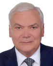
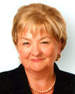
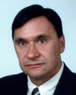
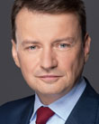

2026-07-22
Projekt wpłynął do Sejmu Druk nr 2839 ↗
u-prezydentaustawaStanowisko Senatu (2026-09-24)Sejm 10/2839
| Proces | Sejm kadencja 10, nr 2839 |
|---|---|
| Wpłynął | 2026-07-22 |
| Ostatnia zmiana źródła | 2026-09-24 |
| RCL | legislacja.rcl.gov.pl ↗ |
| Źródło | api.sejm.gov.pl ↗ |
511 zdarzeń
10. kadencja, 63. posiedzenie, 3. dzień - Podsekretarz Stanu w Ministerstwie Finansów Jarosław Neneman 10. kadencja, 63. posiedzenie, 3. dzień (31-07-2026) 25. punkt porządku dziennego: Pierwsze czytanie rządowego projektu ustawy o zmianie ustawy o podatku akcyzowym (druk nr 2839). Podsekretarz Stanu w Ministerstwie Finansów Jarosław Neneman: Pani Marszałek! Szanowni Państwo! Dzień dobry. Bardzo mi miło przedstawić państwu ten projekt, tak długo wyczekiwany. Celem zmian, które państwu będziemy przedstawiać, jest jednakowe - i tu chciałbym podkreślić słowo: jednakowe - obciążenie akcyzą wszystkich papierosów elektronicznych, niezależnie od wykorzystywanej w nich technologii do waporyzacji płynu oraz zapewnienie - znowu podkreślenie - równego traktowania pod względem fiskalnym wszystkich urządzeń do waporyzacji, w tym podgrzewaczy i urządzeń wielofunkcyjnych. Zmiany przewidziane w projekcie mają charakter kompleksowy i są odpowiedzią na dotychczasowe sposoby obchodzenia przepisów o opodatkowaniu akcyzą e-papierosów. Proponujemy wprowadzenie innego modelu obciążenia akcyzą e-papierosów, którego elementem nie będzie opodatkowanie tzw. gór, podów czy wkładów, które obecnie są nią objęte. W zamian za to proponujemy objęcie podatkiem wszystkich tzw. baz czy dołów, czyli urządzeń sterująco-zasilających z grzałką i bez grzałki, które obecnie nie zawsze są opodatkowane. Zwiększamy też stawkę akcyzy na te urządzenia z 40 zł do 50 zł, zwiększamy obciążenie podatkiem płynu zawartego w jednorazowym papierosie elektronicznym do 50 zł, a także podnosimy stawkę akcyzy na płyn do papierosów z 1,80 zł do 2,20 zł. Trochę wyprzedzając państwa pytania, dodam, że nadal ten sposób uzależnienia od nikotyny będzie jednym z najtańszych dla klienta. To znaczy nikotyna wchłaniana za pomocą e-papierosa będzie najtańsza. Projekt wprowadza zatem zmiany dotyczące nie tylko papierosów elektronicznych, ale również pozostałych urządzeń do waporyzacji oraz płynu do papierosów elektronicznych. Przepisy wejdą w życie po upływie 14 dni od dnia ogłoszenia, stosowane zaś będą po 3 miesiącach, z wyjątkiem przepisu zwiększającego stawkę na płyn, który wejdzie w życie od 1 stycznia 2027 r., tak jak pozostałe zmiany stawek. Ten okres 3 miesięcy, o którym państwu mówię, to jest czas na dostosowanie się przedsiębiorców do nowych regulacji, w szczególności poprzez dokonanie rejestracji, uzyskanie zezwoleń oraz dopełnienie obowiązków związanych ze stosowaniem znaków akcyzy. Biorąc pod uwagę kompleksowy charakter projektu, a jednocześnie wcześniejsze deklaracje, które padały na tej sali, gdy państwo posłowie mówili, że będziecie za tym drugim projektem, jeśli będzie zawierał kompleksowe rozwiązania, a ten zawiera, liczę na przychylność i akceptację zaproponowanych rozwiązań również ze strony klubów opozycji parlamentarnej. Bardzo dziękuję. (Oklaski) Przebieg posiedzenia
10. kadencja, 63. posiedzenie, 3. dzień - Poseł Magdalena Łośko 10. kadencja, 63. posiedzenie, 3. dzień (31-07-2026) 25. punkt porządku dziennego: Pierwsze czytanie rządowego projektu ustawy o zmianie ustawy o podatku akcyzowym (druk nr 2839). Poseł Magdalena Łośko: Szanowna Pani Marszałek! Wysoka Izbo! W imieniu Klubu Parlamentarnego Koalicji Obywatelskiej pragnę przedstawić stanowisko wobec rządowego projektu ustawy z druku nr 2839. Warto już na początku jasno powiedzieć, że nie jest to nowa ani zaskakująca propozycja. To konsekwentna kontynuacja reformy rynku papierosów elektronicznych, którą ten Sejm rozpoczął w ubiegłym roku. Przypomnę, że w 2025 r. przyjęliśmy ustawę, która po raz pierwszy objęła akcyzą urządzenia do waporyzacji, zestawy części papierosów elektronicznych oraz rozszerzyła opodatkowanie nowych wyrobów nikotynowych. Był to ważny krok, dzięki któremu zakończył się okres, w którym część rynku funkcjonowała poza systemem podatkowym. Jednocześnie Ministerstwo Finansów od początku zapowiadało, że nie jest to koniec zmian. Rynek bardzo szybko zaczął bowiem dostosowywać się do nowych przepisów, wykorzystując luki definicyjne. Pojawiły się nowe konstrukcje urządzeń, a sprzedaż produktów w częściach, tzw. składaków, podów czy kartridży, zaczęła służyć obchodzeniu obowiązujących regulacji. Eksperci oraz media wielokrotnie wskazywali, że konieczne będzie kolejne uszczelnienie systemu. Dziś właśnie realizujemy tę zapowiedź. Projekt nie zmienia kierunku polityki państwa, on ją porządkuje. Zamiast ścigać kolejne pomysły producentów na omijanie prawa, tworzymy uniwersalne rozwiązania oparte na jasnych definicjach wszystkich urządzeń do waporyzacji. Dzięki temu, niezależnie od tego, jaka technologia pojawi się na rynku, będzie ona podlegała tym samym zasadom. To oznacza koniec nierównego traktowania przedsiębiorców. Uczciwe firmy nie będą przegrywać z tymi, które budowały swoją przewagę wyłącznie na wykorzystywaniu luk prawnych. Projekt zachowuje również właściwe proporcje pomiędzy celami fiskalnymi i zdrowotnymi. Podwyższenie z 40 do 50 zł akcyzy na urządzenia do waporyzacji oraz zwiększenie stawki dotyczącej płynu do papierosów elektronicznych z 1,80 zł do 2,2 zł za 1 ml nie jest celem samym w sobie. To element polityki ograniczania dostępności cenowej wyrobów nikotynowych, zwłaszcza wśród ludzi młodych, oraz przeciwdziałania zastępowaniu jednych produktów innymi wyłącznie z powodów podatkowych. Celem zmian jest jednakowe obciążenie akcyzą wszystkich papierosów elektronicznych niezależnie od wykorzystywanej w nich technologii do waporyzacji płynu oraz zapewnienie równego traktowania pod względem fiskalnym wszystkich urządzeń do waporyzacji, w tym również podgrzewaczy i urządzeń wielofunkcyjnych. A zatem rozwiązania zawarte w projekcie mają charakter uniwersalny. Dotychczasowe przepisy są obchodzone przez rozkładanie na części gór papierosów elektronicznych, czyli wkładów do wielorazowych papierosów elektronicznych, tzw. podów i kartridżów, o czym mówiłam wcześniej, które obecnie są objęte definicjami jednorazowych oraz wielorazowych papierosów elektronicznych. Dodatkowo na rynku papierosów elektronicznych pojawiają się nowe technologie, które powodują, że niektóre góry papierosów elektronicznych nie są obciążone akcyzą. W związku z powyższym ustawa wprowadza, po pierwsze, zmiany w definicjach papierosów elektronicznych, w tym zdefiniowanie pozostałych papierosów elektronicznych, do których będą się zaliczały wszystkie papierosy elektroniczne, które nie będą jednorazowymi lub wielorazowymi papierosami elektronicznymi. Po drugie, proponuje się wprowadzenie innego modelu obciążenia akcyzą papierosów elektronicznych, którego elementem nie będzie już opodatkowanie akcyzą gór papierosów elektronicznych. W związku z tym proponuje się objęcie podatkiem akcyzowym wszystkich tzw. dołów, czyli również urządzeń zasilających i sterujących, np. bez grzałki, które obecnie nie są opodatkowane akcyzą. Po trzecie, projekt zwiększa
10. kadencja, 63. posiedzenie, 3. dzień - Poseł Sylwester Tułajew 10. kadencja, 63. posiedzenie, 3. dzień (31-07-2026) 25. punkt porządku dziennego: Pierwsze czytanie rządowego projektu ustawy o zmianie ustawy o podatku akcyzowym (druk nr 2839). Poseł Sylwester Tułajew: Tak jest. Pani Marszałek! Wysoka Izbo! Mam zaszczyt przedstawić stanowisko Klubu Parlamentarnego Rozwój Plus wobec projektu ustawy zawartego w druku nr 2839. Debatujemy nad projektem, w którym zawarto rozwiązania potrzebne, ale także podwyżki podatków oparte na wyjątkowo słabej ocenie skutków regulacji. Powiedzmy jasno, że jako opozycja nie będziemy bronić luk podatkowych. Nie będziemy bronić sprzedaży urządzeń w częściach tylko po to, aby ominąć akcyzę. Nie będziemy też bronić nielegalnego handlu produktami nikotynowymi. Rząd, trzeba przyznać, rozpoznał problem. Obecne przepisy można obchodzić poprzez oddzielną sprzedaż zbiornika, grzałki i części zasilającej. Nowe technologie sprawiają, że niemal identyczne urządzenia są traktowane podatkowo zupełnie inaczej. Dlatego neutralne technologicznie definicje, objęcie akcyzą wszystkich części zasilających i sterujących oraz uporządkowanie systemu banderol to kierunek niezwykle zasadny. W tej części nad tym projektem ustawy powinniśmy dalej procedować. Rząd do uszczelnienia systemu dopisał jednak również podwyżki. Akcyza na urządzenia ma wzrosnąć z 40 zł do 50 zł. Stawka dotycząca płynu, która zgodnie z obowiązującą mapą akcyzową, co niezwykle ważne, miała wynosić od przyszłego roku 1,8 zł, ma wzrosnąć do 2,2 zł za 1 ml. Rząd sam przewiduje, że cena nowo opodatkowanego urządzenia może wzrosnąć o ok. 61 zł, a sprzedaż legalnego płynu spaść aż o 25%. Jednocześnie nie ma odpowiedzi na podstawowe pytanie, jaka część tej sprzedaży rzeczywiście zniknie, a jaka przejdzie do nielegalnego Internetu, przemytu albo na rynek tradycyjnych papierosów. Co więcej, rządowe wyliczenia, które zostały przedstawione w projekcie ustawy, wymagają pilnego poprawienia. Po spadku o 25% z ponad 1 mld ml pozostaje 765 mln, a nie 765 tys., jak to zapisano w OSR. (Oklaski) Również suma kwot wpisanych w tabeli dochodów wynosi 4379 mln zł, a nie, jak państwo mylnie dodali, 3944 mln zł. To jest błąd. Najpoważniejszy problem jednak jest inny. Rząd przedstawia 214 mln zł jako dodatkowy dochód z podwyżki płynu. Tę liczbę uzyskano poprzez porównanie nowej stawki z 2026 r., a nie z uchwaloną stawką 1,80 zł na rok 2027. To nie jest prawidłowa odpowiedź na pytanie, ile budżet zyska dzięki tej konkretnej ustawie. To są błędy rachunkowe, które znalazły się w OSR. Bardzo proszę, aby to jeszcze raz pododawać. Zdrowie młodych ludzi wymaga zdecydowanych działań. E-papierosy nie są obojętne dla zdrowia i nie powinny być łatwo dostępne dla młodych ludzi. Rozsądna polityka musi jednak również pamiętać o dorosłych palaczach wykorzystujących regulowane e-papierosy do odejścia od tradycyjnego palenia. Dlatego tak naprawdę ważna jest nie tylko wysokość podatku, ale przede wszystkim relacja cen między poszczególnymi produktami. Największą luką projektu pozostaje brak realnego planu walki z nielegalnym obrotem. Podwyższenie ceny w legalnym sklepie jest bardzo proste. Znacznie trudniejsze jest blokowanie nielegalnej sprzedaży internetowej, kontrolowanie przesyłek i egzekwowanie zakazu sprzedaży nieletnim. Właśnie tego planu rząd nie przedstawił. Dlatego z całą mocą opowiadam się za tym, aby nad tym projektem ustawy rzeczywiście procedować w komisji, zapewne w Komisji Finansów Publicznych. Bardzo jestem ciekawy tych wyjaśnień pana ministra dotyczących błędów rachunkowych, błędów również w wyliczeniu zysków, dochodów dla budżetu państwa. Raz jeszcze na koniec podkreślam, że nie ma żadnej obrony luk podatkowych. (Dzwonek) Trzeba bronić zdrowia obywateli, rzetelnego stanowienia prawa oraz uczciwych przedsiębiorców. Przebieg posiedzenia
10. kadencja, 63. posiedzenie, 3. dzień - Poseł Jolanta Zięba-Gzik 10. kadencja, 63. posiedzenie, 3. dzień (31-07-2026) 25. punkt porządku dziennego: Pierwsze czytanie rządowego projektu ustawy o zmianie ustawy o podatku akcyzowym (druk nr 2839). Poseł Jolanta Zięba-Gzik: Szanowna Pani Marszałek! Panie Ministrze! Wysoka Izbo! Mam zaszczyt przedstawić stanowisko klubu Polskie Stronnictwo Ludowe odnośnie do rządowego projektu ustawy o zmianie ustawy o podatku akcyzowym, druk nr 2839. Projekt ustawy dotyczy zmian w opodatkowaniu papierosów elektronicznych, urządzeń do waporyzacji oraz płynów do e-papierosów. Ma on uporządkować przepisy i zamknąć luki, które obecnie pozwalają podobne produkty traktować w różny sposób. Rynek e-papierosów bardzo szybko się zmienia. Pojawiają się nowe urządzenia, nowe wkłady i nowe rozwiązania techniczne. Część z nich jest dziś objęta akcyzą, a część pozostaje poza systemem, choć w praktyce służą do tego samego. Projekt wprowadza więc nowe i bardziej precyzyjne definicje. Rozróżnia jednorazowe papierosy elektroniczne, wielorazowe papierosy elektroniczne na wymienne wkłady, pozostałe papierosy elektroniczne oraz same wkłady. Akcyzą mają zostać objęte także urządzenia zasilające i sterujące, czyli tzw. doły urządzeń, również wtedy, gdy nie mają grzałki. Jednocześnie same wkłady przestaną być opodatkowane jako urządzenia, natomiast akcyzą nadal będzie objęty znajdujący się w nich płyn. Projekt podnosi również stawki akcyzy. Stawka na urządzenia do waporyzacji ma wzrosnąć z 40 zł do 50 zł za sztukę. Taka sama stawka ma dotyczyć zestawów części. W przypadku jednorazowych papierosów elektronicznych dodatkowe obciążenie ma również wynosić 50 zł. Od 1 stycznia 2027 r. akcyza na płyn do papierosów elektronicznych ma wzrosnąć z 1,80 zł do 2,20 zł za 1 ml. Projekt przewiduje też nowe obowiązki dla części przedsiębiorców. Chodzi m.in. o rejestrację w Centralnym Rejestrze Podmiotów Akcyzowych, uzyskanie odpowiednich zezwoleń, prowadzenie ewidencji, składanie deklaracji oraz stosowanie znaków akcyzy. Przedsiębiorcy mają otrzymać 3 miesiące na przygotowanie się do nowych zasad. W projekcie przewidziano również rozwiązania dotyczące produktów znajdujących się już w magazynach i sprzedaży, wydawania banderol oraz zakończenia dotychczasowych procedur akcyzowych. Zmiany są potrzebne. Po pierwsze, chodzi o równe zasady dla przedsiębiorców. Nie może być tak, że jedno urządzenie podlega podatkowi, a drugie niemal identyczne już nie, tylko dlatego, że ma trochę inną budowę albo zostało sprzedane w częściach. Takie różnice prowadzą do obchodzenia przepisów i stawiają uczciwie działające firmy w gorszej sytuacji. Po drugie, chodzi o szczelność systemu podatkowego. Obecne przepisy są obchodzone m.in. przez dzielenie urządzeń na poszczególne elementy. Projekt ma sprawić, że o opodatkowaniu będzie decydowała rzeczywista funkcja produktu, a nie techniczny sposób jego wykonania. Ale co najważniejsze, chodzi też o zdrowie. E-papierosy nie są niewinnym gadżetem. Zawierają nikotynę, która silnie uzależnia. Jest to szczególnie niebezpieczne w przypadku dzieci i młodzieży, ponieważ ich mózg nadal się rozwija. Według danych Państwowej Inspekcji Sanitarnej e-papierosów używało ponad 22% polskiej młodzieży w wieku od 13 do 15 lat. To więcej niż co piąty nastolatek. W tej samej grupie wiekowej tradycyjne papierosy paliło ponad 11% młodych osób. Oznacza to, że e-papierosy są wśród młodzieży prawie dwa razy bardziej popularne niż papierosy tradycyjne. To są bardzo niepokojące dane. Mówimy przecież o dzieciach w wieku 13, 14 czy 15 lat. Często zaczynają one używać e-papierosów, nie zdając sobie sprawy, że mogą się bardzo szybko uzależnić. Mózg człowieka rozwija się mniej więcej do 25. roku życia. Nikotyna może zaburzać rozwój obszarów odpowiedzialnych za koncentrację, uczenie się, podejmowanie decyzji i kontrolowanie impulsów. Nieprawdą jest też, że e-papieros wytwarza wyłącznie nieszkodliwą parę wodną. Użytkownik wdycha aerozol,
10. kadencja, 63. posiedzenie, 3. dzień - Poseł Dariusz Wieczorek 10. kadencja, 63. posiedzenie, 3. dzień (31-07-2026) 25. punkt porządku dziennego: Pierwsze czytanie rządowego projektu ustawy o zmianie ustawy o podatku akcyzowym (druk nr 2839). Poseł Dariusz Wieczorek: Pani Marszałek! Panie Ministrze! Wysoka Izbo! Mam przyjemność przedstawić stanowisko klubu Lewicy w sprawie projektu ustawy o zmianie ustawy o podatku akcyzowym. Trzeba jedną rzecz docenić w tym wszystkim, a mianowicie to, że rząd i Ministerstwo Finansów wyciągają wnioski i analizują to, co się dzieje na rynku, w tym przypadku - na rynku papierosów elektronicznych, widząc, w jaki sposób przedsiębiorcy i firmy je produkujące starają się omijać obowiązujące ustawy i przepisy po to, ażeby te podatki płacić mniejsze. Nie ma się też co dziwić, że producenci tych urządzeń dokładnie coś takiego robili, i pewnie robią do dzisiaj, bo chcą płacić mniejsze podatki. Rolą państwa natomiast jest to, aby stworzyć klarowny, uczciwy system, który będzie wszystkich traktował równo i nie będzie pozwalał na tego typu możliwości omijania płacenia podatku, w tym przypadku - podatku akcyzowego od papierosów elektronicznych. To jest o tyle ważne, że w tym wszystkim rzeczywiście musimy brać pod uwagę zdrowie polskich dzieci. Prawda jest taka, że te wszystkie badania są przerażające. Dzisiaj ten rynek rozwija się w taki sposób, że papierosy elektroniczne stały się popularne wśród młodzieży między 12. a 15. rokiem życia - bo to jest fajny gadżet, to fajnie, ładnie wygląda, fajnie jest, jak się pójdzie z kolegą, pokaże, powie: A dzisiaj ja sobie coś takiego kupiłem. A dzisiaj ja kupiłem coś innego. Jednak musimy brać pod uwagę, że używanie tych papierosów jest też bardzo szkodliwe. Jeżeli dane mówią, że 60% dzieci w wieku od 12 do 15 lat już korzysta z tych papierosów, a co czwarta młoda dziewczyna i co piąty młody chłopiec, do 15. roku życia, regularnie z tego korzystają, to znaczy, że jest z tym bardzo poważny problem, pewnie wynikający również z tego, że i dostępność, i cena tych urządzeń pozwalają na to, że młodzi ludzie również mogą z tego korzystać. Oczywiście w tym wszystkim kluczową sprawą jest to, żeby edukować młodzież, żeby pokazywać, jak to jest szkodliwe, pokazywać złe skutki użytkowania papierosów elektronicznych. Ale ta ustawa ma w tej chwili naprawić to, co nie funkcjonuje, czyli po pierwsze, zdefiniować, co to jest ten papieros elektroniczny, co to jest jednorazowy papieros elektroniczny, co to jest wielorazowy papieros elektroniczny. W tej ustawie jest to absolutnie sprecyzowane, więc teraz już nie będzie takiej możliwości, że góra od papierosów będzie bez akcyzy, a dół będzie z akcyzą albo odwrotnie. Papieros elektroniczny jest papierosem elektronicznym, w związku z czym będzie obciążony podatkiem akcyzowym. Podobnie jest, jeżeli chodzi o jednorazowe papierosy elektroniczne. Płyn, który jest użytkowany w tych papierosach, będzie obciążony akcyzą. Jest więc szereg rozwiązań, które mają na celu jedną rzecz: uproszczenie tych przepisów i równe obciążenie wszystkich producentów papierosów elektronicznych podatkiem akcyzowym. Pewnie to jest kolejna zmiana ustawy o podatku akcyzowym. Pewnie trzeba będzie dalej obserwować ten rynek, to, jak on będzie funkcjonował. Jedno jest pewne: zmiana tych przepisów idzie w dobrą stronę, dlatego klub Lewicy będzie to wspierał i będzie popierał ten projekt ustawy, wychodząc z założenia, że jasne, klarowne, czytelne przepisy dotyczące podatków są potrzebne, szczególnie dla przedsiębiorców. Jeżeli przedsiębiorca jest uczciwy, będzie te podatki płacił. Być może przedsiębiorcy znowu będą szukali jakiejś luki, więc pewnie po raz kolejny się spotkamy, nowelizując ustawę dotyczącą podatku akcyzowego. (Dzwonek) Dziękuję bardzo. (Oklaski) Przebieg posiedzenia
10. kadencja, 63. posiedzenie, 3. dzień - Poseł Michał Połuboczek 10. kadencja, 63. posiedzenie, 3. dzień (31-07-2026) 25. punkt porządku dziennego: Pierwsze czytanie rządowego projektu ustawy o zmianie ustawy o podatku akcyzowym (druk nr 2839). Poseł Michał Połuboczek: Pani Marszałek! Wysoka Izbo! Panie Ministrze! Jako Konfederacja uważamy, że podwyższenie podatków spowoduje tylko jedno: że te produkty przejdą do szarej strefy, że będzie można, tak jak już teraz można, kupić je w obrocie nielegalnym i że tak naprawdę te osoby, które z tego korzystają, będą korzystać dalej - tyle że z produktów kompletnie niewiadomego pochodzenia, sprowadzonych gdzieś z Chin i sprzedawanych w obrocie pozasklepowym. Tak że uważamy, że spowoduje to, tak jak zresztą każde podwyższenie podatków, tylko powiększenie szarej strefy. Jako Konfederacja składamy wniosek o odrzucenie tego projektu w pierwszym czytaniu, gdyż zgodnie z naszym programem jesteśmy przeciw podwyższaniu podatków. Dziękuję. Przebieg posiedzenia
10. kadencja, 63. posiedzenie, 3. dzień - Poseł Wioleta Tomczak 10. kadencja, 63. posiedzenie, 3. dzień (31-07-2026) 25. punkt porządku dziennego: Pierwsze czytanie rządowego projektu ustawy o zmianie ustawy o podatku akcyzowym (druk nr 2839). Poseł Wioleta Tomczak: Szanowna Pani Marszałek! Panie Ministrze! Wysoka Izbo! Jestem zatrwożona. Państwo są przeciwko podnoszeniu podatków, więc coś, co mogłoby wzmocnić zdrowie obywateli, a głównie zapobiec temu, by dzieci wchodziły w uzależnienie, najlepiej odrzucić. (Poseł Michał Połuboczek: Ale one i tak kupią...) Mam przyjemność przedstawić stanowisko Klubu Parlamentarnego Polska 2050 wobec rządowego projektu ustawy o zmianie ustawy o podatku akcyzowym, zawartego w druku nr 2839. Głównym celem procedowanej nowelizacji jest kompleksowe uszczelnienie systemu opodatkowania papierosów elektronicznych. To konieczna odpowiedź na systemowe obchodzenie przepisów, które zagraża zdrowiu Polek i Polaków. W projekcie dąży się do jednakowego obciążenia akcyzą wszystkich urządzeń do waporyzacji, niezależnie od wykorzystanej w nich technologii, a także do zrównania traktowania fiskalnego podgrzewaczy i urządzeń wielofunkcyjnych. Zmiany te stanowią konieczną odpowiedź na rynkowe patologie, w ramach których przedsiębiorcy unikali płacenia akcyzy poprzez rozdzielanie elementów e-papierosów, takich jak wymienne wkłady i urządzenia zasilające, na osobno sprzedawane części. Aby zrealizować te założenia, ustawa wprowadza fundamentalne zmiany w definicjach wyrobów akcyzowych, przenosząc ciężar opodatkowania z tzw. gór, czyli wymiennych wkładów z płynem, na ˝doły˝, a więc urządzenia zasilająco-sterujące. Wkłady jako takie zostaną wyłączone z definicji papierosów elektronicznych i nie będą już odrębnie obciążane akcyzą. W zamian podatkiem objęte zostaną wszystkie bazy zasilające i sterujące, nawet te niewyposażone bezpośrednio w system grzewczy. Konsekwencją tej zmiany modelu jest istotne podwyższenie stawek podatkowych. A musimy podkreślić, że wzmacnianie barier ekonomicznych jest skutecznym elementem kreowania prozdrowotnej polityki publicznej państwa w kwestii korzystania z produktów niezdrowych. Akcyza na wszystkie urządzenia do waporyzacji, a także na zestawy części do tych urządzeń wzrośnie z 40 zł do 50 zł za sztukę. Analogicznej podwyżce o 10 zł ulegnie doliczenie do akcyzy za płyn zawarty w jednorazowych e-papierosach, co ma zapobiec niepożądanemu zwiększeniu ich dostępności cenowej i popularności względem urządzeń wielorazowych. Ponadto planowane jest, że od 1 stycznia 2027 r. stawka akcyzy na sam płyn do papierosów elektronicznych zostanie znacznie podniesiona, z 1,80 zł do 2,20 zł za każdy mililitr. Oceniając zaproponowane rozwiązania, należy stanowczo poprzeć kroki zmierzające do uszczelnienia systemu podatkowego i wyeliminowania luk prawnych, które dotychczas pozwalały na unikanie opodatkowania poprzez sztuczny arbitraż konstrukcyjny. Neutralność technologiczna przepisów i równe traktowanie wszystkich wyrobów służących do waporyzacji to sprawiedliwy i niezbędny kierunek działań legislacyjnych. Wiemy już, że nasze dotychczasowe działania w tym zakresie były skuteczne, regulacje działają. Po wprowadzeniu ustawy w zeszłym roku 600 tys. osób zrezygnowało z codziennego korzystania z e-papierosów, a 1/3 z nich porzuciła nikotynę całkowicie. Budżet państwa zyskał ponad 3,6 mld zł z tytułu akcyzy. Powinniśmy iść za ciosem. Jeżeli pozwolimy, aby firmy tytoniowe obchodziły te przepisy, efekt zarówno zdrowotny, jak i fiskalny zostanie zniwelowany. Klub Parlamentarny Polska 2050 popiera skierowanie projektu do dalszych prac. To kolejny ważny krok w kierunku ograniczenia dostępności szkodliwych wyrobów nikotynowych. Pokazujemy, że jako koalicja 15 października nie ustąpimy w obliczu nacisków lobby tytoniowego. Jesteśmy gotowi na kolejne rundy tej batalii, bo wiemy, że stawką jest zdrowie naszych obywateli. Dziękuję bardzo. (Oklaski) Przebieg posiedzenia
10. kadencja, 63. posiedzenie, 3. dzień - Poseł Jarosław Sachajko 10. kadencja, 63. posiedzenie, 3. dzień (31-07-2026) 25. punkt porządku dziennego: Pierwsze czytanie rządowego projektu ustawy o zmianie ustawy o podatku akcyzowym (druk nr 2839). Poseł Jarosław Sachajko: Pani Marszałek! Wysoka Izbo! Panie Ministrze! Ten projekt pokazuje, że można było przygotować rozwiązanie szersze, przejrzyste i jednakowe dla wszystkich technologii oraz wszystkich producentów. Można było odejść od regulacji pisanej pod jeden konkretny rodzaj urządzenia i zaproponować system obejmujący cały rynek. Trzeba było tylko chcieć. Druk nr 2839 wprowadza technologicznie neutralne definicje, obejmuje podatkiem wszystkie urządzenia zasilające i sterujące, porządkuje status wkładów oraz ustala jednolite stawki akcyzowe. Możemy dyskutować o ich wysokości, ale zasady powinny być jednakowe dla wszystkich uczestników rynku, tak jak rząd zaproponował w tym projekcie. Dlatego należy dzisiaj zapytać pana ministra: Ile pieniędzy podatników przepalono wcześniej na przygotowanie lobbystycznej ustawy z druku nr 2457, procedowanie nad nią i jej obsługę prawną? Ile godzin pracy urzędników, komisji sejmowych, legislatorów i senatorów zmarnowano na regulację, która po kilku miesiącach miała zostać zastąpiona zupełnie innym, obecnie procedowanym projektem? I przede wszystkim: kto i dlaczego forsował poprzednią ustawę, która w praktyce miała wyeliminować z rynku konkretnego producenta, podczas gdy jego konkurenci pozostawaliby w uprzywilejowanej pozycji? Polacy mają prawo poznać odpowiedzi, bo prawo podatkowe nie może być narzędziem do ustawiania rynku. Chcę podziękować panu prezydentowi za skierowanie ustawy z lobbystycznego druku nr 2457 do Trybunału Konstytucyjnego w trybie kontroli prewencyjnej. To była decyzja odpowiedzialna, chroniąca pewność prawa, równość przedsiębiorców i konstytucję. Mam poważne podejrzenia, że gdyby nie decyzja pana prezydenta, procedowany dzisiaj projekt - sprawiedliwy dla producentów, konsumentów i budżetu - nigdy by nie powstał. Dorosły człowiek ma prawo podejmować decyzje ryzykowne, decyzje dotyczące własnego zdrowia, nawet prowadzące do śmierci, takie jak decyzje o paleniu papierosów czy e-papierosów. Nie ma jednak prawa przerzucać kosztów tych decyzji na innych podatników. Dlatego państwo może nakładać akcyzę, ale musi robić to uczciwie, proporcjonalnie i jednakowo wobec wszystkich, tak jak w tej propozycji. Poprzemy sprawiedliwe opodatkowanie. Nie zgodzimy się natomiast, aby pod pozorem troski o zdrowie publiczne pisać przepisy pod interes wybranych uczestników rynku. Dziękuję. Przebieg posiedzenia
10. kadencja, 63. posiedzenie, 3. dzień - Poseł Patryk Wicher 10. kadencja, 63. posiedzenie, 3. dzień (31-07-2026) 25. punkt porządku dziennego: Pierwsze czytanie rządowego projektu ustawy o zmianie ustawy o podatku akcyzowym (druk nr 2839). Poseł Patryk Wicher: Szanowna Pani Marszałek! Panie Ministrze! Wysoka Izbo! Szanowni Państwo! Można powiedzieć, panie ministrze: i dało się. Mogę pogratulować i podziękować, bo tak się umówiliśmy, pan minister dał słowo ostatnio, że jeśli chodzi o uspójnienie obłożenia akcyzowego wszystkich wyrobów, by było jednolite, jeśli chodzi o dane kategorie, to ono nastąpi. Mieliśmy bowiem bardzo dużą dyskusję przy ostatniej ustawie, która niestety część rynku troszeczkę preferencyjnie potraktowała, jeśli chodzi o obciążenie. Były różne sytuacje, rodziło to różne podejrzenia. Dzisiaj mamy projekt, który niweluje ten zakres domniemań, przypuszczeń i nieprawidłowości. A więc wszystkie podmioty w obrocie gospodarczym, które mają podobne produkty, powinny być jednakowo traktowane w polskim systemie. I to jest dobry kierunek, jeśli chodzi o tę część ustawy. Dlatego też dla mnie osobiście, jako osoby, która też się zajmuje ochroną zdrowia, niezależnie od tego, czy to są papierosy klasyczne czy elektroniczne, czy to jest aerozol czy jakakolwiek inna forma wprowadzania tych substancji do organizmu, te substancje powinny być analogicznie, tak samo akcyzowane, bo są tak samo szkodliwe dla funkcjonowania organizmu. Dlatego też uważam, że ta część jest dobrze napisana. Natomiast, panie mistrze, nie możemy się zgodzić do końca z tą drugą częścią. O ile nie jesteśmy przeciwnikami podnoszenia akcyzy, bo przecież sami stworzyliśmy mapę drogową, która miała służyć pewnemu porozumieniu między sferą gospodarczą, społeczną i in., żeby racjonalnie podwyższać te opodatkowania, o tyle, panie mistrze, w tym zakresie apeluję do pana, żeby jednak w dalszym procedowaniu tej ustawy zracjonalizować ten skok opodatkowania, ponieważ to jest zwiększenie opodatkowania tych urządzeń de facto o 20-25%. Nie jest to zły kierunek, to jest bardzo dobry kierunek. Powinniśmy jak najbardziej obciążać podatkowo takie formy, żeby ograniczać ich dostępność, szczególnie dla młodych ludzi, i w ogóle zniechęcać ludzi do ich stosowania. Natomiast jednak obrót gospodarczy i to, że gospodarka musi się przestawiać na inną produkcję, na inne sektory w dłuższej perspektywie czasowej, jeśli chce z danego sektora wyjść, wskazuje, że trzeba to zracjonalizować. Chodzi o to, żeby to pewność polskiego prawa, pewność opodatkowania dała tym podmiotom gospodarczym, ale też innym, w różnych branżach, solidny fundament funkcjonowania. Dlatego też apeluję, żebyśmy w tej ustawie jeszcze dookreślili mapę drogową dochodzenia, tzn. żeby np. w tym roku podwyższyć pewien współczynnik, w następnym np. rozłożyć tą mapę, nie wiem, na 5-6 lat. Chodzi o to, żeby branża wiedziała, jak to będzie wyglądało horyzontalnie do 6 lat. Nie jest chyba dużym problemem usiąść i zrealizować taką mapę drogową. Wtedy będzie ta stabilność gospodarcza. A co nam grozi? Ja się niestety nie zgadzam z panią poseł, która mówiła o tym, że młodzież będzie miała mniejszy dostęp, jeśli podniesiemy akcyzę. Niestety nie. Będzie szara strefa. Wypchniemy dużą część młodzieży, dużą część osób do szarej strefy, do zakupów przez Internet, do zakupów zagranicznych, do ściągania i zakupów w nielegalnych źródłach zakupowych. A więc tutaj trzeba by zaostrzyć prawo, panie ministrze, w kontekście karania za sprzedaż poza obrotem legalnym takich substancji, które są akcyzowane - to jest pierwsza rzecz - ale także bardzo mocnego karania osób, które osobom niepełnoletnim sprzedają takie urządzenia, takie substancje (Gwar na sali, dzwonek), ponieważ naprawdę jest to karygodne. To tak jak sprzedaż alkoholu, papierosów, każdej formy papierosów i e-papierosów, aerozolów - to naprawdę powinno być tak samo karane. I tutaj powinniśmy być bardzo drastyczni, stanowczy w tym zakresie, ponieważ niestety statystyki pok
10. kadencja, 63. posiedzenie, 3. dzień - Poseł Rafał Kasprzyk 10. kadencja, 63. posiedzenie, 3. dzień (31-07-2026) 25. punkt porządku dziennego: Pierwsze czytanie rządowego projektu ustawy o zmianie ustawy o podatku akcyzowym (druk nr 2839). Poseł Rafał Kasprzyk: Szanowna Pani Marszałek! Panie Ministrze! Wysoka Izbo! W imieniu Klubu Parlamentarnego Centrum przedstawię stanowisko wobec rządowego projektu ustawy o zmianie ustawy o podatku akcyzowym, zawartego w druku nr 2839. Na początek powiem, że z uwagą czekałem na wystąpienie pana posła Sachajki, drogiego kolegi, który poprzednio pokazał pewne zmiany w budowie właśnie tych papierosów, zmiany, które powodowały, że akcyza nie obejmowałaby wszystkich. Dzisiaj nie było tego tematu, w związku z tym uważam, że to jest dowód, że projekt ustawy jest już uszczelniony, i dobrze. Kiwa pan głową, bardzo się cieszę. To dobry sygnał z kilku powodów. Przede wszystkim mamy wprowadzone jedne zasady dla wszystkich. To są zasady, które powinny obowiązywać zawsze. Konkurencja nie powinna bazować na kreatywności, która ucieka właśnie do szarej strefy i powoduje to, że później nasze przepisy nie mogą być zastosowane odnośnie do produktów, które są modyfikowane w trakcie procedowania ustawy. Bo trzeba powiedzieć, że w przypadku poprzedniej ustawy z druku nr 2457, podczas jej procedowania właśnie były już te modyfikacje technologiczne, które nie zmieniały istoty rzeczy, ale jednak powodowały usunięcie pewnych produktów spod obowiązywania tej ustawy. Dzisiejszy projekt usuwa tę możliwość. Wszystkie e-papierosy są poprzez zmianę definicji, poprzez zmiany w tej ustawie objęte opłatą akcyzową, o której dzisiaj dyskutujemy. Drugie. To jest jasne, przede wszystkim dla zdrowia naszych dzieci. Wielokrotnie mówiono na tej sali o szkodliwości palenia papierosów, o szkodliwym wpływie nikotyny na młode organizmy, na młode, rozwijające się mózgi naszych dzieci. I to jest zupełnie jasne, że ta podwyżka akcyzy ograniczy w dużym stopniu dostępność dla młodych dzieci. Pana posła z PiS już nie ma, ale myślę, że w komisji będziemy o tym dyskutowali. Ta akcyza, żeby była skuteczniejsza, powinna być nawet wyższa - a, jest tutaj kolega - a nie obniżana, bo zachowanie typu: tak, ale nie, nie, ale tak jest trochę niespójne. Po trzecie, tak jak już mówiłem, spójność i kompleksowość rozwiązań zawartych w tej ustawie powoduje, że nie będzie już omijania i kombinowania albo będzie to ukrócone w stopniu maksymalnie dzisiaj możliwym. Jasna definicja i uznanie papierosa elektronicznego za papierosa elektronicznego, niezależnie od wkładu, od grzałki, od kartridżu, to jest bardzo dobre rozwiązanie, które uszczelnia nasz system. Muszę powiedzieć o vacatio legis, które wydaje się zupełnie wystarczające, zwłaszcza w kontekście historii poprzedniej ustawy, kiedy podczas procedowania producenci już dostosowali budowę swoich e-papierosów do tego, żeby tę projektowaną wtedy ustawę obchodzić. Dzisiaj to już się nie uda. To jest dobra ustawa, którą Klub Parlamentarny Centrum popiera i będzie ją wdrażał w życie. Dziękuję. (Oklaski) Przebieg posiedzenia
10. kadencja, 63. posiedzenie, 3. dzień - Poseł Marcin Józefaciuk 10. kadencja, 63. posiedzenie, 3. dzień (31-07-2026) 25. punkt porządku dziennego: Pierwsze czytanie rządowego projektu ustawy o zmianie ustawy o podatku akcyzowym (druk nr 2839). Poseł Marcin Józefaciuk: Szanowna Pani Marszałek! Wysoka Izbo! Projekt zamyka lukę, ale równocześnie podnosi akcyzę. Mam kilka pytań. Dlaczego w OSR z 1 mld ml po spadku o 25% zostaje 765 tys., a nie 765 mln? Jak wyliczono 214 mln dodatkowej akcyzy? Jakie dowody uzasadniają wzrost stawki na urządzenie z 40 do 50 zł, skoro lukę zamyka tak naprawdę zmiana definicji? Jakie działania wobec nielegalnej sprzedaży, szczególnie internetowej, i jakie mierniki przewiduje rząd, aby podwyżki nie powiększyły szarej strefy? Skoro KCPU podaje, że 32% uczniów ostatnich klas regularnie używa e-papierosów, to gdzie są edukacja, egzekwowanie zakazu sprzedaży małoletnim i pomoc w wychodzeniu z uzależnienia? Ogólnie rzecz ujmując, projekt jest godzien pochwalenia i będę głosował za nim jak najbardziej. (Oklaski) Przebieg posiedzenia
10. kadencja, 63. posiedzenie, 3. dzień - Poseł Małgorzata Pępek 10. kadencja, 63. posiedzenie, 3. dzień (31-07-2026) 25. punkt porządku dziennego: Pierwsze czytanie rządowego projektu ustawy o zmianie ustawy o podatku akcyzowym (druk nr 2839). Poseł Małgorzata Pępek: Pani Marszałek! Wysoka Izbo! Państwo nie może pozostawać bierne wobec dynamicznie rozwijającego się rynku papierosów elektronicznych i urządzeń do waporyzacji, zwłaszcza gdy pojawiają się rozwiązania umożliwiające obchodzenie obowiązujących przepisów. Dlatego kierunek zaproponowanych zmian należy ocenić pozytywnie. Obowiązkiem państwa jest skuteczne zamykanie luk prawnych wykorzystywanych do obchodzenia przepisów. Rynek nie może rozwijać się w oparciu o rozwiązania, których celem jest omijanie obowiązujących regulacji i uzyskiwanie przewagi nad podmiotami działającymi zgodnie z prawem. Niniejszy projekt ustawy stanowi właściwą odpowiedź na praktyki obserwowane na rynku papierosów elektronicznych i urządzeń do waporyzacji, dlatego zasługuje na naszą aprobatę i jednogłośne przyjęcie. (Dzwonek) Z oceny skutków regulacji wynika, że projekt ma przynieść dodatkowe dochody budżetowi państwa. Proszę o wskazanie, jakie kwoty są prognozowane w 1., 2. i 3. roku obowiązywania ustawy oraz na jakich założeniach oparto te szacunki. Dziękuję. Przebieg posiedzenia
10. kadencja, 63. posiedzenie, 3. dzień - Poseł Sylwester Tułajew 10. kadencja, 63. posiedzenie, 3. dzień (31-07-2026) 25. punkt porządku dziennego: Pierwsze czytanie rządowego projektu ustawy o zmianie ustawy o podatku akcyzowym (druk nr 2839). Poseł Sylwester Tułajew: Pani Marszałek! Wysoka Izbo! Zadając pytanie panu ministrowi, skupię się na tym właściwie najważniejszym, bo rząd zakłada spadek legalnej sprzedaży płynu aż o 25%, ale w żaden sposób nie ma tej analizy, jaka część konsumpcji zniknie, a jaka przejdzie do szarej strefy albo do tradycyjnych papierosów. W tym projekcie, mówiąc krótko, nie ma żadnego planu egzekucyjnego. Sama wyższa cena legalnego produktu nie ograniczy zakupów przez Internet, przemytu oraz sprzedaży nieletnim. Dlatego warto odpowiedzieć na takie pytanie: Jakie konkretne działania przeciwko nielegalnej sprzedaży internetowej i przemytowi zostaną uruchomione równocześnie z tą podwyżką, równocześnie z wejściem w życie tej ustawy? Dziękuję. (Oklaski) Przebieg posiedzenia
10. kadencja, 63. posiedzenie, 3. dzień - Poseł Henryka Krzywonos-Strycharska 10. kadencja, 63. posiedzenie, 3. dzień (31-07-2026) 25. punkt porządku dziennego: Pierwsze czytanie rządowego projektu ustawy o zmianie ustawy o podatku akcyzowym (druk nr 2839). Poseł Henryka Krzywonos-Strycharska: Dzień dobry, pani marszałek. Przede wszystkim chciałam podziękować. Wysoka Izbo! Rynek papierosów i urządzeń do waporyzacji jest coraz bardziej rozwinięty. Nie służy zdrowiu Polaków. Państwo nie może tolerować nieuczciwych firm, unikania obowiązków regulacji. W związku z dochodami z akcyzy proszę o wskazanie, na jaki cel zostaną przekazane środki finansowe. Czy uwzględni się zapobieganie chorobom płuc? Na dotatek powiem, że jestem kaleką, nie mam płuca i wiem, co to znaczy. Dlatego bardzo proszę, żeby były ograniczenia dla dzieci. Dzieci kupują papierosy jak cukierki. Dziękuję. (Oklaski) Przebieg posiedzenia
10. kadencja, 63. posiedzenie, 3. dzień - Poseł Jarosław Sachajko 10. kadencja, 63. posiedzenie, 3. dzień (31-07-2026) 25. punkt porządku dziennego: Pierwsze czytanie rządowego projektu ustawy o zmianie ustawy o podatku akcyzowym (druk nr 2839). Poseł Jarosław Sachajko: Pani Marszałek! Wysoka Izbo! Panie Ministrze! Ile pieniędzy podatników wydano na przygotowanie, konsultowanie i procedowanie ustawy z lobbystycznego druku nr 2457, skoro kilka tygodni później rząd przedstawił zupełnie nowy, kompleksowy projekt opodatkowania tego samego rynku? Kto był rzeczywistym autorem rozwiązań zawartych w lobbystycznym druku nr 2457? I ostatnie pytanie. Dorosły człowiek ma prawo podejmować decyzje szkodliwe dla własnego zdrowia, ale nie powinien przerzucać ich kosztów na pozostałych podatników. Dlatego pytam: Czy rząd zagwarantuje, że dodatkowe wpływy z akcyzy zostaną przeznaczone na leczenie chorób spowodowanych paleniem papierosów i e-papierosów, profilaktykę uzależnień i kontrolę nielegalnego rynku, zamiast zostać przejedzone przez budżet na kolejne stanowiska ministerialne i limuzyny? Dziękuję. Przebieg posiedzenia
10. kadencja, 63. posiedzenie, 3. dzień - Poseł Wioletta Maria Kulpa 10. kadencja, 63. posiedzenie, 3. dzień (31-07-2026) 25. punkt porządku dziennego: Pierwsze czytanie rządowego projektu ustawy o zmianie ustawy o podatku akcyzowym (druk nr 2839). Poseł Wioletta Maria Kulpa: Pani Marszałek! Wysoka Izbo! Nie możemy pominąć faktu chaosu legislacyjnego stworzonego przez sam rząd. W krótkim czasie przygotowano równoległe projekty zmieniające te same przepisy. Prokuratura Generalna wskazywała zresztą na takie działania, które pozostają w sprzeczności z zasadą racjonalnego ustawodawcy i pewności prawa. Projekt rozszerza się o kolejną podwyżkę podatku akcyzowego, zarówno od e-papierosów, jak i od urządzeń do waporyzacji. Należy jednak pamiętać, o czym mówią przedsiębiorcy prowadzący tę działalność, że ta branża zmaga się z bardzo trudną sytuacją, przede wszystkim w związku z rozwojem szarej strefy na poziomie ok. 60% w skali kraju. W związku z tym pytam. Jeśli OSR zakłada ok. 435 mln zł dodatkowych wpływów rocznie, nie przedstawia jednak przekonującej analizy, jaka część legalnego rynku może przejść do szarej strefy, to na jakich danych rząd oparł tę prognozę 435 mln zł, skoro nie wykazał wpływu podwyżki na nielegalny import (Dzwonek), handel internetowy oraz spadek legalnej sprzedaży? Potrzebujemy szczelnego prawa, a nie kolejnej nowelizacji, którą za kilka miesięcy ponownie trzeba będzie naprawiać. Dziękuję bardzo. Przebieg posiedzenia
10. kadencja, 63. posiedzenie, 3. dzień - Poseł Lidia Czechak 10. kadencja, 63. posiedzenie, 3. dzień (31-07-2026) 25. punkt porządku dziennego: Pierwsze czytanie rządowego projektu ustawy o zmianie ustawy o podatku akcyzowym (druk nr 2839). Poseł Lidia Czechak: Szanowna Pani Marszałek! Panie Ministrze! Ja również mam pytania do tego druku. Projekt ma przede wszystkim uszczelnić system podatku akcyzowego oraz wyeliminować sposoby obchodzenia obowiązujących przepisów przez producentów i importerów papierosów elektronicznych. Jak ministerstwo szacuje, jaki wpływ nowe rozwiązania będą miały na ograniczenie szarej strefy i zwiększenie dochodów budżetu państwa? Mam pytanie, w jaki sposób wykorzystamy te dodatkowe dochody. Czy one pójdą na profilaktykę związaną z niepaleniem papierosów, szczególnie przez dzieci i młodzież? Projekt przewiduje objęcie akcyzą wszystkich urządzeń do waporyzacji oraz ujednolicenie zasad ich opodatkowania, niezależnie od zastosowanej technologii. W jaki sposób proponowane rozwiązania zapewnią równe warunki konkurencji na rynku i uniemożliwią dalsze wykorzystywanie luk prawnych do unikania opodatkowania? Projekt daje przedsiębiorcom 3-miesięczny okres na dostosowanie się do nowych obowiązków akcyzowych, takich jak rejestracja, uzyskanie zezwoleń czy oznaczenie wyrobu znakami akcyzy. Jakie działania informacyjne i organizacyjne planuje Ministerstwo Finansów, aby proces wdrożenia (Dzwonek) nowych przepisów przebiegał sprawnie? (Oklaski) Przebieg posiedzenia
10. kadencja, 63. posiedzenie, 3. dzień - Poseł Jolanta Zięba-Gzik 10. kadencja, 63. posiedzenie, 3. dzień (31-07-2026) 25. punkt porządku dziennego: Pierwsze czytanie rządowego projektu ustawy o zmianie ustawy o podatku akcyzowym (druk nr 2839). Poseł Jolanta Zięba-Gzik: Pani Marszałek! Panie Ministrze! Wysoka Izbo! Projekt zakłada podwyższenie stawek akcyzy na urządzenia do waporyzacji, zestawy części oraz płyny do papierosów elektronicznych. Każda taka podwyżka może jednak zwiększać opłacalność nielegalnego obrotu. Stąd moje pytanie: Jakie konkretne działania planuje rząd, aby ograniczyć działanie szarej strefy, przemyt oraz sprzedaż produktów bez zapłaconej akcyzy, szczególnie przez Internet? Istnieje obawa, że przy podwyżkach ten handel przenosi się jednak do szarej strefy i ta szara strefa się rozrasta. Dlatego konkretne pytanie: Co rząd ma zamiar zrobić, żeby tę szarą strefę ograniczyć? Dziękuję bardzo. (Oklaski) Przebieg posiedzenia
10. kadencja, 63. posiedzenie, 3. dzień - Poseł Izabela Bodnar 10. kadencja, 63. posiedzenie, 3. dzień (31-07-2026) 25. punkt porządku dziennego: Pierwsze czytanie rządowego projektu ustawy o zmianie ustawy o podatku akcyzowym (druk nr 2839). Poseł Izabela Bodnar: Szanowna Pani Marszałek! Szanowny Panie Ministrze! Wysoka Izbo! Prezydent, zwany wetomanem, odrzucił poprzednią ustawę o podatku akcyzowym od szeroko rozumianych e-papierosów, która rzeczywiście miała węższy zakres, bo dotyczyła jedynie wycinka tego, do czego odnosi się aktualna propozycja. (Poseł Jarosław Sachajko: Zwykły szacunek, pani poseł.) (Dzwonek) Ale dokładnie tak doskonali się prawo: najpierw likwiduje się oczywistą lukę, a następnie należy zająć się tematem szerzej i wprowadzić rozwiązania obejmujące cały rynek i wszystkie technologie. Trudno więc zgodzić się z argumentami pana prezydenta. Na takiej decyzji przegrywa nie rząd, nie większość parlamentarna, ale przegrywa uczciwa konkurencja i przejrzystość systemu podatkowego. Przegrywają także młodzi ludzie, zachłyśnięci możliwościami e-papierosów, zbyt młodzi na zrozumienie konsekwencji ich zażywania. A zatem jedno pytanie do pana prezydenta, a nie do pana ministra: Skoro zawetował pan poprzednią ustawę, tłumacząc to legislacyjnym chaosem, to czy dziś, kiedy na pana biurko trafi kompleksowy projekt, jedyny projekt, podpisze go pan? Dziękuję. (Oklaski) Przebieg posiedzenia
10. kadencja, 63. posiedzenie, 3. dzień - Poseł Patryk Wicher 10. kadencja, 63. posiedzenie, 3. dzień (31-07-2026) 25. punkt porządku dziennego: Pierwsze czytanie rządowego projektu ustawy o zmianie ustawy o podatku akcyzowym (druk nr 2839). Poseł Patryk Wicher: Szanowna Pani Marszałek! Panie Ministrze! Szanowni Państwo! Odpowiadam pani poseł: poprzednia ustawa miała charakter lobbystyczny, ta jest kompleksowa. A więc, moi drodzy państwo, panie ministrze, zadam tylko dwa krótkie pytania. Pierwsze pytanie: Czy jest możliwe, żebyśmy w czasie procedowania nad tym dokumentem jednak rozważyli możliwość wprowadzenia mapy drogowej podnoszenia akcyzy, powiedzmy, w perspektywie 5-6 lat, żeby dać pewność i gwarancję gospodarczą tym podmiotom, które jednak uczciwie w świetle prawa zajmują się taką, a nie inną działalnością? Pytam, choć nie popieramy tej ustawy, tzn. ja nie popieram, ponieważ jako członek Komisji Zdrowia jestem jednak przeciwnikiem w ogóle tychże urządzeń do aerozolu, podawania tych substancji uzależniających. I drugie pytanie: Czy możemy rozważyć też pracę nad odpowiednimi kodeksami, które jednak zaostrzyłyby kary dla osób, które sprzedają w szarym obrocie, w szarej strefie bądź w sklepach osobom nieletnim, niepowołanym tego rodzaju substancje, czyli zarówno papierosy, różnego typu e-papierosy, jak i alkohol i nie tylko? To też warto byłoby rozważyć. Dziękuję serdecznie. Przebieg posiedzenia
10. kadencja, 63. posiedzenie, 3. dzień - Poseł Bożena Lisowska 10. kadencja, 63. posiedzenie, 3. dzień (31-07-2026) 25. punkt porządku dziennego: Pierwsze czytanie rządowego projektu ustawy o zmianie ustawy o podatku akcyzowym (druk nr 2839). Poseł Bożena Lisowska: Pani Marszałek! Wysoki Sejmie! Rządowy projekt wprowadza precyzyjne definicje papierosów elektronicznych i nowe zasady ich opodatkowania. Rozróżnia jednorazowe i wielorazowe wkłady oraz pozostałe e-papierosy, a także definiuje wkłady. To odpowiedź na rosnącą skalę obchodzenia przepisów akcyzowych oraz plagę tanich jednorazówek. Według raportów szara strefa jest gigantyczna. To nawet 60% rynku. Projektowane stawki to 2,20 zł za 1 ml płynu oraz dodatkowe 50 zł za każdy jednorazowy papieros elektroniczny. Projekt porządkuje chaotyczny dotąd rynek, zwiększając przewidywalność dla legalnych przedsiębiorców i ograniczając pole działania nieuczciwej konkurencji. Moje pytania brzmią: Jakie dodatkowe narzędzia planuje ministerstwo, by po tych kolejnych zmianach przeciwdziałać dalszemu wzrostowi szarej strefy w tym obszarze? (Dzwonek) Kiedy ministerstwo przedstawi ewaluację efektów wdrożenia regulacji na rynek i konsumentów? (Oklaski) Przebieg posiedzenia
10. kadencja, 63. posiedzenie, 3. dzień - Podsekretarz Stanu w Ministerstwie Finansów Jarosław Neneman 10. kadencja, 63. posiedzenie, 3. dzień (31-07-2026) 25. punkt porządku dziennego: Pierwsze czytanie rządowego projektu ustawy o zmianie ustawy o podatku akcyzowym (druk nr 2839). Podsekretarz Stanu w Ministerstwie Finansów Jarosław Neneman: Szanowna Pani Marszałek! Szanowni Państwo! Bardzo się cieszę z generalnego podejścia państwa do sprawy. To, co najwięcej emocji wzbudza, to liczby. Bardzo dziękuję panu posłowi za wnikliwe przeczytanie OSR-u. Faktycznie jest tam błąd - nie tysiące, a miliony. Zdarza się. Nie powinno, ale zdarza się. Pytają państwo też o szczegółowe wyjaśnienia. Myślę, że Komisja Finansów Publicznych będzie tym miejscem, gdzie państwu pokażemy metodę. Staraliśmy się te dodatkowe dochody szacować bardzo konserwatywnie. Państwo często zarzucają huraoptymizm, więc stąd ten 25-procentowy spadek. Pokażemy założenia. Możemy o nich dyskutować. Co do podwyżki stawki, to mówią państwo o tym, że może się zdarzyć, że ktoś z tych wyrobów potencjalnie mniej szkodliwych, choć nie o szkodliwości będziemy tu dyskutować, może się przerzucić na tradycyjne papierosy czy też powrócić do tradycyjnych papierosów. Chciałbym powiedzieć, że nawet po tych podwyżkach w przyszłym roku szacujemy, że akcyza na paczkę papierosów będzie wynosiła ok. 18 zł. W podzie, jeśli będziemy uzupełniali płyn, 2 ml płynu, ta akcyza będzie wynosiła 4,40. To jest duża różnica, to jest bardzo duża preferencja. Czy za duża, czy nie za duża, to jest na osobną dyskusję, jak i to, w jaki sposób te preferencje ograniczać. Więc proszę pamiętać, że tak, jest podwyżka na płyn. Ta podwyżka na płyn wynika z tego, że zmieniamy koncepcję. Mówiąc kolokwialnie, od podu nie będziemy pobierali 40 zł. Więc chcieliśmy to, co w jednym miejscu znika, rozłożyć w inne miejsca. Propozycje były różne, nawet dość daleko idące. Pytali państwo też o dwa projekty. Ten projekt, o którym dzisiaj mówimy, on jest efektem bardzo długich dyskusji, bardzo wielu spotkań i konsultacji, jakich branża tytoniowa chyba nie widziała. Bo to jest trzecia koncepcja tak naprawdę, którą państwu przedstawiamy. A dlaczego? Dlatego że z branżą rozmawialiśmy i wsłuchiwaliśmy się w jej uwagi. I dlatego taki sposób. W stosunku do wyjściowego projektu - to, o czym będziemy dyskutować - różni się to istotnie, dlatego że nie będzie tak jak w początkowej wersji - 40 zł na każdy pojemnik. To 40 zł na pojemniki już znika. W naszym przekonaniu to będzie bardzo skuteczne, dlatego że pokusa, nie chcę używać słowa ˝wymyślania˝... Ale powinno to ograniczyć inwencje producentów - tak to powiedzmy. Plus trzeba też otwarcie powiedzieć, że to spowoduje, że część rynku z szarej strefy wróci do legalej strefy. Czy 4,40 zł akcyzy na pody to jest coś, co istotnie rozszerzy szarą strefę? Ja osobiście wątpię. Pojawiła się propozycja - to pan poseł Wicher - żeby zastanowić się nad sankcjami karnymi. Bardzo jestem otwarty na to. Sankcje karne są fajne, jeszcze lepsza jest skuteczna egzekucja tych sankcji, więc to są działania... Pytali też państwo o działania KAS. Mogę powiedzieć tak: nie ma praktycznie tygodnia, żeby służby Krajowej Administracji Skarbowej razem z innymi służbami, a czasami po prostu Straż Graniczna czy Policja, nie likwidowały fabryki, nie dokonywały zatrzymania przemytu. Większość to nadal tradycyjne papierosy, ale również zdarzają się e-papierosy. Przeprowadzają one pewne działania, o których tutaj chyba nie będę w tym momencie jeszcze mówić. Tak, zdajemy sobie sprawę z tego, że pojawił się nowy problem w postaci nielegalnych kanałów dystrybucji e-papierosów, i te działania będą podejmowane. Było też odniesienie do mapy akcyzowej. Tak jak mówię, ta podwyżka, jeżeli chodzi o płyny, wynika z tego, że zmieniamy koncepcję. W jednym miejscu istotnie obniżamy, likwidujemy 40-złotową opłatę, podatek, więc jakoś te pieniądze staraliśmy się pozyskać z innego miejsca. Te pieniądze, proszę państwa, idą do b
| Klub | Za | Przeciw | Wstrz. | Nieobec. |
|---|---|---|---|---|
| KO | 0 | 155 | 0 | 1 |
| P. Adamowicz U. Augustyn S. Bielawska P. Bliźniuk M. Bochenek K. Bojarski P. Borys M. Bosacki M. Chmielewski A. Chybicka J. Cichoń Z. Czernow B. Dolniak A. Domański R. Dowhan M. Filiks J. Frydrych K. Frysztak P. Gabriel K. Gadowski A. Gajewska K. Gajewska E. Gapińska Z. Gawlik E. Gelert A. Gierada R. Giertych W. Giziński M. Golbik S. Gorczyca K. Grabczuk J. Grabiec M. Gromadzka B. Grygorcewicz M. Gzik T. Głogowski P. Głowski K. Habura A. Hanajczyk I. Hartwich M. Hok Ł. Horbatowski K. Jachira R. Jagła M. Janyska M. Jaros P. Jaskulski D. Jazłowiecka D. Jaśkowiec P. Kandyba J. Karnowski I. Karolewska K. Kierzek-Koperska J. Kluzik-Rostkowska Z. Konwiński T. Kostuś U. Koszutska A. Kot P. Kowal I. Kozłowska E. Kołodziej M. Kołodziejczak M. Kołodziejczak M. Koźlakiewicz I. Krawczyk M. Krawczyk R. Kropiwnicki A. Krzemiński H. Krzywonos-Strycharska M. Krząkała W. Król K. Królak P. Lachowicz S. Lamczyk M. Lasek G. Lenartowicz I. Leszczyna B. Lisowska K. Lubnauer A. Marchewka D. Marek P. Masełko K. Matusik-Lipiec J. Meysztowicz K. Mieszkowski C. Mroczek A. Myrcha G. Napieralski D. Niedziela J. Niedźwiedzki M. Niemczyk J. Niezgodzka S. Nitras B. Nowacka T. Nowak M. Okła-Drewnowicz P. Olszewski K. Osos P. Papke K. Pawliczak K. Piekarska L. Pietrzczyk K. Piątkowski K. Plocke E. Polak A. Pomaska M. Popielarz M. Pępek R. Rak M. Roguska M. Rosa J. Rutnicki M. Rząsa K. Sibińska R. Siemaszko T. Siemoniak K. Skowrońska W. Smarduch A. Sobolak M. Sowa K. Stachowicz F. Sterczewski P. Suski A. Szewiński H. Szopiński K. Szumilas T. Szymański A. Szłapka W. Sługocki A. Tajner C. Tomczyk M. Tomczykiewicz M. Tracz K. Truskolaski D. Tusk J. Urbaniak A. Uznańska-Wiśniewska R. Wardzała J. Wałęsa M. Wielichowska A. Witczak M. Witczak P. Witek A. Wojciechowska B. Wołoszański M. Wróbel B. Zawieja W. Zembaczyński U. Zielińska A. Łepkowska-Gołaś D. Łoboda M. Łośko A. Łuczak K. Łuczak A. Łącki Ł. Ściebiorowski | ||||
| PiS | 0 | 0 | 140 | 7 |
| A. Adamczyk W. Andzel D. Arciszewska-Mielewczyk I. Arent M. Ast P. Babinetz B. Bartuś R. Bochenek J. Bogucki J. Borowiak K. Bortniczuk B. Borys-Szopa L. Burzyńska M. Błaszczak A. Chojecki K. Choma D. Chorosińska T. Chrzan K. Ciecióra K. Czarnecki W. Czarnecki P. Czarnek A. Czartoryski L. Czechak A. Czerwińska K. Czochara W. Dajczak Z. Dolata B. Dorywalski P. Drabek J. Dziedziczak A. Dąbrowska-Banaszek M. Filipek-Sobczak R. Fogiel A. Gawron G. Gaża A. Gembicka S. Giżyński P. Gliński M. Golińska M. Gosek K. Gołojuch M. Grabowski M. Gróbarczyk K. Gwiazdowski A. Górska C. Hoc Z. Hoffmann P. Hreniak M. Jach N. Kaczmarczyk F. Kaczyński J. Kaczyński P. Kaleta S. Kaleta J. Kanthak M. Kałużny A. Kosztowniak H. Kowalczyk M. Kowalski B. Kownacki J. Krajewski L. Krasulski A. Krupka M. Krystian P. Król M. Kuchciński W. Kulpa M. Kurowska W. Kurowski Z. Kuźmiuk E. Leniart J. Lichocka G. Lorek A. Macierewicz E. Malik D. Matecki J. Materna G. Matusiak M. Matuszewski M. Małecki A. Milczanowska D. Milewski J. Mosiński M. Moskal A. Mrówczyński M. Ociepa B. Olbryś J. Osuch A. Paluch T. Pamuła B. Piecha G. Piechowiak A. Pieczarka D. Piontkowski S. Pogoda J. Polaczek P. Polak M. Porzucek K. Płażyński Z. Rau M. Romanowski R. Romanowski U. Rusecka J. Sasin P. Sałek A. Schmidt J. Sellin E. Siarka K. Smoliński K. Sobolewski A. Soin D. Stefaniuk M. Subocz M. Suski W. Szarama A. Szałabawka J. Szczurek-Żelazko P. Szrot S. Szwed K. Sójka K. Tchórzewski R. Telus P. Uruski M. Warchoł R. Warwas J. Warzecha M. Wassermann R. Weber M. Wesoły P. Wicher J. Wieczorek T. Wilk E. Witek A. Wojciechowska van Heukelom A. Wojtyszek M. Woś G. Woźniak T. Woźniak B. Wróblewski M. Wójcik J. Zieliński T. Zieliński Z. Ziobro S. Łukaszewicz A. Śliwka J. Świat | ||||
| RozwojPlus | 0 | 0 | 37 | 3 |
| A. Baluch R. Bartosik Z. Chmielowiec A. Cicholska J. Cieszyński M. Cieślak E. Duda R. Gontarz A. Gut-Mostowy M. Gwóźdź M. Horała P. Jabłoński M. Jakubiak F. Kapinos Ł. Kmita M. Koc W. Krajewski A. Kryj K. Kubów A. Kwiecień K. Lipiec M. Machałek G. Macko M. Morawiecki M. Pawłowska G. Puda P. Rychlik Ł. Schreiber O. Semeniuk-Patkowska S. Skwarek M. Stachowiak-Różecka K. Szczucki S. Szynkowski vel Sęk R. Terlecki W. Tomaszewski S. Tułajew P. Uściński W. Zubowski I. Zyska A. Ścigaj | ||||
| PSL-TD | 1 | 29 | 0 | 2 |
| W. Bartoszewski P. Bejda M. Biernacki A. Dziedzic A. Grzyb H. Kiepura D. Klimczak W. Kosiniak-Kamysz S. Krajewski A. Kłopotek R. Lubczyk M. Maliszewski U. Nowogórska M. Orliński K. Paszyk U. Pasławska M. Pyrzyk I. Raś J. Rzepa W. Różyński T. Samborski M. Sawicki C. Siekierski H. Smolarz Z. Sosnowski M. Sroka J. Tomczak S. Tomczyszyn P. Zgorzelski Z. Ziejewski J. Zięba-Gzik B. Żelazowska | ||||
| Lewica | 0 | 21 | 0 | 0 |
| B. Borowiec W. Czarzasty J. Czerniak A. Dziemianowicz-Bąk K. Gawkowski D. Gosek-Popiołek K. Kotula P. Kowal A. Kucharska-Dziedzic M. Kulasek W. Nowicka D. Olko A. Sikora W. Szczepański A. Szejna T. Tomaszewski T. Trela K. Ueberhan J. Wicha D. Wieczorek A. Żukowska | ||||
| Konfederacja | 14 | 0 | 0 | 2 |
| K. Berkowicz K. Bosak K. Bosak B. Foltyn S. Mentzen K. Mulawa B. Pejo M. Połuboczek G. Płaczek K. Szymański K. Tuduj W. Tumanowicz M. Wawer R. Wilk P. Wipler A. Zapałowski | ||||
| Centrum | 1 | 14 | 0 | 0 |
| I. Bodnar E. Burkiewicz Ż. Cwalina-Śliwowska P. Hennig-Kloska R. Kasprzyk R. Komarewicz A. Leo B. Okuła B. Oliwiecka R. Petru N. Pietrykowski M. Skonieczka M. Suchoń E. Szymanowska S. Ćwik | ||||
| Polska2050 | 0 | 14 | 0 | 1 |
| A. Buczyńska A. Gomoła M. Gramatyka P. Górnikiewicz B. Hołownia S. Hołownia A. Luboński M. Nowak Ł. Osmalak B. Romowicz E. Schädler P. Strach W. Tomczak K. Wnuk P. Śliz | ||||
| niez. | 1 | 5 | 1 | 0 |
| M. Józefaciuk J. Kowalski P. Matysiak Ł. Mejza J. Mucha P. Zalewski T. Zimoch | ||||
| Demokracja | 3 | 0 | 0 | 1 |
| J. Ardanowski P. Kukiz T. Rzymkowski J. Sachajko | ||||
| Razem | 0 | 4 | 0 | 0 |
| M. Konieczny M. Stożek A. Zandberg M. Zawisza | ||||
| Konfederacja_KP | 3 | 0 | 0 | 0 |
| R. Fritz W. Skalik S. Zawiślak | ||||



10. kadencja, 65. posiedzenie, 1. dzień - Poseł Sprawozdawca Krystyna Skowrońska 10. kadencja, 65. posiedzenie, 1. dzień (15-09-2026) 6. punkt porządku dziennego: Sprawozdanie Komisji Finansów Publicznych o rządowym projekcie ustawy o zmianie ustawy o podatku akcyzowym (druki nr 2839 i 3065). Poseł Sprawozdawca Krystyna Skowrońska: Panie Marszałku! Panie Ministrze! Panie i Panowie Posłowie! W imieniu Komisji Finansów Publicznych przedstawiam sprawozdanie z prac nad projektem ustawy dotyczącej zmiany podatku akcyzowego. Projekt ustawy jest zawarty w druku nr 2839, sprawozdanie w druku nr 3065. Dotyczy m.in. podatku akcyzowego od wyrobów papierosowych, od papierosów elektronicznych. Jeśli chodzi o projekt odnośnie do tego tematu, na posiedzeniu komisji wskazano, iż obecnie wkłady do wielorazowych papierosów elektronicznych nie są objęte odrębnym rodzajem wyrobów akcyzowych. Te wkłady, które umożliwiają wytworzenie aerozolu z zawartego w nich płynu po podłączeniu ich do zasilania - zbiorniki połączone z grzałką elektryczną - zostały zaliczone do papierosów elektronicznych, tzw. e-papierosów i w zależności od tego, czy możliwe jest ich ponowne napełnienie płynem, czy nie ma takiej możliwości, są odpowiednio uznawane za wielorazowe e-papierosy lub jednorazowe e-papierosy. W konsekwencji dzisiaj każdy wkład jest obciążony, opodatkowany akcyzą w wysokości 40 zł za sztukę. Zaobserwowano obchodzenie przepisów opodatkowujących akcyzą wkłady do wielorazowych papierosów elektronicznych, podów czy kartridży, polegające na oddzielaniu zbiornika od grzałki i sprzedawaniu ich rozłącznie. W ten sposób obchodzi się obowiązek płacenia akcyzy, bowiem zgodnie z obowiązującymi przepisami e-papierosem nie jest ani sam zbiornik, ani sama grzałka. W trakcie przeprowadzonych kontroli przez Krajową Administrację Skarbową stwierdzono taki sposób obchodzenia przepisów. Jak wskazano w uzasadnieniu projektu, na przeprowadzonych w 2024 r. prawie 900 kontroli w 1/3 były nieprawidłowości, w 2025 r. tych nieprawidłowości była już prawie połowa przy stwierdzonych kontrolach, a w 2026 r. na 335 kontroli nieprawidłowości stwierdzono w 104 przypadkach, a zatem w 1/3. Te przypadki dotyczyły jednorazowych papierosów. Było to odpowiednio w 2024 r. 130 tys. sztuk, w 2025 r. 78 tys., a w I kwartale 2026 r. już 81 tys. takich przypadków, zaś urządzeń do waporyzacji odpowiednio w 2025 r. prawie 800 i w 2026 r. - 1600. A zatem jeżeli na tej sali mówimy o uszczelnieniu systemu podatkowego, to takie rozwiązanie, które dotychczas obowiązywało, dawało producentom możliwość obchodzenia płacenia podatku akcyzowego. Zaproponowano w tym projekcie objęcie podatkiem akcyzowym wszystkich tzw. dołów e-papierosów czy urządzeń, które zasilają i sterują bez grzałki, które obecnie nie są opodatkowane akcyzą, zwiększenie stawki akcyzy na wszystkie urządzenia do waporyzacji - ta stawka zwiększyłaby się z 40 zł do 50 zł za sztukę oraz zwiększenie stawki akcyzy na płyn do papierosów, która od 1 stycznia zostałaby podniesiona o 40 gr za 1 ml. Zmiana koncepcji obciążenia, opodatkowania e-papierosów spowodowana jest w głównej mierze, jak wskazuje rząd, obserwowanym obchodzeniem przepisów przewidujących opodatkowanie akcyzą wkładów do wielorazowych papierosów elektronicznych, tzw. gór e-papierosów. W związku z tym proponuje się przeniesienie obciążenia, opodatkowania z gór e-papierosów na doły e-papierosów, które są dłużej użytkowane niż druga część urządzenia. Dlatego przeniesienie obciążenia i podniesienie akcyzy daje szansę na to, aby było mniejsze zapotrzebowanie, mniejsza konsumpcja tego rodzaju papierosów. Rozwiązania miałyby zapewnić jednakowe obciążenie akcyzą wszystkich wielorazowych papierosów elektronicznych. Powyższe zmiany skutecznie miałyby eliminować obchodzenie przepisów przewidujących opodatkowanie akcyzą e-papierosów. Dodatkowo wszystkie e-papierosy, niezależnie od wykorzystywanej w nich technologii do waporyzacji, będą miały zmienioną stawkę akcyzy. Mamy nadzieję, że t
10. kadencja, 65. posiedzenie, 1. dzień - Poseł Magdalena Łośko 10. kadencja, 65. posiedzenie, 1. dzień (15-09-2026) 6. punkt porządku dziennego: Sprawozdanie Komisji Finansów Publicznych o rządowym projekcie ustawy o zmianie ustawy o podatku akcyzowym (druki nr 2839 i 3065). Poseł Magdalena Łośko: Dziękuję bardzo. Panie Marszałku! Wysoka Izbo! W imieniu klubu Koalicji Obywatelskiej przedstawiam stanowisko wobec rządowego projektu ustawy z druku nr 2839. Warto już na początku jasno powiedzieć, że nie jest to nowa, zaskakująca propozycja. To konsekwentna kontynuacja reformy rynku papierosów elektronicznych, którą Sejm rozpoczął już w ubiegłym roku. Przypomnę, że w 2025 r. przyjęliśmy ustawę, która po raz pierwszy objęła akcyzą urządzenia do waporyzacji, zestawy części oraz rozszerzyła opodatkowanie nowych wyrobów nikotynowych. Był to ważny krok, dzięki któremu zakończył się okres, w którym część rynku funkcjonowała poza systemem podatkowym. Jednocześnie Ministerstwo Finansów od początku zapowiadało, że nie jest to koniec zmian. Rynek bardzo szybko zaczął bowiem dostosowywać się do nowych przepisów, wykorzystując luki definicyjne. Pojawiły się nowe konstrukcje urządzeń, a sprzedaż produktów w częściach, tzw. składaków, POD-ów czy kartridży, zaczęła służyć obchodzeniu obowiązujących regulacji. Eksperci oraz media wielokrotnie wskazywali, że konieczne będzie kolejne uszczelnienie systemu. Dziś właśnie realizujemy tę zapowiedź. Projekt ustawy nie zmienia kierunku polityki państwa, on tę politykę porządkuje. Zamiast ścigać kolejne pomysły producentów na omijanie prawa, tworzymy uniwersalne rozwiązania oparte na jasnych definicjach wszystkich urządzeń do waporyzacji. Dzięki temu niezależnie od tego, jaka technologia pojawi się na rynku, będzie ona podlegała tym samym zasadom. To oznacza koniec nierównego traktowania przedsiębiorców. Uczciwe firmy nie będą przegrywać z tymi, które budowały swoją przewagę wyłącznie na wykorzystywaniu luk prawnych. Projekt ustawy zachowuje również właściwe proporcje pomiędzy celami fiskalnymi i zdrowotnymi. Podwyższenie akcyzy z 40 zł do 50 zł na urządzenia do waporyzacji oraz zwiększenie stawki na płyn do papierosów elektronicznych do kwoty 2,20 zł za 1 ml nie jest celem samym w sobie. To element polityki ograniczania dostępności cenowej wyrobów nikotynowych, zwłaszcza wśród ludzi młodych, oraz przeciwdziałania zastępowaniu jednych produktów innymi wyłącznie z powodów podatkowych. Celem zmian jest jednakowe obciążenie akcyzą wszystkich papierosów elektronicznych niezależnie od wykorzystywanej w nich technologii do waporyzacji płynu oraz zapewnienie równego traktowania pod względem fiskalnym wszystkich urządzeń do waporyzacji, w tym również podgrzewaczy i urządzeń wielofunkcyjnych. A zatem rozwiązania zawarte w projekcie ustawy mają charakter uniwersalny. Dotychczasowe przepisy są obchodzone poprzez rozkładanie na części gór papierosów elektronicznych, czyli wkładów do wielorazowych papierosów elektronicznych - mówiła o tym pani poseł sprawozdawca - które obecnie objęte są definicjami jednorazowych oraz wielorazowych papierosów elektronicznych. Dodatkowo na rynku papierosów elektronicznych pojawiają się nowe technologie, które powodują, że niektóre góry papierosów elektronicznych nie są obciążone akcyzą. W związku z powyższym ustawa wprowadza: po pierwsze, zmiany w definicjach papierosów elektronicznych, w tym definiuje pozostałe papierosy elektroniczne, do których będą zaliczały się wszystkie papierosy elektroniczne, które nie będą jednorazowymi lub wielorazowymi papierosami elektronicznymi; po drugie, inny model obciążenia akcyzą papierosów elektronicznych, którego elementem nie będzie opodatkowanie akcyzą gór papierosów elektronicznych. W związku z tym proponuje się objęcie podatkiem akcyzowym wszystkich dołów, czyli również urządzeń zasilająco-sterujących bez grzałki, które obecnie nie są opodatkowane akcyzą, zwiększenie stawki akcyzy na wszystkie urządzenia do waporyzacji oraz zestawy c
10. kadencja, 65. posiedzenie, 1. dzień - Poseł Patryk Wicher 10. kadencja, 65. posiedzenie, 1. dzień (15-09-2026) 6. punkt porządku dziennego: Sprawozdanie Komisji Finansów Publicznych o rządowym projekcie ustawy o zmianie ustawy o podatku akcyzowym (druki nr 2839 i 3065). Poseł Patryk Wicher: Szanowny Panie Marszałku! Panie Ministrze! Wysoka Izbo! Szanowni Państwo! Powiem tak: faktycznie ubiegłoroczne podejście do próby uregulowania tego rynku było nietrafione, ponieważ tworzyło dużą nierówność. Jedne podmioty były objęte akcyzą, a inne nie. Zależało to od formy waporyzacji itd., a więc od tego, czy grzałka była ceramiczna, czy jakaś inna. Spowodowało to dużą lukę prawną, o czym tu powiedziano przed chwilą, ponieważ rynek rozwijał się dynamicznie, technologie rozwijały się dynamicznie i system prawny za tym nie nadążał. W związku z tym cieszy ten projekt ustawy, który jest jednolity, systematyzuje pewną kategorię produktów, ujednolica akcyzę. Szkoda, że nie zaczęliśmy od tego w tamtym roku. Trzeba było od początku do tego tak podejść, zamiast przygotowywać tamtą ustawę, która, jak państwo wiecie - mówiliśmy o tym głośno - zrodziła u nas obawy co do ustawy lobbystycznej, korzystnej dla jednego środowiska, a niekorzystnej dla drugiego. Ta ustawa nie ma takich cech, reguluje cały rynek w tym zakresie i można by powiedzieć: nareszcie. A więc da się, da się, tylko trzeba trochę dłużej popracować. A zatem, moi drodzy państwo, ja i pan minister jesteśmy w dialogu, myślę, pozytywnym, choć na takiej zasadzie, że czekamy, bo nie podoba nam się jedna kwestia: zbyt skokowy wzrost akcyzy, mimo że uregulowaliśmy mechanizm naliczania z dołów i nie tylko, z uwzględnieniem płynów etc., o czym tu już powiedziano, więc nie będę tego powtarzał. Mimo wszystko skok akcyzowy jest duży: z 1,80 zł do 2,20 zł. Pamiętajmy, że duża część firm, które produkują np. płyny, to są polskie firmy. W związku z tym, panie ministrze, przypominam, że rząd Prawa i Sprawiedliwości wprowadził mapę drogową, o której wielokrotnie pan już słyszał. Wiem, że to powtarzamy, ale ponieważ debata toczy się wokół tego samego projektu, to te same argumenty pragnę tu przywołać i twardo powiedzieć: przedsiębiorcy w Polsce muszą funkcjonować i żyć w świecie stabilnego prawa, stabilnych podatków i nie mogą być zaskakliwani z tygodnia na tydzień, z miesiąca na miesiąc takimi dużymi zmianami podatkowymi. Także vacatio legis powinny być na tyle długie, żeby w przypadku, gdy są w magazynach pewne produkty, mogły one na tych warunkach, w których były pierwotnie produkowane, po prostu wypłynąć na rynek. W związku z tym mamy pewne wątpliwości co do vacatio legis i jego długości. Mamy wątpliwości co do zbyt skokowego podejścia do tej akcyzy i tego, że cały czas nie mamy mapy. Wiem, że pan minister dał słowo i obiecał, że nareszcie pracujecie nad ujednoliceniem wzrostu akcyzy, czyli jednolitą mapą i formą automatycznego procesu opartego na pewnych współczynnikach makroekonomicznych, które - jak rozumiem - pan minister nam już niedługo ujawni. Chodzi o to, żeby ten mechanizm stworzyć i by była stabilność dla firm, które będą wiedziały, ile będzie tej akcyzy, w jakim odstępie, w jakim czasie, jak przeliczyć ten wzrost akcyzy z roku na rok. Chodzi o to, żeby firmy nie były zaskakiwane, żeby nie było sytuacji skokowego podejścia do akcyzy, takiego, jakie jest w przypadku tej ustawy. Będzie to uczciwe, sprawiedliwe i będzie to miało duże znaczenie. Natomiast jeszcze patrząc na politykę, powiem, że tutaj pani poseł w imieniu klubu Platformy Obywatelskiej to prezentowała. Moi drodzy państwo, oczywiście ta ustawa ma pewien wymiar zdrowotny, ponieważ ograniczamy dostępność. Wzrost kosztów też sprawi, że coraz mniej osób będzie chciało korzystać z takich produktów, i to jest cel częściowo zaszyty w tej ustawie. Natomiast nie bądźcie obłudnikami. Państwo na gwałt poszukujecie też środków finansowych, jak można brzydko to określić. Macie państwo dziurę budżetową takiej wielkości, jak stąd do
10. kadencja, 65. posiedzenie, 1. dzień - Poseł Sylwester Tułajew 10. kadencja, 65. posiedzenie, 1. dzień (15-09-2026) 6. punkt porządku dziennego: Sprawozdanie Komisji Finansów Publicznych o rządowym projekcie ustawy o zmianie ustawy o podatku akcyzowym (druki nr 2839 i 3065). Poseł Sylwester Tułajew: Panie Marszałku! Wysoka Izbo! Mam zaszczyt przedstawić stanowisko naszego klubu, klubu Rozwój Plus, w sprawie sprawozdania Komisji Finansów Publicznych o projekcie ustawy, który został przedstawiony w druku nr 3065. Wcześniej również było pierwsze czytanie i bardzo gruntowna analiza tego projektu ustawy o zmianie ustawy o podatku akcyzowym. Jeżeli mielibyśmy mówić tylko o tej, jak uważam, najważniejszej kwestii i ją realizować, to trzeba by mocno przyklasnąć i powiedzieć, że trzeba poprzeć i pilnie wprowadzić ten projekt ustawy jako normę prawną. Powiedzmy jasno, że nie można bronić luk podatkowych, że nie można bronić sprzedaży urządzeń w częściach tylko po to, aby omijać akcyzę. Nie można też bronić nielegalnego handlu produktami nikotynowymi. Tak jak wspomniałem podczas pierwszego czytania i jak mówię teraz, trzeba przyznać, że rząd obrał właściwą drogę i właściwy kierunek. Obecnie jest tak, że można obchodzić te przepisy poprzez oddzielną sprzedaż zbiornika, grzałki i części zasilającej. Właśnie nowe technologie sprawiają, że niemal identyczne urządzenia są traktowane podatkowo zupełnie inaczej. Dlatego zastosowane neutralne technologicznie definicje objęcia akcyzą wszystkich części zasilających i sterujących oraz uporządkowanie systemu banderol to krok bardzo dobry i bardzo zasadny. Oprócz tego, co jest dobre w tej ustawie, wprowadzono również to, co trudno zaakceptować merytorycznej i konstruktywnej opozycji. Rząd do uszczelnienia systemu akcyzowego dopisał również podwyżki. Ta podwyżka w przypadku urządzeń to ma być wzrost z 40 zł do 50 zł. Również stawka dotycząca płynu, zgodnie z obowiązującą mapą akcyzową, co jest właśnie niezwykle ważne, miała wzrosnąć od przyszłego roku z 1,80 zł do 2,20 zł za 1 ml. Rząd sam przewiduje, i o tym też wspominałem podczas pierwszego czytania, że cena nowo opodatkowanego urządzenia może wzrosnąć o ok. 61 zł, a sprzedaż płynu - spaść o 25%, ale trudno znaleźć podczas debaty nad tym projektem ustawy jednoznaczną odpowiedź na pytanie o to, na jakiej podstawie przyjęto te wyliczenia. Przedstawiam informacje o tym, że jednak odchodzimy od mapy drogowej, która została przyjęta. To bardzo zły kierunek, to bardzo złe działanie. Przedsiębiorcy, obywatele oczekują stabilności prawa, oczekują tego, że jeżeli coś zostaje przyjęte na konkretne, poszczególne, kolejne lata, to będzie realizowane przez rząd, a nie w ostatniej chwili zmieniane. Nie ma wątpliwości, że po prostu brakuje w budżecie pieniędzy. Pamiętamy debatę budżetową na temat realizacji budżetu państwa za rok 2025 i brak ponad 6 mld zł z podatku akcyzowego. Ten projekt ustawy wpisuje się właśnie w te niedobory, w ten brak realizacji dochodów państwa i dziurę budżetową, która teraz jest. Padło tutaj również sformułowanie, że to jest wzrost akcyzy o zaledwie 40 gr. Nie, to nie jest wzrost o 40 gr, ponieważ przyjęta mapa drogowa przewiduje, że w przyszłym roku ta akcyza wzrośnie ze 1,40 zł do 1,80 zł, a jeszcze chcemy dołożyć kolejne 40 gr, A więc to nie jest samo 40 gr. Ogólnie trzeba powiedzieć, że to jest wzrost ze 1,40 zł na 2,20 zł. I ta zmiana jest już znacząca. Wrócę do pierwszej części mojej wypowiedzi. Oczywiście zdrowie młodych ludzi wymaga zdecydowanych działań. E-papierosy nie są obojętne dla zdrowia i nie powinny być łatwo dostępne dla młodych ludzi. Dlatego też rozsądna polityka musi również pamiętać o dorosłych palaczach, którzy wykorzystują właśnie e-papierosy jako formę odejścia od tradycyjnego palenia. Jak wspomniałem, nie ma (Dzwonek) zgody na to, aby bronić luk podatkowych, dlatego rzeczywiście ta część wymaga poparcia, oczekuje poparcia Wysokiej Izby. Bardzo wątpliwe jest podnoszenie podatków, które państwo tutaj
10. kadencja, 65. posiedzenie, 1. dzień - Poseł Jolanta Zięba-Gzik 10. kadencja, 65. posiedzenie, 1. dzień (15-09-2026) 6. punkt porządku dziennego: Sprawozdanie Komisji Finansów Publicznych o rządowym projekcie ustawy o zmianie ustawy o podatku akcyzowym (druki nr 2839 i 3065). Poseł Jolanta Zięba-Gzik: Panie Marszałku! Panie Ministrze! Wysoka Izbo! Mam zaszczyt przedstawić stanowisko klubu Polskie Stronnictwo Ludowe odnośnie do rządowego projektu ustawy o zmianie ustawy o podatku akcyzowym. Projekt dotyczy przede wszystkim papierosów elektronicznych, urządzeń do waporyzacji oraz płynów do e-papierosów. Chodzi przede wszystkim o uporządkowanie zasad opodatkowania, uszczelnienie systemu i objęcie podobnymi zasadami produktów, które dziś mimo podobnego zastosowania mogą być traktowane podatkowo inaczej. To jest rynek, który bardzo szybko się zmienia. Pojawiają się nowe urządzenia, nowe rozwiązania techniczne i nowe sposoby sprzedaży, a przepisy nie zawsze za tym nadążają. W praktyce wygląda to dziś tak, że produkty, które służą właściwie do tego samego, mogą być różnie opodatkowane tylko dlatego, że mają inną konstrukcję albo są sprzedawane w inny sposób. Projekt zmienia definicję papierosów elektronicznych i urządzeń do waporyzacji, tak aby trudniej było omijać przepisy przez dzielenie urządzenia na poszczególne części czy wykorzystywanie różnic technologicznych. To ważne także z punktu widzenia uczciwej konkurencji. Przedsiębiorca, który działa zgodnie z prawem i płaci należne podatki, nie powinien przegrywać z kimś, kto swoją przewagę buduje tylko na wykorzystaniu luki w przepisach. Projekt zmienia też sam sposób opodatkowania. Same wkłady do wielorazowych papierosów elektronicznych nie będą już traktowane tak jak urządzenia objęte akcyzą. Nadal opodatkowany będzie natomiast znajdujący się w nich płyn. Z kolei stawka akcyzy na urządzenia do waporyzacji wzrośnie z 40 zł do 50 zł za sztukę. Tak samo z 40 zł do 50 zł wzrośnie stawka dotycząca zestawów części do tych urządzeń. W przypadku jednorazowych papierosów elektronicznych dodatkowe obciążenie również wzrośnie z 40 zł do 50 zł. Od 1 stycznia 2027 r. akcyza na płyn do papierosów elektronicznych wzrośnie z 1,80 zł do 2,20 zł za 1 ml. Można oczywiście dyskutować o wysokości poszczególnych stawek, ale najważniejsza zasada jest tutaj dość prosta: podobne produkty powinny być podobnie traktowane. Nie powinno być tak, że o wysokości podatku decyduje nie to, czy dany produkt jest i do czego służy, tylko drobna różnica konstrukcyjna. Szczególnie ważna jest kwestia jednorazowych e-papierosów. Gdyby zwiększyć obciążenia tylko na urządzenia wielorazowe, a pozostawić bez zmian jednorazowe, efekt mógłby być odwrotny do zamierzonego. Jednorazowe e-papierosy stałyby się po prostu bardziej atrakcyjne cenowo. Na takie ryzyko również wskazano w uzasadnieniu projektu. Dlatego projekt próbuje zachować równowagę pomiędzy poszczególnymi rodzajami tych produktów. Warto też powiedzieć o przedsiębiorcach, bo każda zmiana podatkowa oznacza dla firm konkretne obowiązki. Projekt przewiduje, że większość nowych zasad będzie stosowana po 3 miesiącach. To czas na rejestrację, uzyskanie odpowiednich zezwoleń, przygotowanie zabezpieczeń akcyzowych i dostosowanie się do nowych obowiązków, tak aby dać przedsiębiorcom czas, żeby mogli się do nich przygotować. Ta ustawa nie rozwiązuje oczywiście wszystkich problemów rynku papierosów elektronicznych, ale porządkuje przepisy tam, gdzie dziś mamy widoczne luki i nierówne traktowanie różnych produktów. Daje jasny sygnał, że system podatkowy powinien nadążać za zmianami technologicznymi i nie może być łatwy do obejścia. Dlatego klub Polskie Stronnictwo Ludowe poprze rządowy projekt ustawy. (Oklaski) Przebieg posiedzenia
10. kadencja, 65. posiedzenie, 1. dzień - Poseł Dariusz Wieczorek 10. kadencja, 65. posiedzenie, 1. dzień (15-09-2026) 6. punkt porządku dziennego: Sprawozdanie Komisji Finansów Publicznych o rządowym projekcie ustawy o zmianie ustawy o podatku akcyzowym (druki nr 2839 i 3065). Poseł Dariusz Wieczorek: Panie Marszałku! Panie Ministrze! Wysoka Izbo! Mam przyjemność przedstawić stanowisko klubu Lewicy w sprawie projektu ustawy o zmianie ustawy o podatku akcyzowym. Przyznam się szczerze, że jak słuchałem przedstawicieli opozycji, to trochę byłem tym wszystkim zaskoczony, bo nie szukali głównie pozytywów, tylko mówili, że oto wzrost stawek, jeżeli chodzi o podatek akcyzowy, to jest tylko ochrona budżetu państwa. Jeżeli opozycja popiera ten projekt ustawy, chciałbym jej tylko powiedzieć: idźcie do Pałacu Prezydenckiego i poproście pana prezydenta, żeby tego projektu ustawy nie wetował. Bo do tej pory wszystkie projekty ustaw, takie właśnie prozdrowotne, były przez pana prezydenta wetowane, czy to ustawa dotycząca wzrostu akcyzy na napoje alkoholowe, czy to ustawa dotycząca wzrostu opłaty cukrowej, a także ostatni projekt, związany z paliwami, a więc z rynkiem paliw. Te wszystkie weta już kosztowały budżet państwa między 8 mld zł a 10 mld zł. W związku z tym dzisiaj mówienie, że to jest tylko ustawa fiskalna, ustawa, która ma wesprzeć budżet, jest po prostu nieuczciwe. To jest ustawa, która systemowo ma uregulować kwestię dotyczącą akcyzy od e-papierosów. I oczywiście absolutnie, tak jak w przypadku innych tego typu projektów ustaw i podatku akcyzowego od innych towarów, tutaj nie mówimy o zakazywaniu czegokolwiek. Natomiast zwracamy uwagę na jedną rzecz: to jest bardzo istotna ustawa z punktu widzenia chociażby zdrowia młodych ludzi. Przypomnę, że badania mówią jedno: co czwarta uczennica w szkole, co piąty uczeń w szkole już spróbowali e-papierosa, już e-papierosa palili. 30% z tych, którzy już próbują, dalej na stałe już będzie palić e-papierosy czy normalne papierosy. W związku z tym dzisiaj przede wszystkim mówimy o dostępności e-papierosów, jeżeli chodzi o młodych ludzi. A w tym kontekście cena nabycia również jest bardzo istotna, oczywiście oprócz edukacji i mówienia o tym, że jest to szkodliwe dla zdrowia. Jeżeli chodzi o ten projekt ustawy, on wreszcie daje jasną, precyzyjną wykładnię. Akcyzę płaci się od e-papierosów. Nie będzie już tak jak do tej pory, że dół papierosa, który się odkręcało i który podgrzewał jakieś płyny, nie był objęty akcyzą albo góra nie była objęta akcyzą, w zależności od tego, czy to jest jednorazowe czy wielorazowe. W związku z tym normalną rzeczą jest, że z tego typu luk prawnych przedsiębiorcy też korzystają. Bo jeżeli nie trzeba płacić akcyzy, to nikt z własnej woli akcyzy po prostu nie zapłaci. Co do tego nie ma żadnych wątpliwości. Ten problem absolutnie rozwiązujemy, bo obejmujemy wszystkie papierosy, czy to dół, czy góra, podatkiem akcyzowym. Zwiększona zostaje stawka akcyzy na wszystkie urządzenia. Zwiększona stawka akcyzy z 40 do 50 zł - w związku z tym też nie jest to powód do tego, żeby mówić, że ta ustawa jest zła. Myślę, że to jest absolutnie dobry kierunek. Podobnie jeżeli chodzi o kwestie związane z płynami do papierosów elektronicznych. Tutaj jeden z przedmówców sygnalizował, że to za szybko wchodzi w życie, że jest problem z tym, że przedsiębiorcy nie zdążą się przygotować. Jeżeli chodzi o kwestie związane z płynami, to ta akcyza wzrasta o 40 gr, ale wchodzi od 1 stycznia 2027 r. W związku z tym ten argument nie jest zgodny ze stanem faktycznym. Reasumując, jest to projekt ustawy, który reguluje ten rynek. Akcyzę będą musieli płacić wszyscy producenci, importerzy papierosów, którzy wprowadzają je na polski rynek. Stawki są jasne, jednoznaczne, w związku z czym klub Lewicy ten projekt ustawy będzie popierał. Dziękuję bardzo. (Oklaski) Przebieg posiedzenia
10. kadencja, 65. posiedzenie, 1. dzień - Poseł Witold Tumanowicz 10. kadencja, 65. posiedzenie, 1. dzień (15-09-2026) 6. punkt porządku dziennego: Sprawozdanie Komisji Finansów Publicznych o rządowym projekcie ustawy o zmianie ustawy o podatku akcyzowym (druki nr 2839 i 3065). Poseł Witold Tumanowicz: Panie Marszałku! Wysoka Izbo! Na początku może do pana posła. Panie pośle, tutaj pojawia się niejednokrotnie stwierdzenie o tym, że jeśli nie zostanie wprowadzony jakiś podatek, to jest to koszt dla budżetu państwa. Panie pośle, powiem tak: to, że nie zabrałem panu portfela, nie jest kosztem. Ta zawartość nie jest moim kosztem, tzn. to, że jej nie mam u siebie. To nie jest koszt dla państwa. (Poseł Dariusz Wieczorek: Ale ja tak nie powiedziałem. Nie ma wpływu do budżetu.) Chciałem zwrócić na to uwagę, bo niejednokrotnie są liczone właśnie przez państwa wszystkie te możliwe wpływy podatkowe, które ewentualnie są wetowane przez pana prezydenta, jako koszt. Nie, to nie jest w tym wypadku koszt, po prostu jest to zachowanie pieniędzy u obywateli, u przedsiębiorców. (Poseł Dariusz Wieczorek: A, okej.) To tylko takie stwierdzenie, żeby tego tak łatwo sobie nie wpisywać. Natomiast jeśli chodzi o ustawę, rząd przedstawia tę ustawę jako uszczelnienie systemu akcyzowego i próbę uporządkowania rynku papierosów elektronicznych. Problem polega na tym, że pod hasłem uszczelnienia po raz kolejny rozszerzamy zakres akcyzy i dokładamy przedsiębiorcom nowe obowiązki. Projekt podnosi akcyzę na urządzenia do waporyzacji z 40 do 50 zł za sztukę. Wzrośnie również akcyza na płyn do papierosów elektronicznych. Dodatkowo podatkiem mają zostać objęte urządzenia zasilająco-sterujące, które obecnie nie podlegają akcyzie. Dla części przedsiębiorców oznacza to również nowe obowiązki: rejestrację w CRPA, zezwolenia akcyzowe, zabezpieczenia, ewidencje, deklaracje oraz znaki akcyzy. Po raz kolejny zamiast prostszego systemu podatkowego otrzymamy więc kolejne regulacje i obowiązki administracyjne. Rząd mówi też o ochronie młodych ludzi i ograniczeniu szarej strefy. Tyle że samo rozszerzenie akcyzy nie sprawi, że nielegalny handel zniknie. Istnieje wręcz ryzyko, że nadmierne obciążenie legalnego rynku będzie zwiększać atrakcyjność produktów pochodzących z nielegalnego obrotu. Jeżeli państwo chce walczyć z nielegalnym obrotem, powinno przede wszystkim skutecznie egzekować istniejące prawo i uderzać w podmioty działające poza prawem. Nie powinniśmy natomiast traktować kolejnych obciążeń podatkowych i administracyjnych jako podstawowego sposobu rozwiązywania tego problemu. Trzeba oczywiście przy tym odnotować, że projekt zawiera również rozwiązania dobre dla części legalnego rynku. Zniesiona ma zostać 40-złotowa akcyza na wymienne pody, a zwolennicy ustawy wskazują także na potrzebę likwidacji luk powodujących nierówne opodatkowanie różnych technologii. W określonych konfiguracjach urządzenia i poda łączne obciążenie akcyzą może nawet spaść. Jest to rzeczywiście sytuacja, w której możemy doszukiwać się czegoś pozytywnego. Natomiast nie zmienia to jednak naszej oceny całego projektu. Konfederacja nie będzie go popierać. Dziękuję. Przebieg posiedzenia
10. kadencja, 65. posiedzenie, 1. dzień - Poseł Piotr Górnikiewicz 10. kadencja, 65. posiedzenie, 1. dzień (15-09-2026) 6. punkt porządku dziennego: Sprawozdanie Komisji Finansów Publicznych o rządowym projekcie ustawy o zmianie ustawy o podatku akcyzowym (druki nr 2839 i 3065). Poseł Piotr Górnikiewicz: Dziękuję. Panie Marszałku! Panie Ministrze! Głównym celem procedowanej nowelizacji jest kompleksowe uszczelnienie systemu opodatkowania papierosów elektronicznych oraz wyeliminowanie zjawiska omijania obowiązujących przepisów podatkowych. Projekt dąży do jednakowego obciążenia akcyzą wszystkich urządzeń do waporyzacji niezależnie od wykorzystywanej w nich technologii, a także do zrównania traktowania fiskalnego podgrzewaczy i urządzeń wielofunkcyjnych. Zmiany te stanowią konieczną odpowiedź na rynkowe patologie, w ramach których przedsiębiorcy unikali płacenia akcyzy poprzez rozdzielanie elementów e-papierosów, takich jak wymienne wkłady i urządzenia zasilające, na osobno sprzedawane części. Aby zrealizować te założenia, ustawa wprowadza fundamentalne zmiany w definicjach wyrobów akcyzowych, przenosząc ciężar opodatkowania z tzw. gór, czyli wymiennych wkładów z płynem, na doły, a więc urządzenia zasilająco-sterujące. Wkłady jako takie zostają wyłączone z definicji papierosów elektronicznych i nie będą już odrębnie obciążone akcyzą. W zamian podatkiem objęte zostaną wszystkie bazy zasilające i sterujące, nawet te niewyposażone bezpośrednio w system grzewczy. Konsekwencją tej zmiany modelu jest istotne podwyższenie stawek podatkowych. Akcyza na wszystkie urządzenia do waporyzacji, a także zestawy części do tych urządzeń wzrośnie z 40 do 50 zł za sztukę. Analogicznej podwyżce o 10 zł ulegnie doliczenie do akcyzy stawki za płyn zawarty w jednorazowych e-papierosach, co ma zapobiec niepożądanemu zwiększeniu ich dostępności cenowej i popularności względem urządzeń wielorazowych. Ponadto od 1 stycznia 2027 r. stawka akcyzy na sam płyn do papierosów elektronicznych zostanie znacznie podniesiona ze 1,80 zł do 2,20 zł za każdy mililitr. Oceniając zaproponowane rozwiązania po etapie prac komisyjnych, należy stanowczo poprzeć kroki zmierzające do uszczelnienia systemu podatkowego i wyeliminowania luk prawnych, które dotychczas pozwalały na unikanie opodatkowania przez sztuczny arbitraż konstrukcyjny. Neutralność technologiczna przepisów i równe traktowanie wszystkich wyrobów służących do waporyzacji to sprawiedliwy i niezbędny kierunek działań legislacyjnych. Dostrzegamy oczywiście liczne obawy zgłaszane w toku konsultacji przez polskie organizacje branżowe. Zdajemy sobie sprawę z ponoszonego przez rynek ryzyka dalszego rozrostu szarej strefy i przeniesienia handlu do niekontrolowanych kanałów internetowych. Mimo tych rynkowych uwag nadrzędnym obowiązkiem państwa pozostaje uregulowanie rynku, który w obecnym kształcie wymyka się spod kontroli ze szkodą dla budżetu państwa oraz zdrowia publicznego. Biorąc pod uwagę potrzebę ukrócenia nieprawidłowości w obrocie e-papierosami i ujednolicenia zasad opodatkowania, przejrzystość dodaną na etapie prac komisji oraz potrzebę ochrony społeczeństwa przed niekontrolowanym zalewem tanich używek, proponowane systemowe zmiany należy znać za krok uzasadniony. Z tego względu Klub Parlamentarny Polska 2050 będzie głosował za przyjęciem tego projektu. Dziękuję. (Oklaski) Przebieg posiedzenia
10. kadencja, 65. posiedzenie, 1. dzień - Poseł Jarosław Sachajko 10. kadencja, 65. posiedzenie, 1. dzień (15-09-2026) 6. punkt porządku dziennego: Sprawozdanie Komisji Finansów Publicznych o rządowym projekcie ustawy o zmianie ustawy o podatku akcyzowym (druki nr 2839 i 3065). Poseł Jarosław Sachajko: Szanowny Panie Marszałku! Wysoka Izbo! Panie Ministrze! Cieszę się, że rząd wycofał się z bardzo złej drogi, którą próbował pójść kilka miesięcy temu. Wtedy przygotowano ustawę dotyczącą jednej konkretnej technologii e-papierosów. Poprzedni projekt sprawiał wrażenie, a właściwie wprost pokazywał, że jest lobbystycznym projektem ustawy szytej pod jeden konkretny produkt i w praktyce uderzał właśnie w jednego producenta. Dobrze, że prezydent tamtej ustawy nie podpisał i skierował ją do Trybunału Konstytucyjnego. Był to projekt fatalny także dlatego, że rząd sam, jeszcze zanim zakończył proces jego uchwalania, przygotował już kolejny projekt, odchodzący od założeń projektu procedowanego. Dzisiaj mamy projekt racjonalny. Nie polujemy na jedną technologię, tylko tworzymy szersze definicje, obejmujące różne rodzaje e-papierosów, wkłady i urządzenia do waporyzacji, oraz próbujemy ustanowić jednolite zasady opodatkowania. Tak właśnie powinno działać państwo. Nie powinno wskazywać palcem jednego produktu i mówić: ten zniszczymy podatkiem. Powinno tworzyć jasne, jednolite reguły dla całego rynku, w tym wypadku e-papierosów. Nie jestem zwolennikiem palenia pod żadną postacią, również e-papierosów. To są produkty szkodliwe i uzależniające. Ale dorosły człowiek ma prawo podejmować również złe decyzje dotyczące własnego zdrowia. Może robić sobie krzywdę, ale nie powinien przerzucać rachunku za swoje postępowanie na pozostałych podatników. Dlatego akcyza na takie produkty ma swoje uzasadnienie. Musi być jednak rozsądna, przewidywalna, jednakowa dla konkurujących ze sobą technologii. Dzisiejszy projekt jest pod tym względem zdecydowanie lepszy od poprzedniego. Nie utrudniajmy poprzez podatki konkurencji pomiędzy różnymi firmami. Dawajmy równe reguły, a dorosłym Polakom pozostawmy odpowiedzialność za ich własne decyzje dotyczące ich zdrowia. Dziękuję. (Oklaski) Przebieg posiedzenia
10. kadencja, 65. posiedzenie, 1. dzień - Poseł Witold Tumanowicz 10. kadencja, 65. posiedzenie, 1. dzień (15-09-2026) 6. punkt porządku dziennego: Sprawozdanie Komisji Finansów Publicznych o rządowym projekcie ustawy o zmianie ustawy o podatku akcyzowym (druki nr 2839 i 3065). Poseł Witold Tumanowicz: Panie Marszałku! Wysoka Izbo! Panie Ministrze! Ilu przedsiębiorców zostanie po wejściu ustawy objętych po raz pierwszy obowiązkami związanymi z CRPA, zabezpieczeniami akcyzowymi, ewidencją, deklaracjami oraz znakami akcyzy i jakie będą łączne koszty administracyjne tych obowiązków dla firm? Jakie konkretne mechanizmy zawarte w tej ustawie mają doprowadzić do ograniczenia szarej strefy i na jakiej podstawie rząd zakłada, że rozszerzenie akcyzy oraz nowych obowiązków regulacyjnych rzeczywiście przeniesie sprzedaż do legalnego obrotu, zamiast zwiększyć opłacalność funkcjonowania poza nim? Przebieg posiedzenia
10. kadencja, 65. posiedzenie, 1. dzień - Poseł Małgorzata Pępek 10. kadencja, 65. posiedzenie, 1. dzień (15-09-2026) 6. punkt porządku dziennego: Sprawozdanie Komisji Finansów Publicznych o rządowym projekcie ustawy o zmianie ustawy o podatku akcyzowym (druki nr 2839 i 3065). Poseł Małgorzata Pępek: Panie Marszałku! Wysoka Izbo! W przypadku papierosów elektronicznych mamy niestety do czynienia z sytuacją, w której produkty zawierające nikotynę są coraz bardziej różnorodne, a rynek zmienia się szybciej niż przepisy. I właśnie dlatego ta ustawa jest potrzebna. Największym jej plusem w mojej ocenie jest uporządkowanie definicji papierosów elektronicznych i wyrobów akcyzowych. Dzięki temu system będzie obejmował również urządzenia, które do tej pory mogły być wykorzystywane do omijania obowiązku akcyzowego. To ważne, bo nie może być tak, że o tym, czy dany produkt podlega opodatkowaniu, decyduje sposób jego skonstruowania albo podział na poszczególne elementy. Ta zmiana daje państwu większą kontrolę nad rynkiem i ogranicza możliwość obchodzenia przepisów. Proszę o odpowiedź na pytanie, jakie dodatkowe wpływy do budżetu państwa Ministerstwo Finansów przewiduje w związku z objęciem akcyzą urządzeń (Dzwonek), które obecnie nie są opodatkowane i na co te środki zostaną skierowane. Czy to będzie na profilaktykę? Dziękuję. Przebieg posiedzenia
10. kadencja, 65. posiedzenie, 1. dzień - Poseł Bożena Lisowska 10. kadencja, 65. posiedzenie, 1. dzień (15-09-2026) 6. punkt porządku dziennego: Sprawozdanie Komisji Finansów Publicznych o rządowym projekcie ustawy o zmianie ustawy o podatku akcyzowym (druki nr 2839 i 3065). Poseł Bożena Lisowska: Panie Marszałku! Wysoki Sejmie! Rządowy projekt nowelizacji ustawy o podatku akcyzowym porządkuje rynek papierosów elektronicznych i domyka system ich opodatkowania. Nowe definicje obejmują jednorazowe i wielorazowe papierosy elektroniczne na wymienne wkłady oraz wkłady. To zamyka pole do obchodzenia przepisów przez używanie jednorazówek. Projekt rozwiązuje problem obchodzenia przepisów o opodatkowaniu akcyzą wkładów do wielorazowych papierosów elektronicznych poprzez rozdzielanie zbiornika i grzałki. Podmioty, które w tym obszarze działają, zyskują jasne definicje ustawowe. A moje pytanie brzmi: Czy 3-miesięczne vacatio legis na wprowadzenie nowych przepisów jest wystarczające i czy podmioty gospodarcze zdążą się (Dzwonek) w tym terminie dostosować? Przebieg posiedzenia
10. kadencja, 65. posiedzenie, 1. dzień - Poseł Wioletta Maria Kulpa 10. kadencja, 65. posiedzenie, 1. dzień (15-09-2026) 6. punkt porządku dziennego: Sprawozdanie Komisji Finansów Publicznych o rządowym projekcie ustawy o zmianie ustawy o podatku akcyzowym (druki nr 2839 i 3065). Poseł Wioletta Maria Kulpa: Panie Marszałku! Wysoka Izbo! Rząd nazywa ten projekt uszczelnieniem systemu, ale jego podstawowym skutkiem będzie kolejna podwyżka akcyzy: na płyn do e-papierosów z 1,80 do 2,20 za mililitr oraz na urządzenia i zestawy części z 40 do 50 zł. Co szczególnie niepokojące, rząd sam zakłada, że legalna sprzedaż płynów spadnie o 25%, a mimo tego prognozuje dodatkowe 435 mln zł dochodów rocznie. Nie przedstawia jednak rzetelnej analizy, jaka część popytu przejdzie do szarej strefy i nielegalnej sprzedaży internetowej. Państwo kolejny raz zmienia dopiero co uchwaloną mapę akcyzową, na podstawie której polscy przedsiębiorcy zawierali umowy, planowali ceny i inwestycje. Jak wyliczono 435 mln zł dodatkowych dochodów, skoro rząd zakłada 25-procentowy spadek legalnej sprzedaży, a OSR nie zawiera modelu wzrostu szarej strefy? Czy zapisanie w OSR po spadku z 1,02 mld ml wartości 765 tys. ml (Dzwonek) jest błędem, a jeżeli tak, to czy wszystkie prognozy dochodów zostały ponownie przeliczone i zweryfikowane? Dziękuję bardzo. Przebieg posiedzenia
10. kadencja, 65. posiedzenie, 1. dzień - Poseł Lidia Czechak 10. kadencja, 65. posiedzenie, 1. dzień (15-09-2026) 6. punkt porządku dziennego: Sprawozdanie Komisji Finansów Publicznych o rządowym projekcie ustawy o zmianie ustawy o podatku akcyzowym (druki nr 2839 i 3065). Poseł Lidia Czechak: Szanowny Panie Marszałku! Ja również mam pytania dotyczące tego druku. Rząd uzasadnia projekt potrzebą uszczelnienia systemu, ale jednocześnie proponuje kolejną podwyżkę akcyzy. Jakie dodatkowe wpływy do budżetu państwa mają przynieść te podwyżki i czy Ministerstwo Finansów przeanalizowało ryzyko, że dalszy wzrost cen spowoduje jednak rozwój szarej strefy oraz nielegalnego handlu tymi produktami? W samym uzasadnieniu rząd przyznaje, że projekt oznacza zwiększenie obciążeń dla mikro-, małych i średnich przedsiębiorców, w tym nowe obowiązki rejestracyjne, ewidencyjne, konieczność uzyskania zezwoleń i zabezpieczenia akcyzowego. Ilu polskich przedsiębiorców zostanie objętych tymi dodatkowymi obowiązkami i jakie będą ich łączne koszty? Czy rząd przewiduje jakiekolwiek rozwiązania osłonowe dla najmniejszych firm? Dziękuję. (Oklaski) (Poseł Patryk Wicher: Brawo!) Przebieg posiedzenia
10. kadencja, 65. posiedzenie, 1. dzień - Poseł Patryk Wicher 10. kadencja, 65. posiedzenie, 1. dzień (15-09-2026) 6. punkt porządku dziennego: Sprawozdanie Komisji Finansów Publicznych o rządowym projekcie ustawy o zmianie ustawy o podatku akcyzowym (druki nr 2839 i 3065). Poseł Patryk Wicher: Szanowny Panie Marszałku! Panie Ministrze! Wysoka Izbo! Szanowni Państwo! Moje pytanie jest następujące, panie ministrze: Czy ministerstwo identyfikuje jeszcze jakieś luki prawne w zakresie opodatkowania w tej branży, jeśli chodzi o urządzenia do waporyzacji czy też inne urządzenia, czy też papierosy? Czy gdzieś jeszcze widzicie państwo konieczność szybkiego uregulowania? Czy państwo macie jakieś zgłoszenia? Czy identyfikujecie, nazwijmy to, szare strefy prawne, które musimy szybko uregulować, które są niebezpieczne, które też wymykają się, powiedzmy, logice dzisiaj funkcjonujących przepisów prawnych? Czy gdzieś jeszcze musimy dokonać takiej dużej interwencji jak w tym projekcie ustawowym, nad którym teraz dyskutujemy? Dziękuję serdecznie. Przebieg posiedzenia
10. kadencja, 65. posiedzenie, 1. dzień - Poseł Jarosław Sachajko 10. kadencja, 65. posiedzenie, 1. dzień (15-09-2026) 6. punkt porządku dziennego: Sprawozdanie Komisji Finansów Publicznych o rządowym projekcie ustawy o zmianie ustawy o podatku akcyzowym (druki nr 2839 i 3065). Poseł Jarosław Sachajko: Panie Marszałku! Wysoka Izbo! Panie Ministrze! Dobrze, że rząd wycofał się z tych wcześniejszych bardzo złych rozwiązań, które uderzały w jedną konkretną technologię i były szyte pod jedną konkretną firmę, czyli były lobbystyczne. Dobrze też, że prezydent tamtej ustawy nie podpisał. Dzisiaj mamy rozwiązanie znacznie lepsze - szersze definicje, jednolite zasady dla różnych e-papierosów i mniej selektywnego traktowania rynku. Dorośli ludzie mają prawo podejmować bardzo złe decyzje i szkodzić własnemu zdrowiu, ale powinni także ponosić ekonomiczne skutki swoich głupich wyborów. Chciałbym zapytać: Czy wysokość akcyzy obecnie pobieranej pokrywa koszty związane ze skutkami palenia papierosów i e-papierosów, a jeżeli nie, to jaki jest procent ubytku w budżecie w związku z leczeniem (Dzwonek) skutków nadużywania nikotyny? Przebieg posiedzenia
10. kadencja, 65. posiedzenie, 1. dzień - Poseł Władysław Kurowski 10. kadencja, 65. posiedzenie, 1. dzień (15-09-2026) 6. punkt porządku dziennego: Sprawozdanie Komisji Finansów Publicznych o rządowym projekcie ustawy o zmianie ustawy o podatku akcyzowym (druki nr 2839 i 3065). Poseł Władysław Kurowski: Szanowny Panie Marszałku! Wysoki Sejmie! Prawo i Sprawiedliwość popiera uszczelnianie systemu akcyzowego i równe zasady opodatkowania. Jednak ta ustawa budzi również pewne wątpliwości. Rząd proponuje podwyższenie akcyzy na płyny do e-papierosów do 2,20 za mililitr oraz zwiększenie opodatkowania urządzeń do waporyzacji. Jednocześnie sam rząd zakłada, że sprzedaż płynów może spaść nawet o 25%. Pytam więc: Dlaczego rząd podnosi stawkę z zaplanowanych już 1,80 zł do 2,20 za mililitr, skoro oznacza to odejście od wcześniej przyjętej ścieżki podwyżek akcyzy? Czy ministerstwo rozważa pozostawienie stawki 1,80 zł? Czy Ministerstwo Finansów przeliczyło, ile z tych dodatkowych wpływów pochłonie spadek legalnej sprzedaży i rozwój szarej strefy? Dlaczego rząd po raz kolejny podnosi obciążenia podatkowe przedsiębiorców, zamiast najpierw skutecznie uszczelnić rynek i ograniczyć nielegalny obrót? (Dzwonek) I wreszcie: czy rząd zagwarantuje, że nowe regulacje nie doprowadzą do wypchnięcia legalnych przedsiębiorców z rynku przez nielegalny handel? Dziękuję bardzo. (Oklaski) Przebieg posiedzenia
10. kadencja, 65. posiedzenie, 1. dzień - Poseł Sylwester Tułajew 10. kadencja, 65. posiedzenie, 1. dzień (15-09-2026) 6. punkt porządku dziennego: Sprawozdanie Komisji Finansów Publicznych o rządowym projekcie ustawy o zmianie ustawy o podatku akcyzowym (druki nr 2839 i 3065). Poseł Sylwester Tułajew: Panie Marszałku! Wysoka Izbo! W swoim wystąpieniu w ramach wystąpień klubowych wspomniałem o brakujących 6 mld zł w roku 2025 z tytułu podatku akcyzowego. Panie ministrze, proszę o informację, jak sprawa wygląda w tym roku, czyli czy już po lipcu, po sierpniu jesteśmy w stanie powiedzieć, jak wygląda podatek akcyzowy, jego wykonalność, jakie były założenia, a jaka jest realizacja. Przebieg posiedzenia
10. kadencja, 65. posiedzenie, 1. dzień - Poseł Anna Paluch 10. kadencja, 65. posiedzenie, 1. dzień (15-09-2026) 6. punkt porządku dziennego: Sprawozdanie Komisji Finansów Publicznych o rządowym projekcie ustawy o zmianie ustawy o podatku akcyzowym (druki nr 2839 i 3065). Poseł Anna Paluch: Dziękuję bardzo. Wysoka Izbo! Mam krótkie pytanie. Mianowicie czy przedsiębiorcy doczekają się wspominanej już tutaj w debacie mapy akcyzowej? Przecież dla każdego biznesu, dla jakiejkolwiek działalności gospodarczej rzeczą nieodzowną jest pewnego rodzaju przewidywalność tego otoczenia prawno-finansowego. Każdy przedsiębiorca kalkuluje sobie koszty prowadzenia działalności, a daniny publiczne to jest podstawowy element tych kosztów. A państwo w tej dziedzinie, w dziedzinie obciążeń podatkowych, nie macie ostatnio najlepszych działań, bo retroaktywną ustawę, którą na szczęście pan prezydent zawetował, również chcieliście przedsiębiorcom tutaj, że tak powiem, wtłoczyć. Pytam konkretnie, czy i kiedy pojawi się mapa akcyzowa. Dziękuję bardzo. (Oklaski) Przebieg posiedzenia
10. kadencja, 65. posiedzenie, 1. dzień - Poseł Maria Joanna Koźlakiewicz 10. kadencja, 65. posiedzenie, 1. dzień (15-09-2026) 6. punkt porządku dziennego: Sprawozdanie Komisji Finansów Publicznych o rządowym projekcie ustawy o zmianie ustawy o podatku akcyzowym (druki nr 2839 i 3065). Poseł Maria Joanna Koźlakiewicz: Panie Marszałku! Wysoka Izbo! Rynek e-papierosów i produktów do waporyzacji rozwija się niezwykle dynamicznie, dlatego przepisy podatkowe muszą nadążać za pojawiającymi się nowymi produktami i rozwiązaniami. Proponowana ustawa porządkuje system akcyzowy, doprecyzowuje klasyfikację poszczególnych produktów oraz ogranicza możliwość obchodzenia przepisów poprzez stosowanie różnych konstrukcji urządzeń. Jednocześnie nowe kategorie produktów zostaną objęte obowiązkiem rejestracji i właściwego oznaczenia znakami akcyzy. Chciałabym jednak zwrócić uwagę na jeszcze bardzo ważny aspekt. E-papierasy i produkty nikotynowe są szczególnie popularne wśród młodych ludzi. Dlatego każde działanie państwa, które porządkuje ten rynek i ogranicza możliwość funkcjonowania poza skutecznym systemem kontroli ma znaczenie nie tylko fiskalne, ale również z punktu widzenia zdrowia publicznego. Powinniśmy konsekwentnie dążyć do tego, aby nowe produkty pojawiające się na rynku nie pozwalały na obchodzenie regulacji, które ustanawiamy w celu ochrony zdrowia, szczególnie dla dzieci i dla młodzieży. Dziękuję bardzo. (Oklaski) Przebieg posiedzenia
10. kadencja, 65. posiedzenie, 1. dzień - Podsekretarz Stanu w Ministerstwie Finansów Jarosław Neneman 10. kadencja, 65. posiedzenie, 1. dzień (15-09-2026) 6. punkt porządku dziennego: Sprawozdanie Komisji Finansów Publicznych o rządowym projekcie ustawy o zmianie ustawy o podatku akcyzowym (druki nr 2839 i 3065). Podsekretarz Stanu w Ministerstwie Finansów Jarosław Neneman: Panie Marszałku! Szanowni Państwo! Bardzo się cieszę, że z pewnymi oczywiście drobnymi wątpliwościami i trochę pod prąd państwo generalnie popierają ten kierunek. Było pytanie o działania osłonowe dla firm tytoniowych. Myślę, że firmy tytoniowe nie wymagają osłon. Jeśli chcemy coś osłaniać, to osłaniajmy tych, którzy produkują dobro, a nie tych, którzy produkują śmierć. Nie widzę takiej potrzeby. Było też pytanie o nasze szacunki dochodów i o to, jak w tym roku to idzie. Mogę państwu odpowiedzieć, że po 7 miesiącach dochody z papierosów wzrosły w porównaniu do 7 miesięcy poprzedniego roku prawie o 13%, z wyrobów nowatorskich - o 38%, a z płynów do e-papierosów - o 50%, więc nie jest źle. Mapa drogowa. Postaramy się ją przedstawić w tym roku. Powiem tak: gdybyśmy mieli prezydenta, który nie czyniłby takiej obstrukcji, to mapa byłaby już dziś, a tak to musimy trochę zaczekać, zobaczyć, co się wydarzy, żeby pokazać państwu kompletny obraz, bo prezydent może podpisać albo może nie podpisać. Jeżeli chodzi o koszty dla przedsiębiorców, to większość przedsiębiorców już w reżimie akcyzowym działa, więc te koszty mogą się pojawić dla nielicznej grupy przedsiębiorców. De facto vacatio legis tej ustawy jest 5-miesięczna, bo 3 miesiące wynikają z przepisów i jeszcze przedsiębiorcy mają 2 miesiące na wyprzedaż tego, co mają na stanie, więc de facto mamy 5 miesięcy. A jak jeszcze weźmiemy okres, kiedy ustawa wejdzie w życie, to zbliżamy się do tego wymarzonego okresu 6-miesięcznego. Było pytanie, czy widzimy jakieś inne luki. Nie widzimy, bo gdybyśmy widzieli, to byśmy już państwu proponowali rozwiązania. Ale oczywiście będziemy na nie patrzeć, bo tam są bardzo duże pieniądze uwikłane w tę branżę. Branża wykazuje się bardzo, ale to bardzo dużą pomysłowością. Myślę, że na większość z pytań tutaj odpowiedziałem. Dziękuję. (Oklaski) Przebieg posiedzenia
10. kadencja, 65. posiedzenie, 1. dzień - Poseł Krystyna Skowrońska 10. kadencja, 65. posiedzenie, 1. dzień (15-09-2026) 6. punkt porządku dziennego: Sprawozdanie Komisji Finansów Publicznych o rządowym projekcie ustawy o zmianie ustawy o podatku akcyzowym (druki nr 2839 i 3065). Poseł Krystyna Skowrońska: Pan minister odpowiedział, panie marszałku, na zadawane pytania, ale ja chciałabym odnieść się do kontekstu tej naszej dyskusji. Po pierwsze, dziękuję za wszystkie głosy, bo nie było takiej debaty i takich pytań na posiedzeniu Komisji Finansów Publicznych, kiedy nad projektem dotyczącym podatku akcyzowego od wyrobów tytoniowych i akcyzy od papierosów elektronicznych procedowaliśmy. To po pierwsze. Mówicie państwo o podatkach i o systemie wnoszenia projektów dotyczących nowych podatków. Chciałabym przypomnieć, że w okresie od 2015 r. do 2023 r. wprowadzono 22 nowe podatki i niekiedy w jednym miesiącu kilka nowych podatków wchodziło do przestrzeni publicznej, czyli przedsiębiorcy musieli się z tym zmierzyć. Jeżeli mówimy o optymalizacji podatkowej, to jest rzecz normalna, ale tu mówimy o takim stylu prowadzenia działalności, który w sposób przemyślany wprowadza rozwiązania czy produkty, tak aby nie podlegać stawce podatku akcyzowego od e-papierosów. I jeżeli chodzi o uszczelnienie tego systemu, jeżeli mówimy o luce VAT-owskiej, o obchodzeniu zapłaty podatku akcyzowego, to w tym uzasadnieniu wskazano, Krajowa Administracja Skarbowa wskazała, w jaki sposób obchodzono przepisy i ile kontroli wykazało obchodzenie tych przepisów. Mam nadzieję, że uszczelnienie stawek podatku akcyzowego w tym przypadku da pożądany skutek, taki, jakiego oczekują wnioskodawcy. I jeszcze o jednym. Nie rozmawialiśmy na posiedzeniu Komisji Finansów Publicznych o kosztach zdrowotnych związanych z papierosami, z nikotyną. Trudno to określić, ale sami państwo doskonale wiecie, że jeżeli rozmawiamy na posiedzeniu Komisji Finansów Publicznych czy Komisji Zdrowia, na sali sejmowej, to mówimy o środkach, które są potrzebne dla Narodowego Funduszu Zdrowia na zdrowie, a są to znaczące pieniądze. W okresie ostatnich 3 lat możemy mówić o pieniądzach w wysokości ok. 80 mld zł. A zatem skąd pieniądze? Przecież pieniądze pochodzą z podatków, które są przeznaczane i rozdzielane na najróżniejsze potrzeby, które są w budżecie. Nie dziwiłabym się, gdyby za głosem strony opozycyjnej przy krytyce podwyższania podatków nie szły pomysły, jak zwiększyć wydatki na różne cele, ważne zdaniem wnioskodawców. A zatem w tym przypadku mam nadzieję, że w trosce po pierwsze, o zdrowie Polaków, jeżeli ta ustawa przejdzie przez Sejm i Senat, pan prezydent jej nie zawetuje. Bo przecież snusy to coś innego, a akcyza od e-papierosów to coś innego. Dziękuję bardzo. (Oklaski) (Poseł Anna Paluch: Ale się wysiliłaś.) Przebieg posiedzenia

| Klub | Za | Przeciw | Wstrz. | Nieobec. |
|---|---|---|---|---|
| KO | 147 | 0 | 0 | 9 |
| P. Adamowicz U. Augustyn S. Bielawska P. Bliźniuk M. Bochenek K. Bojarski P. Borys M. Bosacki M. Chmielewski A. Chybicka J. Cichoń Z. Czernow B. Dolniak A. Domański R. Dowhan M. Filiks J. Frydrych K. Frysztak P. Gabriel K. Gadowski A. Gajewska K. Gajewska E. Gapińska Z. Gawlik E. Gelert A. Gierada R. Giertych W. Giziński M. Golbik S. Gorczyca K. Grabczuk J. Grabiec M. Gromadzka B. Grygorcewicz M. Gzik T. Głogowski P. Głowski K. Habura A. Hanajczyk I. Hartwich M. Hok Ł. Horbatowski K. Jachira R. Jagła M. Janyska M. Jaros P. Jaskulski D. Jazłowiecka D. Jaśkowiec P. Kandyba J. Karnowski I. Karolewska K. Kierzek-Koperska J. Kluzik-Rostkowska Z. Konwiński T. Kostuś U. Koszutska A. Kot P. Kowal I. Kozłowska E. Kołodziej M. Kołodziejczak M. Kołodziejczak M. Koźlakiewicz I. Krawczyk M. Krawczyk R. Kropiwnicki A. Krzemiński H. Krzywonos-Strycharska M. Krząkała W. Król K. Królak P. Lachowicz S. Lamczyk M. Lasek G. Lenartowicz I. Leszczyna B. Lisowska K. Lubnauer A. Marchewka D. Marek P. Masełko K. Matusik-Lipiec J. Meysztowicz K. Mieszkowski C. Mroczek A. Myrcha G. Napieralski D. Niedziela J. Niedźwiedzki M. Niemczyk J. Niezgodzka S. Nitras B. Nowacka T. Nowak M. Okła-Drewnowicz P. Olszewski K. Osos P. Papke K. Pawliczak K. Piekarska L. Pietrzczyk K. Piątkowski K. Plocke E. Polak A. Pomaska M. Popielarz M. Pępek R. Rak M. Roguska M. Rosa J. Rutnicki M. Rząsa K. Sibińska R. Siemaszko T. Siemoniak K. Skowrońska W. Smarduch A. Sobolak M. Sowa K. Stachowicz F. Sterczewski P. Suski A. Szewiński H. Szopiński K. Szumilas T. Szymański A. Szłapka W. Sługocki A. Tajner C. Tomczyk M. Tomczykiewicz M. Tracz K. Truskolaski D. Tusk J. Urbaniak A. Uznańska-Wiśniewska R. Wardzała J. Wałęsa M. Wielichowska A. Witczak M. Witczak P. Witek A. Wojciechowska B. Wołoszański M. Wróbel B. Zawieja W. Zembaczyński U. Zielińska A. Łepkowska-Gołaś D. Łoboda M. Łośko A. Łuczak K. Łuczak A. Łącki Ł. Ściebiorowski | ||||
| PiS | 1 | 2 | 131 | 12 |
| A. Adamczyk W. Andzel D. Arciszewska-Mielewczyk I. Arent M. Ast P. Babinetz B. Bartuś R. Bochenek J. Bogucki J. Borowiak K. Bortniczuk B. Borys-Szopa L. Burzyńska M. Błaszczak A. Chojecki K. Choma D. Chorosińska T. Chrzan K. Ciecióra K. Czarnecki W. Czarnecki P. Czarnek A. Czartoryski L. Czechak A. Czerwińska K. Czochara W. Dajczak Z. Dolata B. Dorywalski P. Drabek J. Dziedziczak A. Dąbrowska-Banaszek M. Filipek-Sobczak R. Fogiel A. Gawron G. Gaża A. Gembicka P. Gliński M. Golińska M. Gosek K. Gołojuch M. Grabowski M. Gróbarczyk K. Gwiazdowski A. Górska C. Hoc Z. Hoffmann P. Hreniak M. Jach N. Kaczmarczyk F. Kaczyński J. Kaczyński P. Kaleta S. Kaleta J. Kanthak M. Kałużny A. Kosztowniak H. Kowalczyk M. Kowalski B. Kownacki J. Krajewski L. Krasulski A. Krupka M. Krystian P. Król M. Kuchciński W. Kulpa M. Kurowska W. Kurowski Z. Kuźmiuk E. Leniart J. Lichocka G. Lorek A. Macierewicz E. Malik D. Matecki J. Materna G. Matusiak M. Matuszewski M. Małecki A. Milczanowska D. Milewski J. Mosiński M. Moskal A. Mrówczyński M. Ociepa B. Olbryś J. Osuch A. Paluch T. Pamuła B. Piecha G. Piechowiak A. Pieczarka D. Piontkowski S. Pogoda J. Polaczek P. Polak M. Porzucek K. Płażyński Z. Rau M. Romanowski R. Romanowski U. Rusecka J. Sasin P. Sałek A. Schmidt J. Sellin E. Siarka K. Smoliński K. Sobolewski A. Soin D. Stefaniuk M. Subocz M. Suski W. Szarama A. Szałabawka J. Szczurek-Żelazko P. Szrot S. Szwed K. Sójka K. Tchórzewski R. Telus P. Uruski M. Warchoł R. Warwas J. Warzecha M. Wassermann R. Weber M. Wesoły P. Wicher J. Wieczorek T. Wilk E. Witek A. Wojciechowska van Heukelom A. Wojtyszek M. Woś G. Woźniak T. Woźniak B. Wróblewski M. Wójcik J. Zieliński T. Zieliński Z. Ziobro S. Łukaszewicz A. Śliwka J. Świat | ||||
| RozwojPlus | 6 | 0 | 32 | 3 |
| A. Baluch R. Bartosik Z. Chmielowiec A. Cicholska J. Cieszyński M. Cieślak E. Duda S. Giżyński R. Gontarz A. Gut-Mostowy M. Gwóźdź M. Horała P. Jabłoński M. Jakubiak F. Kapinos Ł. Kmita M. Koc W. Krajewski A. Kryj K. Kubów A. Kwiecień K. Lipiec M. Machałek G. Macko M. Morawiecki M. Pawłowska G. Puda P. Rychlik Ł. Schreiber O. Semeniuk-Patkowska S. Skwarek M. Stachowiak-Różecka K. Szczucki S. Szynkowski vel Sęk R. Terlecki W. Tomaszewski S. Tułajew P. Uściński W. Zubowski I. Zyska A. Ścigaj | ||||
| PSL-TD | 31 | 0 | 0 | 1 |
| W. Bartoszewski P. Bejda M. Biernacki A. Dziedzic A. Grzyb H. Kiepura D. Klimczak W. Kosiniak-Kamysz S. Krajewski A. Kłopotek R. Lubczyk M. Maliszewski U. Nowogórska M. Orliński K. Paszyk U. Pasławska M. Pyrzyk I. Raś J. Rzepa W. Różyński T. Samborski M. Sawicki C. Siekierski H. Smolarz Z. Sosnowski M. Sroka J. Tomczak S. Tomczyszyn P. Zgorzelski Z. Ziejewski J. Zięba-Gzik B. Żelazowska | ||||
| Lewica | 19 | 0 | 0 | 2 |
| B. Borowiec W. Czarzasty J. Czerniak A. Dziemianowicz-Bąk K. Gawkowski D. Gosek-Popiołek K. Kotula P. Kowal A. Kucharska-Dziedzic M. Kulasek W. Nowicka D. Olko A. Sikora W. Szczepański A. Szejna T. Tomaszewski T. Trela K. Ueberhan J. Wicha D. Wieczorek A. Żukowska | ||||
| Konfederacja | 1 | 14 | 1 | 0 |
| K. Berkowicz K. Bosak K. Bosak B. Foltyn S. Mentzen K. Mulawa B. Pejo M. Połuboczek G. Płaczek K. Szymański K. Tuduj W. Tumanowicz M. Wawer R. Wilk P. Wipler A. Zapałowski | ||||
| Centrum | 15 | 0 | 0 | 0 |
| I. Bodnar E. Burkiewicz Ż. Cwalina-Śliwowska P. Hennig-Kloska R. Kasprzyk R. Komarewicz A. Leo B. Okuła B. Oliwiecka R. Petru N. Pietrykowski M. Skonieczka M. Suchoń E. Szymanowska S. Ćwik | ||||
| Polska2050 | 11 | 0 | 0 | 4 |
| A. Buczyńska A. Gomoła M. Gramatyka P. Górnikiewicz B. Hołownia S. Hołownia A. Luboński M. Nowak Ł. Osmalak B. Romowicz E. Schädler P. Strach W. Tomczak K. Wnuk P. Śliz | ||||
| niez. | 5 | 1 | 1 | 0 |
| M. Józefaciuk J. Kowalski P. Matysiak Ł. Mejza J. Mucha P. Zalewski T. Zimoch | ||||
| Demokracja | 2 | 1 | 0 | 1 |
| J. Ardanowski P. Kukiz T. Rzymkowski J. Sachajko | ||||
| Razem | 4 | 0 | 0 | 0 |
| M. Konieczny M. Stożek A. Zandberg M. Zawisza | ||||
| Konfederacja_KP | 0 | 3 | 0 | 0 |
| R. Fritz W. Skalik S. Zawiślak | ||||
Brak zdarzeń dla wybranych filtrów.
Projekt ustawa z dnia o zmianie ustawy o podatku akcyzowym Art. 1. W ustawie z dnia 6 grudnia 2008 r. o podatku akcyzowym (Dz. U. z 2026 r. poz. 412, 414 i 846) wprowadza się następujące zmiany: 1) w art. 2 w ust. 1: a) pkt 34–34b otrzymują brzmienie: „34) papierosy elektroniczne – jednorazowe papierosy elektroniczne, wielorazowe papierosy elektroniczne na wymienne wkłady i pozostałe papierosy elektroniczne; 34a) jednorazowe papierosy elektroniczne – urządzenia umożliwiające wytworzenie i spożycie aerozolu z płynu do papierosów elektronicznych zawartego w tych urządzeniach, które nie są przeznaczone lub przystosowane do ponownego napełnienia lub uzupełnienia tym płynem, również te, które wymagają zewnętrznego zasilania lub sterowania, inne niż wkłady; 34b) wielorazowe papierosy elektroniczne na wymienne wkłady – urządzenia zasilające lub sterujące służące do wytworzenia i spożycia aerozolu z płynu do papierosów elektronicznych zawartego we wkładach;”, b) po pkt 34b dodaje się pkt 34ba i 34bb w brzmieniu: „34ba) pozostałe papierosy elektroniczne – urządzenia umożliwiające wytworzenie i spożycie aerozolu z płynu do papierosów elektronicznych, również te wymagające zewnętrznego zasilania lub sterowania, inne niż jednorazowe papierosy elektroniczne, wielorazowe papierosy elektroniczne na wymienne wkłady lub wkłady; 34bb) wkłady – zbiorniki lub inne wyroby przeznaczone lub przystosowane wyłącznie do wielorazowych papierosów elektronicznych na wymienne wkłady lub urządzeń wielofunkcyjnych, z płynem do papierosów elektronicznych lub bez tego płynu, przeznaczone lub nieprzeznaczone do ponownego napełniania lub uzupełniania tym płynem;”, c) w pkt 34e po wyrazach „wielorazowe papierosy elektroniczne” dodaje się wyrazy „na wymienne wkłady, pozostałe papierosy elektroniczne”; 2) w art. 99b ust. 4 i 4a otrzymują brzmienie: „4. Stawka akcyzy na płyn do papierosów elektronicznych wynosi 2,20 zł za każdy mililitr. 4a. W przypadku płynu do papierosów elektronicznych zawartego w jednym jednorazowym papierosie elektronicznym akcyzę obliczoną według stawki, o której mowa w ust. 4, powiększa się o kwotę 50,00 zł.”; 3) w art. 99ca ust. 3 otrzymuje brzmienie: „3. Stawka akcyzy na urządzenia do waporyzacji wynosi 50,00 zł za sztukę.”; 4) w art. 99cb ust. 2 otrzymuje brzmienie: „2. Stawka akcyzy na zestawy części do urządzeń do waporyzacji wynosi 50,00 zł za sztukę.”; 5) uchyla się art. 122; 6) w art. 123 uchyla się ust. 4 i 5; 7) w art. 125 uchyla się ust. 6; 8) w art. 126 uchyla się ust. 6; 9) uchyla się art. 129; 10) w art. 131 uchyla się ust. 10; 11) w art. 132 uchyla się ust. 5; 12) uchyla się art. 137; 13) po art. 137 dodaje się art. 137a w brzmieniu: „Art. 137a. 1. W razie wystąpienia strat znaków akcyzy wskutek ich utraty, uszkodzenia albo zniszczenia w procesie oznaczania wyrobów akcyzowych tymi znakami, w granicach dopuszczalnej normy strat, podmiotowi prowadzącemu skład podatkowy, właścicielowi wyrobów akcyzowych, o którym mowa w art. 13 ust. 3, podmiotowi, o którym mowa w art. 116 ust. 1 pkt 7, jeżeli oznaczenie następuje w składzie podatkowym na terytorium kraju, oraz podmiotowi dokonującemu produkcji, o której mowa w art. 47 ust. 1 pkt 1, 2, 4 i 5, przysługuje odpowiednio zwrot wpłaconych kwot stanowiących wartość podatkowych znaków akcyzy albo prawo do otrzymania w zamian nowych znaków akcyzy. 2. Znaki akcyzy uszkodzone lub zniszczone w procesie oznaczania są zwracane podmiotowi, który je wydał, albo niszczone pod nadzorem właściwego naczelnika urzędu celno-skarbowego. 3. Zwrot wpłaconych kwot stanowiących wartość podatkowych znaków akcyzy albo prawo do otrzymania w zamian nowych znaków akcyzy przysługuje pod warunkiem przedstawienia protokołu potwierdzającego: 1) utratę, uszkodzenie lub zniszczenie znaków akcyzy oraz 2) zwrot uszkodzonych lub zniszczonych znaków akcyzy albo zniszczenie uszkodzonych lub zniszczonych znaków akcyzy. 4. W zamian za znaki akcyzy utracone, uszkodzone lub zniszczone w procesie oznaczania wyrobów akcyzowych wydaje się znaki akcyzy odpowiadające, co do rodzaju i serii, znakom akcyzy utraconym, uszkodzonym i zniszczonym.”; 14) po art. 137a dodaje się oznaczenie i tytuł rozdziału w brzmieniu: „Rozdział 5 Przepisy wykonawcze w sprawie oznaczania wyrobów akcyzowych znakami akcyzy”; 15) art. 138 otrzymuje brzmienie: „Art. 138. Minister właściwy do spraw finansów publicznych określi, w drodze rozporządzenia: 1) postacie znaków akcyzy, ich wzory, kryteria jakościowe znaków akcyzy i elementy znaków akcyzy oraz szczegółowe sposoby nanoszenia znaków akcyzy na typowe dla danego rodzaju wyrobów akcyzowych opakowania jednostkowe, uwzględniając konieczność zapewnienia kontroli nad obrotem wyrobami akcyzowymi oraz nad prawidłowością nanoszenia znaków akcyzy, a także rodzaje wyrobów akcyzowych podlegających obowiązkowi oznaczania znakami akcyzy oraz konieczność zastosowania w znakach akcyzy odpowiednich zabezpieczeń; 2) wzór wniosku o wskazanie sposobu nanoszenia znaków akcyzy na nietypowe opakowania jednostkowe wyrobów akcyzowych, uwzględniając różnorodność stosowanych opakowań jednostkowych; 3) szczegółowe przypadki, w których znaki akcyzy mogą być zdjęte z opakowań jednostkowych wyrobów akcyzowych lub z wyrobów akcyzowych, warunki i tryb zdejmowania znaków akcyzy oraz wzór wniosku o zdjęcie znaków akcyzy, uwzględniając przypadki zwrotu wyrobów akcyzowych w związku z występującymi w nich wadami fizycznymi oraz przypadki wyprowadzenia wyrobów akcyzowych poza terytorium kraju, a także konieczność zapewnienia bezpieczeństwa systemu znaków akcyzy; 4) wzór wstępnego zapotrzebowania na znaki akcyzy, uwzględniając konieczność zapewnienia podmiotom obowiązanym do oznaczania wyrobów akcyzowych znakami akcyzy odpowiedniej liczby i odpowiednich rodzajów tych znaków; 5) wysokość kwot stanowiących wartość podatkowych znaków akcyzy, wysokość kwot wpłacanych na pokrycie kosztów wytworzenia podatkowych znaków akcyzy, wysokość należności z tytułu sprzedaży legalizacyjnych znaków akcyzy oraz wysokość kosztów wytworzenia legalizacyjnych znaków akcyzy, uwzględniając konieczność zabezpieczenia wpływów z tytułu akcyzy, wysokość akcyzy od wyrobów akcyzowych objętych obowiązkiem oznaczania znakami akcyzy oraz nakłady ponoszone na wytworzenie znaków akcyzy; 6) wzór wniosku o wydanie podatkowych znaków akcyzy lub o sprzedaż legalizacyjnych znaków akcyzy oraz o wydanie upoważnienia do odbioru znaków akcyzy, a także wzór tego upoważnienia oraz szczegółowy wykaz i sposób składania dokumentów załączanych przez wnioskodawcę do wniosku o wydanie podatkowych znaków akcyzy lub o sprzedaż legalizacyjnych znaków akcyzy oraz o wydanie upoważnienia do odbioru znaków akcyzy, uwzględniając konieczność identyfikacji rodzaju i liczby wydawanych znaków akcyzy oraz identyfikacji podmiotów obowiązanych do oznaczania wyrobów akcyzowych znakami akcyzy, a także częstotliwość składania wniosków; 7) sposób przewozu i przechowywania znaków akcyzy, uwzględniając potrzebę zapewnienia odpowiedniej kontroli nad wydanymi znakami akcyzy; 8) szczegółowy zakres i termin dokonywania rozliczeń znaków akcyzy, uwzględniając konieczność zapewnienia prawidłowego i terminowego ich rozliczenia; 9) sposób zwrotu znaków akcyzy, uwzględniając konieczność zapewnienia ochrony znaków akcyzy; 10) normy dopuszczalnych strat znaków akcyzy powstałych w procesie oznaczania wyrobów akcyzowych w stosunku do łącznej liczby znaków akcyzy wykorzystanych w ciągu miesiąca kalendarzowego do oznaczenia wyrobów akcyzowych oraz zespół czynności, które składają się na proces oznaczania wyrobów akcyzowych znakami akcyzy, uwzględniając konieczność kontroli prawidłowości wykorzystania znaków akcyzy przez podmioty obowiązane do oznaczania wyrobów akcyzowych znakami akcyzy.”. Art. 2. 1. Przepisy ustawy zmienianej w art. 1, z wyłączeniem art. 99b ust. 4, w brzmieniu nadanym niniejszą ustawą, stosuje się po upływie 3 miesięcy od dnia wejścia w życie niniejszej ustawy. Do czasu upływu tego okresu stosuje się przepisy ustawy zmienianej w art. 1, w brzmieniu dotychczasowym. 2. W przypadku wielorazowych papierosów elektronicznych w rozumieniu ustawy zmienianej w art. 1, w brzmieniu dotychczasowym, które od dnia, w którym zaczną być stosowane przepisy ustawy zmienianej w art. 1, w brzmieniu nadanym niniejszą ustawą, nie będą urządzeniami do waporyzacji, i w stosunku do których powstał obowiązek podatkowy, a nie powstało zobowiązanie podatkowe, i które: 1) są magazynowane z zastosowaniem procedury zawieszenia poboru akcyzy w składzie podatkowym – zobowiązanie podatkowe nie powstaje, wygasa powstały obowiązek podatkowy i kończy się procedura zawieszenia poboru akcyzy z dniem, w którym zaczną być stosowane przepisy ustawy zmienianej w art. 1, w brzmieniu nadanym niniejszą ustawą; 2) są przemieszczane z zastosowaniem procedury zawieszenia poboru akcyzy – zobowiązanie podatkowe nie powstaje, wygasa powstały obowiązek podatkowy i kończy się procedura zawieszenia poboru akcyzy w momencie zakończenia przemieszczenia. 3. Podmiot niezarejestrowany w Centralnym Rejestrze Podmiotów Akcyzowych, który zamierza od dnia, w którym zaczną być stosowane przepisy ustawy zmienianej w art. 1, w brzmieniu nadanym niniejszą ustawą, prowadzić działalność gospodarczą: 1) w zakresie wielorazowych papierosów elektronicznych na wymienne wkłady lub pozostałych papierosów elektronicznych w rozumieniu przepisów ustawy zmienianej w art. 1, w brzmieniu nadanym niniejszą ustawą, które zgodnie z przepisami ustawy zmienianej w art. 1, w brzmieniu dotychczasowym, nie są urządzeniami do waporyzacji, lub 2) polegającą na sprzedaży na terytorium kraju osobom fizycznym nie na potrzeby prowadzenia działalności gospodarczej zestawów części do urządzeń do waporyzacji służących do wytworzenia wielorazowych papierosów elektronicznych na wymienne wkłady lub pozostałych papierosów elektronicznych, o których mowa w pkt 1 – dokonuje zgłoszenia rejestracyjnego do właściwego dyrektora izby administracji skarbowej do dnia poprzedzającego dzień, w którym zaczną być stosowane przepisy ustawy zmienianej w art. 1, w brzmieniu nadanym niniejszą ustawą. 4. Podmiot zarejestrowany w Centralnym Rejestrze Podmiotów Akcyzowych, który zamierza od dnia, w którym zaczną być stosowane przepisy ustawy zmienianej w art. 1, w brzmieniu nadanym niniejszą ustawą, prowadzić działalność gospodarczą: 1) w zakresie wielorazowych papierosów elektronicznych na wymienne wkłady lub pozostałych papierosów elektronicznych w rozumieniu przepisów ustawy zmienianej w art. 1, w brzmieniu nadanym niniejszą ustawą, które zgodnie z przepisami ustawy zmienianej w art. 1, w brzmieniu dotychczasowym, nie są urządzeniami do waporyzacji, lub 2) polegającą na sprzedaży na terytorium kraju osobom fizycznym nie na potrzeby prowadzenia działalności gospodarczej zestawów części do urządzeń do waporyzacji służących do wytworzenia wielorazowych papierosów elektronicznych na wymienne wkłady lub pozostałych papierosów elektronicznych, o których mowa w pkt 1 – zgłasza zmianę danych zawartych w zgłoszeniu rejestracyjnym do właściwego dyrektora izby administracji skarbowej do dnia poprzedzającego dzień, w którym zaczną być stosowane przepisy ustawy zmienianej w art. 1, w brzmieniu nadanym niniejszą ustawą. 5. Podmiot, który w zakresie wielorazowych papierosów elektronicznych na wymienne wkłady lub pozostałych papierosów elektronicznych w rozumieniu przepisów ustawy zmienianej w art. 1, w brzmieniu nadanym niniejszą ustawą, które zgodnie z przepisami ustawy zmienianej w art. 1, w brzmieniu dotychczasowym, nie są urządzeniami do waporyzacji, zamierza od dnia, w którym zaczną być stosowane przepisy ustawy zmienianej w art. 1, w brzmieniu nadanym niniejszą ustawą, dokonywać czynności wymagających uzyskania albo zmiany zezwolenia, o którym mowa w art. 84 ust. 1 pkt 1, 3a lub 6 ustawy zmienianej w art. 1, składa przed tym dniem wniosek o wydanie albo o zmianę zezwolenia, a właściwy naczelnik urzędu skarbowego może wydać albo zmienić to zezwolenie przed tym dniem, z mocą od dnia, w którym zaczną być stosowane przepisy ustawy zmienianej w art. 1, w brzmieniu nadanym niniejszą ustawą. 6. Podmiot obowiązany od dnia, w którym zaczną być stosowane przepisy ustawy zmienianej w art. 1, w brzmieniu nadanym niniejszą ustawą, do oznaczania znakami akcyzy wielorazowych papierosów elektronicznych na wymienne wkłady lub pozostałych papierosów elektronicznych w rozumieniu przepisów ustawy zmienianej w art. 1, w brzmieniu nadanym niniejszą ustawą, które zgodnie z przepisami ustawy zmienianej w art. 1, w brzmieniu dotychczasowym, nie są urządzeniami do waporyzacji, może po złożeniu wstępnego zapotrzebowania otrzymać podatkowe znaki akcyzy przed tym dniem. 7. Podmiot obowiązany od dnia, w którym zaczną być stosowane przepisy ustawy zmienianej w art. 1, w brzmieniu nadanym niniejszą ustawą, do oznaczania znakami akcyzy płynu do papierosów elektronicznych, który zgodnie z przepisami ustawy zmienianej w art. 1, w brzmieniu dotychczasowym, jest obowiązany do oznaczania znakami akcyzy płynu do papierosów elektronicznych zawartego w jednorazowych papierosach elektronicznych, może po złożeniu wstępnego zapotrzebowania otrzymać podatkowe znaki akcyzy na płyn do papierosów elektronicznych przed tym dniem. 8. Posiadacz wielorazowych papierosów elektronicznych na wymienne wkłady lub pozostałych papierosów elektronicznych w rozumieniu przepisów ustawy zmienianej w art. 1, w brzmieniu nadanym niniejszą ustawą, które zgodnie z przepisami ustawy zmienianej w art. 1, w brzmieniu dotychczasowym, nie są urządzeniami do waporyzacji, wyprodukowanych na terytorium kraju, nabytych wewnątrzwspólnotowo lub importowanych przed dniem, w którym zaczną być stosowane przepisy ustawy zmienianej w art. 1, w brzmieniu nadanym niniejszą ustawą, w stosunku do których obowiązek oznaczania znakami akcyzy nie powstał przed tym dniem, a które od tego dnia powinny być oznaczone odpowiednimi znakami akcyzy i będą przeznaczone do dalszej sprzedaży na terytorium kraju, jest obowiązany oznaczyć je odpowiednimi legalizacyjnymi znakami akcyzy po upływie 2 miesięcy od dnia, w którym zaczną być stosowane przepisy ustawy zmienianej w art. 1, w brzmieniu nadanym niniejszą ustawą. 9. Posiadacz wyrobów, o których mowa w ust. 8, składa w urzędzie obsługującym ministra właściwego do spraw finansów publicznych wstępne zapotrzebowanie na legalizacyjne znaki akcyzy. Przepis art. 125 ust. 5 ustawy zmienianej w art. 1 stosuje się odpowiednio. 10. Decyzję w sprawie sprzedaży legalizacyjnych znaków akcyzy na wyroby, o których mowa w ust. 8, wydaje właściwy naczelnik urzędu skarbowego w sprawach znaków akcyzy na wniosek posiadacza tych wyrobów. Przepisy art. 15 i art. 126 ust. 2 i ust. 3 pkt 2 ustawy zmienianej w art. 1 stosuje się odpowiednio. 11. Oznaczone znakami akcyzy urządzenia do waporyzacji w rozumieniu przepisów ustawy zmienianej w art. 1, w brzmieniu dotychczasowym, które od dnia, w którym zaczną być stosowane przepisy ustawy zmienianej w art. 1, w brzmieniu nadanym niniejszą ustawą, nie będą urządzeniami do waporyzacji, nie mogą być wprowadzone do sprzedaży na terytorium kraju od dnia, w którym zaczną być stosowane przepisy ustawy zmienianej w art. 1, w brzmieniu nadanym niniejszą ustawą. 12. Do urządzeń do waporyzacji, o których mowa w ust. 11, stosuje się odpowiednio art. 123 ust. 2 i 3 ustawy zmienianej w art. 1. 13. Znaki akcyzy z nadrukowanym rokiem wytworzenia 2026 na opakowania jednostkowe płynu do papierosów elektronicznych zawartego w jednorazowych papierosach elektronicznych w rozumieniu przepisów ustawy zmienianej w art. 1, w brzmieniu dotychczasowym, a który nie będzie zawarty w jednorazowych papierosach elektronicznych w rozumieniu przepisów ustawy zmienianej w art. 1, w brzmieniu nadanym niniejszą ustawą, wprowadzonego do sprzedaży przed dniem, od którego zaczną być stosowane przepisy ustawy zmienianej w art. 1, w brzmieniu nadanym niniejszą ustawą, zachowują ważność do dnia 28 lutego 2027 r. 14. Podmiot, który zamierza w miesiącu, w którym zaczną być stosowane przepisy ustawy zmienianej w art. 1, w brzmieniu nadanym niniejszą ustawą, produkować poza składem podatkowym wielorazowe papierosy elektroniczne na wymienne wkłady lub pozostałe papierosy elektroniczne w rozumieniu przepisów ustawy zmienianej w art. 1, w brzmieniu nadanym niniejszą ustawą, które zgodnie z przepisami ustawy zmienianej w art. 1, w brzmieniu dotychczasowym, nie są urządzeniami do waporyzacji, składa właściwemu naczelnikowi urzędu skarbowego deklarację w sprawie przedpłaty podatku akcyzowego oraz oblicza i wpłaca przedpłatę podatku akcyzowego w terminie do ostatniego dnia miesiąca poprzedzającego miesiąc, w którym zaczną być stosowane przepisy ustawy zmienianej w art. 1, w brzmieniu nadanym niniejszą ustawą, w wysokości podatku akcyzowego, jaki będzie należny od tych wyrobów wyprodukowanych od dnia, w którym zaczną być stosowane te przepisy, zgodnie z art. 22 ust. 1 ustawy zmienianej w art. 1. Art. 3. Dotychczasowe przepisy wykonawcze wydane na podstawie art. 122 ust. 1, art. 123 ust. 4, art. 125 ust. 6, art. 126 ust. 6, art. 129, art. 131 ust. 10, art. 132 ust. 5, art. 137 i art. 138 ust. 5 ustawy zmienianej w art. 1 tracą moc z dniem wejścia w życie przepisów wykonawczych wydanych na podstawie art. 138 ustawy zmienianej w art. 1, w brzmieniu nadanym niniejszą ustawą, jednak niepóźniej niż po upływie 3 miesięcy od dnia wejścia w życie niniejszej ustawy. Art. 4. Ustawa wchodzi w życie po upływie 14 dni od dnia ogłoszenia, z wyjątkiem art. 1 pkt 2 w zakresie art. 99b ust. 4, który wchodzi w życie z dniem 1 stycznia 2027 r.
z dnia o zmianie ustawy o podatku akcyzowym Art. 1. W ustawie z dnia 6 grudnia 2008 r. o podatku akcyzowym (Dz. U. z 2026 r. poz. 412, 414 i 846) wprowadza się następujące zmiany: 1) w art. 2 w ust. 1: a) pkt 34–34b otrzymują brzmienie: „34) papierosy elektroniczne – jednorazowe papierosy elektroniczne, wielorazowe papierosy elektroniczne na wymienne wkłady i pozostałe papierosy elektroniczne; 34a) jednorazowe papierosy elektroniczne – urządzenia umożliwiające wytworzenie i spożycie aerozolu z płynu do papierosów elektronicznych zawartego w tych urządzeniach, które nie są przeznaczone lub przystosowane do ponownego napełniania lub uzupełniania tym płynem, również te, które wymagają zewnętrznego zasilania lub sterowania, inne niż wkłady; 34b) wielorazowe papierosy elektroniczne na wymienne wkłady – urządzenia zasilające lub sterujące służące do wytworzenia i spożycia aerozolu z płynu do papierosów elektronicznych zawartego we wkładach;”, po pkt 34b dodaje się pkt 34ba i 34bb w brzmieniu: b) „34ba) pozostałe papierosy elektroniczne – urządzenia umożliwiające wytworzenie i spożycie aerozolu z płynu do papierosów elektronicznych, również te, które wymagają zewnętrznego zasilania lub sterowania, inne niż jednorazowe papierosy elektroniczne, wielorazowe papierosy elektroniczne na wymienne wkłady lub wkłady; 34bb) wkłady – zbiorniki lub inne wyroby przeznaczone lub przystosowane wyłącznie do wielorazowych papierosów elektronicznych na wymienne wkłady lub urządzeń wielofunkcyjnych, z płynem do papierosów elektronicznych lub bez tego płynu, przeznaczone albo nieprzeznaczone do ponownego napełniania lub uzupełniania tym płynem;”, Nazwa pliku : V9_372-45.NK Liczba stron : 9 Data : 2026-09-07 X kadencja/druk nr 2839 2 w pkt 34e po wyrazach „wielorazowe papierosy elektroniczne” dodaje się wyrazy c) „na wymienne wkłady, pozostałe papierosy elektroniczne”; 2) w art. 99b ust. 4 i 4a otrzymują brzmienie: „4. Stawka akcyzy na płyn do papierosów elektronicznych wynosi 2,20 zł za każdy mililitr. 4a. W przypadku płynu do papierosów elektronicznych zawartego w jednym jednorazowym papierosie elektronicznym akcyzę obliczoną według stawki, o której mowa w ust. 4, powiększa się o kwotę 50,00 zł.”; 3) w art. 99ca ust. 3 otrzymuje brzmienie: „3. Stawka akcyzy na urządzenia do waporyzacji wynosi 50,00 zł za sztukę.”; 4) w art. 99cb ust. 2 otrzymuje brzmienie: „2. Stawka akcyzy na zestawy części do urządzeń do waporyzacji wynosi 50,00 zł za sztukę.”; 5) uchyla się art. 122; 6) w art. 123 uchyla się ust. 4 i 5; 7) w art. 125 uchyla się ust. 6; 8) w art. 126 uchyla się ust. 6; 9) uchyla się art. 129; 10) w art. 131 uchyla się ust. 10; 11) w art. 132 uchyla się ust. 5; 12) uchyla się art. 137; 13) po art. 137 dodaje się art. 137a i rozdział 5 w brzmieniu: „Art. 137a. 1. W razie wystąpienia strat znaków akcyzy wskutek ich utraty, uszkodzenia albo zniszczenia w procesie oznaczania wyrobów akcyzowych tymi znakami, w granicach dopuszczalnej normy strat, podmiotowi prowadzącemu skład podatkowy, właścicielowi wyrobów akcyzowych, o którym mowa w art. 13 ust. 3, podmiotowi, o którym mowa w art. 116 ust. 1 pkt 7, jeżeli oznaczenie następuje w składzie podatkowym na terytorium kraju, oraz podmiotowi dokonującemu produkcji, o której mowa w art. 47 ust. 1 pkt 1, 2, 4 i 5, przysługuje odpowiednio zwrot wpłaconych kwot stanowiących wartość podatkowych znaków akcyzy albo prawo do otrzymania w zamian nowych znaków akcyzy. Nazwa pliku : V9_372-45.NK Liczba stron : 9 Data : 2026-09-07 X kadencja/druk nr 2839 3 2. Znaki akcyzy uszkodzone lub zniszczone w procesie oznaczania są zwracane podmiotowi, który je wydał, albo niszczone pod nadzorem właściwego naczelnika urzędu celno-skarbowego. 3. Zwrot wpłaconych kwot stanowiących wartość podatkowych znaków akcyzy albo prawo do otrzymania w zamian nowych znaków akcyzy przysługuje pod warunkiem przedstawienia protokołu potwierdzającego: utratę, uszkodzenie lub zniszczenie znaków akcyzy oraz 1) zwrot uszkodzonych lub zniszczonych znaków akcyzy albo zniszczenie 2) uszkodzonych lub zniszczonych znaków akcyzy. 4. W zamian za znaki akcyzy utracone, uszkodzone lub zniszczone w procesie oznaczania wyrobów akcyzowych wydaje się znaki akcyzy odpowiadające, co do rodzaju i serii, znakom akcyzy utraconym, uszkodzonym i zniszczonym. Rozdział 5 Przepisy upoważniające o charakterze obligatoryjnym w sprawie oznaczania wyrobów akcyzowych znakami akcyzy Art. 137b. Minister właściwy do spraw finansów publicznych określi, w drodze rozporządzenia: postacie znaków akcyzy, ich wzory, kryteria jakościowe, jakie powinny spełniać 1) znaki akcyzy, i elementy znaków akcyzy oraz szczegółowe sposoby nanoszenia znaków akcyzy na typowe dla danego rodzaju wyrobów akcyzowych opakowania jednostkowe, uwzględniając konieczność zapewnienia kontroli nad obrotem wyrobami akcyzowymi oraz prawidłowością nanoszenia znaków akcyzy, a także rodzaje wyrobów akcyzowych podlegających obowiązkowi oznaczania znakami akcyzy oraz konieczność zastosowania w znakach akcyzy odpowiednich zabezpieczeń; wzór wniosku o wskazanie sposobu nanoszenia znaków akcyzy na nietypowe 2) opakowania jednostkowe wyrobów akcyzowych, uwzględniając różnorodność stosowanych opakowań jednostkowych; szczegółowe przypadki, w których znaki akcyzy mogą być zdjęte z opakowań 3) jednostkowych wyrobów akcyzowych lub z wyrobów akcyzowych, warunki i tryb zdejmowania znaków akcyzy oraz wzór wniosku o zdjęcie znaków akcyzy, uwzględniając przypadki zwrotu wyrobów akcyzowych w związku z występującymi Nazwa pliku : V9_372-45.NK Liczba stron : 9 Data : 2026-09-07 X kadencja/druk nr 2839 4 w nich wadami fizycznymi oraz przypadki wyprowadzenia wyrobów akcyzowych poza terytorium kraju, a także konieczność zapewnienia bezpieczeństwa systemu znaków akcyzy; wzór wstępnego zapotrzebowania na znaki akcyzy, uwzględniając konieczność 4) zapewnienia podmiotom obowiązanym do oznaczania wyrobów akcyzowych znakami akcyzy odpowiedniej liczby i odpowiednich rodzajów tych znaków; wysokość kwot stanowiących wartość podatkowych znaków akcyzy, wysokość kwot 5) wpłacanych na pokrycie kosztów wytworzenia podatkowych znaków akcyzy, wysokość należności z tytułu sprzedaży legalizacyjnych znaków akcyzy oraz wysokość kosztów wytworzenia legalizacyjnych znaków akcyzy, uwzględniając konieczność zabezpieczenia wpływów z tytułu akcyzy, wysokość akcyzy należnej od wyrobów akcyzowych objętych obowiązkiem oznaczania znakami akcyzy oraz nakłady ponoszone na wytworzenie znaków akcyzy; wzór wniosku o wydanie podatkowych znaków akcyzy lub o sprzedaż 6) legalizacyjnych znaków akcyzy oraz o wydanie upoważnienia do odbioru znaków akcyzy, a także wzór tego upoważnienia oraz szczegółowy wykaz i sposób składania dokumentów załączanych przez wnioskodawcę do wniosku o wydanie podatkowych znaków akcyzy lub o sprzedaż legalizacyjnych znaków akcyzy oraz o wydanie upoważnienia do odbioru znaków akcyzy, uwzględniając konieczność identyfikacji rodzaju i liczby wydawanych znaków akcyzy oraz identyfikacji podmiotów obowiązanych do oznaczania wyrobów akcyzowych znakami akcyzy, a także częstotliwość składania wniosków; sposób przewozu i przechowywania znaków akcyzy, uwzględniając potrzebę 7) zapewnienia odpowiedniej kontroli nad wydanymi znakami akcyzy; szczegółowy zakres i termin dokonywania rozliczeń znaków akcyzy, uwzględniając 8) konieczność zapewnienia prawidłowego i terminowego ich rozliczenia; sposób zwrotu znaków akcyzy, uwzględniając konieczność zapewnienia ochrony 9) znaków akcyzy; 10) normy dopuszczalnych strat znaków akcyzy powstałych w procesie oznaczania wyrobów akcyzowych w stosunku do łącznej liczby znaków akcyzy wykorzystanych w ciągu miesiąca kalendarzowego do oznaczenia wyrobów akcyzowych oraz zespół czynności, które składają się na proces oznaczania wyrobów akcyzowych znakami akcyzy, uwzględniając konieczność kontroli prawidłowości wykorzystania znaków Nazwa pliku : V9_372-45.NK Liczba stron : 9 Data : 2026-09-07 X kadencja/druk nr 2839 5 akcyzy przez podmioty obowiązane do oznaczania wyrobów akcyzowych znakami akcyzy.”; 14) uchyla się art. 138. Art. 2. 1. Przepisy ustawy zmienianej w art. 1, w brzmieniu nadanym niniejszą ustawą, stosuje się po upływie 3 miesięcy od dnia wejścia w życie niniejszej ustawy, a do czasu upływu tego okresu stosuje się przepisy ustawy zmienianej w art. 1, w brzmieniu dotychczasowym, z zastrzeżeniem ust. 2. 2. Przepis art. 99b ust. 4 ustawy zmienianej w art. 1, w brzmieniu nadanym niniejszą ustawą, stosuje się od dnia wejścia w życie przepisu art. 1 pkt 2 w zakresie art. 99b ust. 4. 3. W przypadku wielorazowych papierosów elektronicznych w rozumieniu ustawy zmienianej w art. 1, w brzmieniu dotychczasowym, w stosunku do których powstał obowiązek podatkowy, a nie powstało zobowiązanie podatkowe, i które zgodnie z przepisami ustawy zmienianej w art. 1, w brzmieniu nadanym niniejszą ustawą, nie będą urządzeniami do waporyzacji oraz które: są magazynowane z zastosowaniem procedury zawieszenia poboru akcyzy w składzie 1) podatkowym – zobowiązanie podatkowe nie powstaje, wygasa powstały obowiązek podatkowy i kończy się procedura zawieszenia poboru akcyzy z dniem, w którym zaczną być stosowane przepisy ustawy zmienianej w art. 1, w brzmieniu nadanym niniejszą ustawą; są przemieszczane z zastosowaniem procedury zawieszenia poboru akcyzy – 2) zobowiązanie podatkowe nie powstaje, wygasa powstały obowiązek podatkowy i kończy się procedura zawieszenia poboru akcyzy w momencie zakończenia przemieszczenia. 4. Podmiot niezarejestrowany w Centralnym Rejestrze Podmiotów Akcyzowych, który zamierza od dnia, w którym zaczną być stosowane przepisy ustawy zmienianej w art. 1, w brzmieniu nadanym niniejszą ustawą, prowadzić działalność gospodarczą: w zakresie wielorazowych papierosów elektronicznych na wymienne wkłady lub 1) pozostałych papierosów elektronicznych, w rozumieniu przepisów ustawy zmienianej w art. 1, w brzmieniu nadanym niniejszą ustawą, które zgodnie z przepisami ustawy zmienianej w art. 1, w brzmieniu dotychczasowym, nie są urządzeniami do waporyzacji, lub polegającą na sprzedaży na terytorium kraju osobom fizycznym nie na potrzeby 2) prowadzenia działalności gospodarczej zestawów części do urządzeń do waporyzacji Nazwa pliku : V9_372-45.NK Liczba stron : 9 Data : 2026-09-07 X kadencja/druk nr 2839 6 służących do wytworzenia wielorazowych papierosów elektronicznych na wymienne wkłady lub pozostałych papierosów elektronicznych, o których mowa w pkt 1 – dokonuje zgłoszenia rejestracyjnego do właściwego dyrektora izby administracji skarbowej do dnia poprzedzającego dzień, w którym zaczną być stosowane przepisy ustawy zmienianej w art. 1, w brzmieniu nadanym niniejszą ustawą. 5. Podmiot zarejestrowany w Centralnym Rejestrze Podmiotów Akcyzowych, który zamierza od dnia, w którym zaczną być stosowane przepisy ustawy zmienianej w art. 1, w brzmieniu nadanym niniejszą ustawą, prowadzić działalność gospodarczą: w zakresie wielorazowych papierosów elektronicznych na wymienne wkłady lub 1) pozostałych papierosów elektronicznych, w rozumieniu przepisów ustawy zmienianej w art. 1, w brzmieniu nadanym niniejszą ustawą, które zgodnie z przepisami ustawy zmienianej w art. 1, w brzmieniu dotychczasowym, nie są urządzeniami do waporyzacji, lub polegającą na sprzedaży na terytorium kraju osobom fizycznym nie na potrzeby 2) prowadzenia działalności gospodarczej zestawów części do urządzeń do waporyzacji służących do wytworzenia wielorazowych papierosów elektronicznych na wymienne wkłady lub pozostałych papierosów elektronicznych, o których mowa w pkt 1 – zgłasza zmianę danych zawartych w zgłoszeniu rejestracyjnym do właściwego dyrektora izby administracji skarbowej do dnia poprzedzającego dzień, w którym zaczną być stosowane przepisy ustawy zmienianej w art. 1, w brzmieniu nadanym niniejszą ustawą. 6. Podmiot, który w zakresie wielorazowych papierosów elektronicznych na wymienne wkłady lub pozostałych papierosów elektronicznych, w rozumieniu przepisów ustawy zmienianej w art. 1, w brzmieniu nadanym niniejszą ustawą, które zgodnie z przepisami ustawy zmienianej w art. 1, w brzmieniu dotychczasowym, nie są urządzeniami do waporyzacji, zamierza od dnia, w którym zaczną być stosowane przepisy ustawy zmienianej w art. 1, w brzmieniu nadanym niniejszą ustawą, dokonywać czynności wymagających uzyskania albo zmiany zezwolenia, o którym mowa w art. 84 ust. 1 pkt 1, 3a lub 6 ustawy zmienianej w art. 1, składa przed tym dniem wniosek o wydanie albo o zmianę zezwolenia, a właściwy naczelnik urzędu skarbowego może wydać albo zmienić to zezwolenie przed tym dniem, z mocą od dnia, w którym zaczną być stosowane przepisy ustawy zmienianej w art. 1, w brzmieniu nadanym niniejszą ustawą. 7. Podmiot obowiązany od dnia, w którym zaczną być stosowane przepisy ustawy zmienianej w art. 1, w brzmieniu nadanym niniejszą ustawą, do oznaczania znakami akcyzy Nazwa pliku : V9_372-45.NK Liczba stron : 9 Data : 2026-09-07 X kadencja/druk nr 2839 7 wielorazowych papierosów elektronicznych na wymienne wkłady lub pozostałych papierosów elektronicznych, w rozumieniu przepisów ustawy zmienianej w art. 1, w brzmieniu nadanym niniejszą ustawą, które zgodnie z przepisami ustawy zmienianej w art. 1, w brzmieniu dotychczasowym, nie są urządzeniami do waporyzacji, może po złożeniu wstępnego zapotrzebowania otrzymać podatkowe znaki akcyzy przed tym dniem. 8. Podmiot obowiązany od dnia, w którym zaczną być stosowane przepisy ustawy zmienianej w art. 1, w brzmieniu nadanym niniejszą ustawą, do oznaczania płynu do papierosów elektronicznych znakami akcyzy i który zgodnie z przepisami ustawy zmienianej w art. 1, w brzmieniu dotychczasowym, jest obowiązany do oznaczania znakami akcyzy płynu do papierosów elektronicznych zawartego w jednorazowych papierosach elektronicznych, może po złożeniu wstępnego zapotrzebowania otrzymać podatkowe znaki akcyzy na płyn do papierosów elektronicznych przed tym dniem. 9. Posiadacz wielorazowych papierosów elektronicznych na wymienne wkłady lub pozostałych papierosów elektronicznych, w rozumieniu przepisów ustawy zmienianej w art. 1, w brzmieniu nadanym niniejszą ustawą, które zgodnie z przepisami ustawy zmienianej w art. 1, w brzmieniu dotychczasowym, nie są urządzeniami do waporyzacji, wyprodukowanych na terytorium kraju, nabytych wewnątrzwspólnotowo lub importowanych przed dniem, w którym zaczną być stosowane przepisy ustawy zmienianej w art. 1, w brzmieniu nadanym niniejszą ustawą, w stosunku do których obowiązek oznaczania znakami akcyzy nie powstał przed tym dniem, a które od tego dnia powinny być oznaczone odpowiednimi znakami akcyzy i będą przeznaczone do dalszej sprzedaży na terytorium kraju po upływie 2 miesięcy od dnia, w którym zaczną być stosowane przepisy ustawy zmienianej w art. 1, w brzmieniu nadanym niniejszą ustawą, jest obowiązany oznaczyć je odpowiednimi legalizacyjnymi znakami akcyzy. 10. Posiadacz wyrobów, o których mowa w ust. 9, składa w urzędzie obsługującym ministra właściwego do spraw finansów publicznych wstępne zapotrzebowanie na legalizacyjne znaki akcyzy. Przepis art. 125 ust. 5 ustawy zmienianej w art. 1 stosuje się odpowiednio. 11. Decyzję w sprawie sprzedaży legalizacyjnych znaków akcyzy na wyroby, o których mowa w ust. 9, wydaje właściwy naczelnik urzędu skarbowego w sprawach znaków akcyzy na wniosek posiadacza tych wyrobów. Przepisy art. 15 i art. 126 ust. 2 i ust. 3 pkt 2 ustawy zmienianej w art. 1 stosuje się odpowiednio. 12. Oznaczone znakami akcyzy urządzenia do waporyzacji w rozumieniu przepisów ustawy zmienianej w art. 1, w brzmieniu dotychczasowym, które od dnia, w którym zaczną być Nazwa pliku : V9_372-45.NK Liczba stron : 9 Data : 2026-09-07 X kadencja/druk nr 2839 8 stosowane przepisy ustawy zmienianej w art. 1, w brzmieniu nadanym niniejszą ustawą, nie będą urządzeniami do waporyzacji, nie mogą być wprowadzone do sprzedaży na terytorium kraju od dnia, w którym zaczną być stosowane przepisy ustawy zmienianej w art. 1, w brzmieniu nadanym niniejszą ustawą. 13. Do urządzeń do waporyzacji, o których mowa w ust. 12, stosuje się odpowiednio przepisy art. 123 ust. 2 i 3 ustawy zmienianej w art. 1. 14. Znaki akcyzy z nadrukowanym rokiem wytworzenia 2026 na opakowania jednostkowe płynu do papierosów elektronicznych zawartego w jednorazowych papierosach elektronicznych w rozumieniu przepisów ustawy zmienianej w art. 1, w brzmieniu dotychczasowym, który nie będzie zawarty w jednorazowych papierosach elektronicznych w rozumieniu przepisów ustawy zmienianej w art. 1, w brzmieniu nadanym niniejszą ustawą, wprowadzonego do sprzedaży przed dniem, w którym zaczną być stosowane przepisy ustawy zmienianej w art. 1, w brzmieniu nadanym niniejszą ustawą, zachowują ważność do dnia 28 lutego 2027 r. 15. Podmiot, który zamierza w miesiącu, w którym zaczną być stosowane przepisy ustawy zmienianej w art. 1, w brzmieniu nadanym niniejszą ustawą, produkować poza składem podatkowym wielorazowe papierosy elektroniczne na wymienne wkłady lub pozostałe papierosy elektroniczne, w rozumieniu przepisów ustawy zmienianej w art. 1, w brzmieniu nadanym niniejszą ustawą, które zgodnie z przepisami ustawy zmienianej w art. 1, w brzmieniu dotychczasowym, nie są urządzeniami do waporyzacji, składa właściwemu naczelnikowi urzędu skarbowego deklarację w sprawie przedpłaty podatku akcyzowego oraz oblicza i wpłaca przedpłatę podatku akcyzowego w terminie do ostatniego dnia miesiąca poprzedzającego miesiąc, w którym zaczną być stosowane przepisy ustawy zmienianej w art. 1, w brzmieniu nadanym niniejszą ustawą, w wysokości podatku akcyzowego, jaki będzie należny od tych wyrobów wyprodukowanych od dnia, w którym zaczną być stosowane te przepisy, zgodnie z art. 22 ust. 1 ustawy zmienianej w art. 1. Art. 3. Dotychczasowe przepisy wykonawcze wydane na podstawie art. 122 ust. 1, art. 123 ust. 4, art. 125 ust. 6, art. 126 ust. 6, art. 129, art. 131 ust. 10, art. 132 ust. 5, art. 137 i art. 138 ust. 5 ustawy zmienianej w art. 1 tracą moc z dniem wejścia w życie przepisów wykonawczych wydanych na podstawie art. 137b ustawy zmienianej w art. 1, jednak niepóźniej niż po upływie 3 miesięcy od dnia wejścia w życie niniejszej ustawy. Nazwa pliku : V9_372-45.NK Liczba stron : 9 Data : 2026-09-07 X kadencja/druk nr 2839 9 Art. 4. Ustawa wchodzi w życie po upływie 14 dni od dnia ogłoszenia, z wyjątkiem art. 1 pkt 2 w zakresie art. 99b ust. 4, który wchodzi w życie z dniem 1 stycznia 2027 r.
SEJM RZECZYPOSPOLITEJ POLSKIEJ X kadencja Druk nr 3065 SPRAWOZDANIE KOMISJI FINANSÓW PUBLICZNYCH o rządowym projekcie ustawy o zmianie ustawy o podatku akcyzowym (druk nr 2839) Sejm na 63. posiedzeniu w dniu 31 lipca 2026 r., zgodnie z art. 39 ust. 2 regulaminu Sejmu, skierował powyższy projekt ustawy do Komisji Finansów Publicznych w celu rozpatrzenia. Komisja Finansów Publicznych po rozpatrzeniu tego projektu ustawy na posiedzeniu w dniu 3 września 2026 r. wnosi: Wysoki Sejm uchwalić raczy załączony projekt ustawy. Warszawa, dnia 3 września 2026 r. Sprawozdawca (-) Krystyna Skowrońska Przewodniczący Komisji Finansów Publicznych (-) Janusz Cichoń Tłoczono z polecenia Marszałka Sejmu Rzeczypospolitej Polskiej Nazwa pliku : V9_372-45.NK Liczba stron : 9 Data : 2026-09-07 X kadencja/druk nr 2839 1 Projekt U S T AWA z dnia o zmianie ustawy o podatku akcyzowym Art. 1. W ustawie z dnia 6 grudnia 2008 r. o podatku akcyzowym (Dz. U. z 2026 r. poz. 412, 414 i 846) wprowadza się następujące zmiany: 1) w art. 2 w ust. 1: a) pkt 34–34b otrzymują brzmienie: „34) papierosy elektroniczne – jednorazowe papierosy elektroniczne, wielorazowe papierosy elektroniczne na wymienne wkłady i pozostałe papierosy elektroniczne; 34a) jednorazowe papierosy elektroniczne – urządzenia umożliwiające wytworzenie i spożycie aerozolu z płynu do papierosów elektronicznych zawartego w tych urządzeniach, które nie są przeznaczone lub przystosowane do ponownego napełniania lub uzupełniania tym płynem, również te, które wymagają zewnętrznego zasilania lub sterowania, inne niż wkłady; 34b) wielorazowe papierosy elektroniczne na wymienne wkłady – urządzenia zasilające lub sterujące służące do wytworzenia i spożycia aerozolu z płynu do papierosów elektronicznych zawartego we wkładach;”, po pkt 34b dodaje się pkt 34ba i 34bb w brzmieniu: b) „34ba) pozostałe papierosy elektroniczne – urządzenia umożliwiające wytworzenie i spożycie aerozolu z płynu do papierosów elektronicznych, również te, które wymagają zewnętrznego zasilania lub sterowania, inne niż jednorazowe papierosy elektroniczne, wielorazowe papierosy elektroniczne na wymienne wkłady lub wkłady; 34bb) wkłady – zbiorniki lub inne wyroby przeznaczone lub przystosowane wyłącznie do wielorazowych papierosów elektronicznych na wymienne wkłady lub urządzeń wielofunkcyjnych, z płynem do papierosów elektronicznych lub bez tego płynu, przeznaczone albo nieprzeznaczone do ponownego napełniania lub uzupełniania tym płynem;”, Nazwa pliku : V9_372-45.NK Liczba stron : 9 Data : 2026-09-07 X kadencja/druk nr 2839 2 w pkt 34e po wyrazach „wielorazowe papierosy elektroniczne” dodaje się wyrazy c) „na wymienne wkłady, pozostałe papierosy elektroniczne”; 2) w art. 99b ust. 4 i 4a otrzymują brzmienie: „4. Stawka akcyzy na płyn do papierosów elektronicznych wynosi 2,20 zł za każdy mililitr. 4a. W przypadku płynu do papierosów elektronicznych zawartego w jednym jednorazowym papierosie elektronicznym akcyzę obliczoną według stawki, o której mowa w ust. 4, powiększa się o kwotę 50,00 zł.”; 3) w art. 99ca ust. 3 otrzymuje brzmienie: „3. Stawka akcyzy na urządzenia do waporyzacji wynosi 50,00 zł za sztukę.”; 4) w art. 99cb ust. 2 otrzymuje brzmienie: „2. Stawka akcyzy na zestawy części do urządzeń do waporyzacji wynosi 50,00 zł za sztukę.”; 5) uchyla się art. 122; 6) w art. 123 uchyla się ust. 4 i 5; 7) w art. 125 uchyla się ust. 6; 8) w art. 126 uchyla się ust. 6; 9) uchyla się art. 129; 10) w art. 131 uchyla się ust. 10; 11) w art. 132 uchyla się ust. 5; 12) uchyla się art. 137; 13) po art. 137 dodaje się art. 137a i rozdział 5 w brzmieniu: „Art. 137a. 1. W razie wystąpienia strat znaków akcyzy wskutek ich utraty, uszkodzenia albo zniszczenia w procesie oznaczania wyrobów akcyzowych tymi znakami, w granicach dopuszczalnej normy strat, podmiotowi prowadzącemu skład podatkowy, właścicielowi wyrobów akcyzowych, o którym mowa w art. 13 ust. 3, podmiotowi, o którym mowa w art. 116 ust. 1 pkt 7, jeżeli oznaczenie następuje w składzie podatkowym na terytorium kraju, oraz podmiotowi dokonującemu produkcji, o której mowa w art. 47 ust. 1 pkt 1, 2, 4 i 5, przysługuje odpowiednio zwrot wpłaconych kwot stanowiących wartość podatkowych znaków akcyzy albo prawo do otrzymania w zamian nowych znaków akcyzy. Nazwa pliku : V9_372-45.NK Liczba stron : 9 Data : 2026-09-07 X kadencja/druk nr 2839 3 2. Znaki akcyzy uszkodzone lub zniszczone w procesie oznaczania są zwracane podmiotowi, który je wydał, albo niszczone pod nadzorem właściwego naczelnika urzędu celno-skarbowego. 3. Zwrot wpłaconych kwot stanowiących wartość podatkowych znaków akcyzy albo prawo do otrzymania w zamian nowych znaków akcyzy przysługuje pod warunkiem przedstawienia protokołu potwierdzającego: utratę, uszkodzenie lub zniszczenie znaków akcyzy oraz 1) zwrot uszkodzonych lub zniszczonych znaków akcyzy albo zniszczenie 2) uszkodzonych lub zniszczonych znaków akcyzy. 4. W zamian za znaki akcyzy utracone, uszkodzone lub zniszczone w procesie oznaczania wyrobów akcyzowych wydaje się znaki akcyzy odpowiadające, co do rodzaju i serii, znakom akcyzy utraconym, uszkodzonym i zniszczonym. Rozdział 5 Przepisy upoważniające o charakterze obligatoryjnym w sprawie oznaczania wyrobów akcyzowych znakami akcyzy Art. 137b. Minister właściwy do spraw finansów publicznych określi, w drodze rozporządzenia: postacie znaków akcyzy, ich wzory, kryteria jakościowe, jakie powinny spełniać 1) znaki akcyzy, i elementy znaków akcyzy oraz szczegółowe sposoby nanoszenia znaków akcyzy na typowe dla danego rodzaju wyrobów akcyzowych opakowania jednostkowe, uwzględniając konieczność zapewnienia kontroli nad obrotem wyrobami akcyzowymi oraz prawidłowością nanoszenia znaków akcyzy, a także rodzaje wyrobów akcyzowych podlegających obowiązkowi oznaczania znakami akcyzy oraz konieczność zastosowania w znakach akcyzy odpowiednich zabezpieczeń; wzór wniosku o wskazanie sposobu nanoszenia znaków akcyzy na nietypowe 2) opakowania jednostkowe wyrobów akcyzowych, uwzględniając różnorodność stosowanych opakowań jednostkowych; szczegółowe przypadki, w których znaki akcyzy mogą być zdjęte z opakowań 3) jednostkowych wyrobów akcyzowych lub z wyrobów akcyzowych, warunki i tryb zdejmowania znaków akcyzy oraz wzór wniosku o zdjęcie znaków akcyzy, uwzględniając przypadki zwrotu wyrobów akcyzowych w związku z występującymi Nazwa pliku : V9_372-45.NK Liczba stron : 9 Data : 2026-09-07 X kadencja/druk nr 2839 4 w nich wadami fizycznymi oraz przypadki wyprowadzenia wyrobów akcyzowych poza terytorium kraju, a także konieczność zapewnienia bezpieczeństwa systemu znaków akcyzy; wzór wstępnego zapotrzebowania na znaki akcyzy, uwzględniając konieczność 4) zapewnienia podmiotom obowiązanym do oznaczania wyrobów akcyzowych znakami akcyzy odpowiedniej liczby i odpowiednich rodzajów tych znaków; wysokość kwot stanowiących wartość podatkowych znaków akcyzy, wysokość kwot 5) wpłacanych na pokrycie kosztów wytworzenia podatkowych znaków akcyzy, wysokość należności z tytułu sprzedaży legalizacyjnych znaków akcyzy oraz wysokość kosztów wytworzenia legalizacyjnych znaków akcyzy, uwzględniając konieczność zabezpieczenia wpływów z tytułu akcyzy, wysokość akcyzy należnej od wyrobów akcyzowych objętych obowiązkiem oznaczania znakami akcyzy oraz nakłady ponoszone na wytworzenie znaków akcyzy; wzór wniosku o wydanie podatkowych znaków akcyzy lub o sprzedaż 6) legalizacyjnych znaków akcyzy oraz o wydanie upoważnienia do odbioru znaków akcyzy, a także wzór tego upoważnienia oraz szczegółowy wykaz i sposób składania dokumentów załączanych przez wnioskodawcę do wniosku o wydanie podatkowych znaków akcyzy lub o sprzedaż legalizacyjnych znaków akcyzy oraz o wydanie upoważnienia do odbioru znaków akcyzy, uwzględniając konieczność identyfikacji rodzaju i liczby wydawanych znaków akcyzy oraz identyfikacji podmiotów obowiązanych do oznaczania wyrobów akcyzowych znakami akcyzy, a także częstotliwość składania wniosków; sposób przewozu i przechowywania znaków akcyzy, uwzględniając potrzebę 7) zapewnienia odpowiedniej kontroli nad wydanymi znakami akcyzy; szczegółowy zakres i termin dokonywania rozliczeń znaków akcyzy, uwzględniając 8) konieczność zapewnienia prawidłowego i terminowego ich rozliczenia; sposób zwrotu znaków akcyzy, uwzględniając konieczność zapewnienia ochrony 9) znaków akcyzy; 10) normy dopuszczalnych strat znaków akcyzy powstałych w procesie oznaczania wyrobów akcyzowych w stosunku do łącznej liczby znaków akcyzy wykorzystanych w ciągu miesiąca kalendarzowego do oznaczenia wyrobów akcyzowych oraz zespół czynności, które składają się na proces oznaczania wyrobów akcyzowych znakami akcyzy, uwzględniając konieczność kontroli prawidłowości wykorzystania znaków Nazwa pliku : V9_372-45.NK Liczba stron : 9 Data : 2026-09-07 X kadencja/druk nr 2839 5 akcyzy przez podmioty obowiązane do oznaczania wyrobów akcyzowych znakami akcyzy.”; 14) uchyla się art. 138. Art. 2. 1. Przepisy ustawy zmienianej w art. 1, w brzmieniu nadanym niniejszą ustawą, stosuje się po upływie 3 miesięcy od dnia wejścia w życie niniejszej ustawy, a do czasu upływu tego okresu stosuje się przepisy ustawy zmienianej w art. 1, w brzmieniu dotychczasowym, z zastrzeżeniem ust. 2. 2. Przepis art. 99b ust. 4 ustawy zmienianej w art. 1, w brzmieniu nadanym niniejszą ustawą, stosuje się od dnia wejścia w życie przepisu art. 1 pkt 2 w zakresie art. 99b ust. 4. 3. W przypadku wielorazowych papierosów elektronicznych w rozumieniu ustawy zmienianej w art. 1, w brzmieniu dotychczasowym, w stosunku do których powstał obowiązek podatkowy, a nie powstało zobowiązanie podatkowe, i które zgodnie z przepisami ustawy zmienianej w art. 1, w brzmieniu nadanym niniejszą ustawą, nie będą urządzeniami do waporyzacji oraz które: są magazynowane z zastosowaniem procedury zawieszenia poboru akcyzy w składzie 1) podatkowym – zobowiązanie podatkowe nie powstaje, wygasa powstały obowiązek podatkowy i kończy się procedura zawieszenia poboru akcyzy z dniem, w którym zaczną być stosowane przepisy ustawy zmienianej w art. 1, w brzmieniu nadanym niniejszą ustawą; są przemieszczane z zastosowaniem procedury zawieszenia poboru akcyzy – 2) zobowiązanie podatkowe nie powstaje, wygasa powstały obowiązek podatkowy i kończy się procedura zawieszenia poboru akcyzy w momencie zakończenia przemieszczenia. 4. Podmiot niezarejestrowany w Centralnym Rejestrze Podmiotów Akcyzowych, który zamierza od dnia, w którym zaczną być stosowane przepisy ustawy zmienianej w art. 1, w brzmieniu nadanym niniejszą ustawą, prowadzić działalność gospodarczą: w zakresie wielorazowych papierosów elektronicznych na wymienne wkłady lub 1) pozostałych papierosów elektronicznych, w rozumieniu przepisów ustawy zmienianej w art. 1, w brzmieniu nadanym niniejszą ustawą, które zgodnie z przepisami ustawy zmienianej w art. 1, w brzmieniu dotychczasowym, nie są urządzeniami do waporyzacji, lub polegającą na sprzedaży na terytorium kraju osobom fizycznym nie na potrzeby 2) prowadzenia działalności gospodarczej zestawów części do urządzeń do waporyzacji Nazwa pliku : V9_372-45.NK Liczba stron : 9 Data : 2026-09-07 X kadencja/druk nr 2839 6 służących do wytworzenia wielorazowych papierosów elektronicznych na wymienne wkłady lub pozostałych papierosów elektronicznych, o których mowa w pkt 1 – dokonuje zgłoszenia rejestracyjnego do właściwego dyrektora izby administracji skarbowej do dnia poprzedzającego dzień, w którym zaczną być stosowane przepisy ustawy zmienianej w art. 1, w brzmieniu nadanym niniejszą ustawą. 5. Podmiot zarejestrowany w Centralnym Rejestrze Podmiotów Akcyzowych, który zamierza od dnia, w którym zaczną być stosowane przepisy ustawy zmienianej w art. 1, w brzmieniu nadanym niniejszą ustawą, prowadzić działalność gospodarczą: w zakresie wielorazowych papierosów elektronicznych na wymienne wkłady lub 1) pozostałych papierosów elektronicznych, w rozumieniu przepisów ustawy zmienianej w art. 1, w brzmieniu nadanym niniejszą ustawą, które zgodnie z przepisami ustawy zmienianej w art. 1, w brzmieniu dotychczasowym, nie są urządzeniami do waporyzacji, lub polegającą na sprzedaży na terytorium kraju osobom fizycznym nie na potrzeby 2) prowadzenia działalności gospodarczej zestawów części do urządzeń do waporyzacji służących do wytworzenia wielorazowych papierosów elektronicznych na wymienne wkłady lub pozostałych papierosów elektronicznych, o których mowa w pkt 1 – zgłasza zmianę danych zawartych w zgłoszeniu rejestracyjnym do właściwego dyrektora izby administracji skarbowej do dnia poprzedzającego dzień, w którym zaczną być stosowane przepisy ustawy zmienianej w art. 1, w brzmieniu nadanym niniejszą ustawą. 6. Podmiot, który w zakresie wielorazowych papierosów elektronicznych na wymienne wkłady lub pozostałych papierosów elektronicznych, w rozumieniu przepisów ustawy zmienianej w art. 1, w brzmieniu nadanym niniejszą ustawą, które zgodnie z przepisami ustawy zmienianej w art. 1, w brzmieniu dotychczasowym, nie są urządzeniami do waporyzacji, zamierza od dnia, w którym zaczną być stosowane przepisy ustawy zmienianej w art. 1, w brzmieniu nadanym niniejszą ustawą, dokonywać czynności wymagających uzyskania albo zmiany zezwolenia, o którym mowa w art. 84 ust. 1 pkt 1, 3a lub 6 ustawy zmienianej w art. 1, składa przed tym dniem wniosek o wydanie albo o zmianę zezwolenia, a właściwy naczelnik urzędu skarbowego może wydać albo zmienić to zezwolenie przed tym dniem, z mocą od dnia, w którym zaczną być stosowane przepisy ustawy zmienianej w art. 1, w brzmieniu nadanym niniejszą ustawą. 7. Podmiot obowiązany od dnia, w którym zaczną być stosowane przepisy ustawy zmienianej w art. 1, w brzmieniu nadanym niniejszą ustawą, do oznaczania znakami akcyzy Nazwa pliku : V9_372-45.NK Liczba stron : 9 Data : 2026-09-07 X kadencja/druk nr 2839 7 wielorazowych papierosów elektronicznych na wymienne wkłady lub pozostałych papierosów elektronicznych, w rozumieniu przepisów ustawy zmienianej w art. 1, w brzmieniu nadanym niniejszą ustawą, które zgodnie z przepisami ustawy zmienianej w art. 1, w brzmieniu dotychczasowym, nie są urządzeniami do waporyzacji, może po złożeniu wstępnego zapotrzebowania otrzymać podatkowe znaki akcyzy przed tym dniem. 8. Podmiot obowiązany od dnia, w którym zaczną być stosowane przepisy ustawy zmienianej w art. 1, w brzmieniu nadanym niniejszą ustawą, do oznaczania płynu do papierosów elektronicznych znakami akcyzy i który zgodnie z przepisami ustawy zmienianej w art. 1, w brzmieniu dotychczasowym, jest obowiązany do oznaczania znakami akcyzy płynu do papierosów elektronicznych zawartego w jednorazowych papierosach elektronicznych, może po złożeniu wstępnego zapotrzebowania otrzymać podatkowe znaki akcyzy na płyn do papierosów elektronicznych przed tym dniem. 9. Posiadacz wielorazowych papierosów elektronicznych na wymienne wkłady lub pozostałych papierosów elektronicznych, w rozumieniu przepisów ustawy zmienianej w art. 1, w brzmieniu nadanym niniejszą ustawą, które zgodnie z przepisami ustawy zmienianej w art. 1, w brzmieniu dotychczasowym, nie są urządzeniami do waporyzacji, wyprodukowanych na terytorium kraju, nabytych wewnątrzwspólnotowo lub importowanych przed dniem, w którym zaczną być stosowane przepisy ustawy zmienianej w art. 1, w brzmieniu nadanym niniejszą ustawą, w stosunku do których obowiązek oznaczania znakami akcyzy nie powstał przed tym dniem, a które od tego dnia powinny być oznaczone odpowiednimi znakami akcyzy i będą przeznaczone do dalszej sprzedaży na terytorium kraju po upływie 2 miesięcy od dnia, w którym zaczną być stosowane przepisy ustawy zmienianej w art. 1, w brzmieniu nadanym niniejszą ustawą, jest obowiązany oznaczyć je odpowiednimi legalizacyjnymi znakami akcyzy. 10. Posiadacz wyrobów, o których mowa w ust. 9, składa w urzędzie obsługującym ministra właściwego do spraw finansów publicznych wstępne zapotrzebowanie na legalizacyjne znaki akcyzy. Przepis art. 125 ust. 5 ustawy zmienianej w art. 1 stosuje się odpowiednio. 11. Decyzję w sprawie sprzedaży legalizacyjnych znaków akcyzy na wyroby, o których mowa w ust. 9, wydaje właściwy naczelnik urzędu skarbowego w sprawach znaków akcyzy na wniosek posiadacza tych wyrobów. Przepisy art. 15 i art. 126 ust. 2 i ust. 3 pkt 2 ustawy zmienianej w art. 1 stosuje się odpowiednio. 12. Oznaczone znakami akcyzy urządzenia do waporyzacji w rozumieniu przepisów ustawy zmienianej w art. 1, w brzmieniu dotychczasowym, które od dnia, w którym zaczną być Nazwa pliku : V9_372-45.NK Liczba stron : 9 Data : 2026-09-07 X kadencja/druk nr 2839 8 stosowane przepisy ustawy zmienianej w art. 1, w brzmieniu nadanym niniejszą ustawą, nie będą urządzeniami do waporyzacji, nie mogą być wprowadzone do sprzedaży na terytorium kraju od dnia, w którym zaczną być stosowane przepisy ustawy zmienianej w art. 1, w brzmieniu nadanym niniejszą ustawą. 13. Do urządzeń do waporyzacji, o których mowa w ust. 12, stosuje się odpowiednio przepisy art. 123 ust. 2 i 3 ustawy zmienianej w art. 1. 14. Znaki akcyzy z nadrukowanym rokiem wytworzenia 2026 na opakowania jednostkowe płynu do papierosów elektronicznych zawartego w jednorazowych papierosach elektronicznych w rozumieniu przepisów ustawy zmienianej w art. 1, w brzmieniu dotychczasowym, który nie będzie zawarty w jednorazowych papierosach elektronicznych w rozumieniu przepisów ustawy zmienianej w art. 1, w brzmieniu nadanym niniejszą ustawą, wprowadzonego do sprzedaży przed dniem, w którym zaczną być stosowane przepisy ustawy zmienianej w art. 1, w brzmieniu nadanym niniejszą ustawą, zachowują ważność do dnia 28 lutego 2027 r. 15. Podmiot, który zamierza w miesiącu, w którym zaczną być stosowane przepisy ustawy zmienianej w art. 1, w brzmieniu nadanym niniejszą ustawą, produkować poza składem podatkowym wielorazowe papierosy elektroniczne na wymienne wkłady lub pozostałe papierosy elektroniczne, w rozumieniu przepisów ustawy zmienianej w art. 1, w brzmieniu nadanym niniejszą ustawą, które zgodnie z przepisami ustawy zmienianej w art. 1, w brzmieniu dotychczasowym, nie są urządzeniami do waporyzacji, składa właściwemu naczelnikowi urzędu skarbowego deklarację w sprawie przedpłaty podatku akcyzowego oraz oblicza i wpłaca przedpłatę podatku akcyzowego w terminie do ostatniego dnia miesiąca poprzedzającego miesiąc, w którym zaczną być stosowane przepisy ustawy zmienianej w art. 1, w brzmieniu nadanym niniejszą ustawą, w wysokości podatku akcyzowego, jaki będzie należny od tych wyrobów wyprodukowanych od dnia, w którym zaczną być stosowane te przepisy, zgodnie z art. 22 ust. 1 ustawy zmienianej w art. 1. Art. 3. Dotychczasowe przepisy wykonawcze wydane na podstawie art. 122 ust. 1, art. 123 ust. 4, art. 125 ust. 6, art. 126 ust. 6, art. 129, art. 131 ust. 10, art. 132 ust. 5, art. 137 i art. 138 ust. 5 ustawy zmienianej w art. 1 tracą moc z dniem wejścia w życie przepisów wykonawczych wydanych na podstawie art. 137b ustawy zmienianej w art. 1, jednak niepóźniej niż po upływie 3 miesięcy od dnia wejścia w życie niniejszej ustawy. Nazwa pliku : V9_372-45.NK Liczba stron : 9 Data : 2026-09-07 X kadencja/druk nr 2839 9 Art. 4. Ustawa wchodzi w życie po upływie 14 dni od dnia ogłoszenia, z wyjątkiem art. 1 pkt 2 w zakresie art. 99b ust. 4, który wchodzi w życie z dniem 1 stycznia 2027 r.
z dnia 18 września 2026 r. o zmianie ustawy o podatku akcyzowym Art. 1. W ustawie z dnia 6 grudnia 2008 r. o podatku akcyzowym (Dz. U. z 2026 r. poz. 412, 414, 846 i 1206) wprowadza się następujące zmiany: 1) w art. 2 w ust. 1: a) pkt 34–34b otrzymują brzmienie: „34) papierosy elektroniczne – jednorazowe papierosy elektroniczne, wielorazowe papierosy elektroniczne na wymienne wkłady i pozostałe papierosy elektroniczne; 34a) jednorazowe papierosy elektroniczne – urządzenia umożliwiające wytworzenie i spożycie aerozolu z płynu do papierosów elektronicznych zawartego w tych urządzeniach, które nie są przeznaczone lub przystosowane do ponownego napełniania lub uzupełniania tym płynem, również te, które wymagają zewnętrznego zasilania lub sterowania, inne niż wkłady; 34b) wielorazowe papierosy elektroniczne na wymienne wkłady – urządzenia zasilające lub sterujące służące do wytworzenia i spożycia aerozolu z płynu do papierosów elektronicznych zawartego we wkładach;”, po pkt 34b dodaje się pkt 34ba i 34bb w brzmieniu: b) „34ba) pozostałe papierosy elektroniczne – urządzenia umożliwiające wytworzenie i spożycie aerozolu z płynu do papierosów elektronicznych, również te, które wymagają zewnętrznego zasilania lub sterowania, inne niż jednorazowe papierosy elektroniczne, wielorazowe papierosy elektroniczne na wymienne wkłady lub wkłady; 34bb) wkłady – zbiorniki lub inne wyroby przeznaczone lub przystosowane wyłącznie do wielorazowych papierosów elektronicznych na wymienne wkłady lub urządzeń wielofunkcyjnych, z płynem do papierosów elektronicznych lub bez tego płynu, przeznaczone albo nieprzeznaczone do ponownego napełniania lub uzupełniania tym płynem;”, 2 w pkt 34e po wyrazach „wielorazowe papierosy elektroniczne” dodaje się c) wyrazy „na wymienne wkłady, pozostałe papierosy elektroniczne”; 2) w art. 99b ust. 4 i 4a otrzymują brzmienie: „4. Stawka akcyzy na płyn do papierosów elektronicznych wynosi 2,20 zł za każdy mililitr. 4a. W przypadku płynu do papierosów elektronicznych zawartego w jednym jednorazowym papierosie elektronicznym akcyzę obliczoną według stawki, o której mowa w ust. 4, powiększa się o kwotę 50,00 zł.”; 3) w art. 99ca ust. 3 otrzymuje brzmienie: „3. Stawka akcyzy na urządzenia do waporyzacji wynosi 50,00 zł za sztukę.”; 4) w art. 99cb ust. 2 otrzymuje brzmienie: „2. Stawka akcyzy na zestawy części do urządzeń do waporyzacji wynosi 50,00 zł za sztukę.”; 5) uchyla się art. 122; 6) w art. 123 uchyla się ust. 4 i 5; 7) w art. 125 uchyla się ust. 6; 8) w art. 126 uchyla się ust. 6; 9) uchyla się art. 129; 10) w art. 131 uchyla się ust. 10; 11) w art. 132 uchyla się ust. 5; 12) uchyla się art. 137; 13) po art. 137 dodaje się art. 137a i rozdział 5 w brzmieniu: „Art. 137a. 1. W razie wystąpienia strat znaków akcyzy wskutek ich utraty, uszkodzenia albo zniszczenia w procesie oznaczania wyrobów akcyzowych tymi znakami, w granicach dopuszczalnej normy strat, podmiotowi prowadzącemu skład podatkowy, właścicielowi wyrobów akcyzowych, o którym mowa w art. 13 ust. 3, podmiotowi, o którym mowa w art. 116 ust. 1 pkt 7, jeżeli oznaczenie następuje w składzie podatkowym na terytorium kraju, oraz podmiotowi dokonującemu produkcji, o której mowa w art. 47 ust. 1 pkt 1, 2, 4 i 5, przysługuje odpowiednio zwrot wpłaconych kwot stanowiących wartość podatkowych znaków akcyzy albo prawo do otrzymania w zamian nowych znaków akcyzy. 2. Znaki akcyzy uszkodzone lub zniszczone w procesie oznaczania są zwracane podmiotowi, który je wydał, albo niszczone pod nadzorem właściwego naczelnika urzędu celno-skarbowego. 3 3. Zwrot wpłaconych kwot stanowiących wartość podatkowych znaków akcyzy albo prawo do otrzymania w zamian nowych znaków akcyzy przysługuje pod warunkiem przedstawienia protokołu potwierdzającego: utratę, uszkodzenie lub zniszczenie znaków akcyzy oraz 1) zwrot uszkodzonych lub zniszczonych znaków akcyzy albo zniszczenie 2) uszkodzonych lub zniszczonych znaków akcyzy. 4. W zamian za znaki akcyzy utracone, uszkodzone lub zniszczone w procesie oznaczania wyrobów akcyzowych wydaje się znaki akcyzy odpowiadające, co do rodzaju i serii, znakom akcyzy utraconym, uszkodzonym i zniszczonym. Rozdział 5 Przepisy upoważniające o charakterze obligatoryjnym w sprawie oznaczania wyrobów akcyzowych znakami akcyzy Art. 137b. Minister właściwy do spraw finansów publicznych określi, w drodze rozporządzenia: postacie znaków akcyzy, ich wzory, kryteria jakościowe, jakie powinny 1) spełniać znaki akcyzy, i elementy znaków akcyzy oraz szczegółowe sposoby nanoszenia znaków akcyzy na typowe dla danego rodzaju wyrobów akcyzowych opakowania zapewnienia kontroli nad jednostkowe, uwzględniając konieczność obrotem wyrobami akcyzowymi oraz prawidłowością nanoszenia znaków akcyzy, a także rodzaje wyrobów akcyzowych podlegających obowiązkowi oznaczania znakami akcyzy oraz konieczność zastosowania w znakach akcyzy odpowiednich zabezpieczeń; wzór wniosku o wskazanie sposobu nanoszenia znaków akcyzy na nietypowe 2) opakowania jednostkowe wyrobów akcyzowych, uwzględniając różnorodność stosowanych opakowań jednostkowych; szczegółowe przypadki, w których znaki akcyzy mogą być zdjęte z opakowań 3) jednostkowych wyrobów akcyzowych lub z wyrobów akcyzowych, warunki i tryb zdejmowania znaków akcyzy oraz wzór wniosku o zdjęcie znaków akcyzy, uwzględniając przypadki zwrotu wyrobów akcyzowych w związku z występującymi w nich wadami fizycznymi oraz przypadki wyprowadzenia wyrobów akcyzowych poza terytorium kraju, a także konieczność zapewnienia bezpieczeństwa systemu znaków akcyzy; 4) wzór wstępnego zapotrzebowania na znaki akcyzy, uwzględniając konieczność zapewnienia podmiotom obowiązanym do oznaczania wyrobów 4 akcyzowych znakami akcyzy odpowiedniej liczby i odpowiednich rodzajów tych znaków; wysokość kwot stanowiących wartość podatkowych znaków akcyzy, 5) wysokość kwot wpłacanych na pokrycie kosztów wytworzenia podatkowych znaków akcyzy, wysokość należności z tytułu sprzedaży legalizacyjnych znaków akcyzy oraz wysokość kosztów wytworzenia legalizacyjnych znaków akcyzy, uwzględniając konieczność zabezpieczenia wpływów z tytułu akcyzy, wysokość akcyzy należnej od wyrobów akcyzowych objętych obowiązkiem oznaczania znakami akcyzy oraz nakłady ponoszone na wytworzenie znaków akcyzy; wzór wniosku o wydanie podatkowych znaków akcyzy lub o sprzedaż 6) legalizacyjnych znaków akcyzy oraz o wydanie upoważnienia do odbioru znaków akcyzy, a także wzór tego upoważnienia oraz szczegółowy wykaz i sposób składania dokumentów załączanych przez wnioskodawcę do wniosku o wydanie podatkowych znaków akcyzy lub o sprzedaż legalizacyjnych znaków akcyzy oraz o wydanie upoważnienia do odbioru znaków akcyzy, uwzględniając konieczność identyfikacji rodzaju i liczby wydawanych znaków akcyzy oraz identyfikacji podmiotów obowiązanych do oznaczania wyrobów akcyzowych znakami akcyzy, a także częstotliwość składania wniosków; sposób przewozu i przechowywania znaków akcyzy, uwzględniając potrzebę 7) zapewnienia odpowiedniej kontroli nad wydanymi znakami akcyzy; szczegółowy zakres i termin dokonywania rozliczeń znaków akcyzy, 8) uwzględniając konieczność zapewnienia prawidłowego i terminowego ich rozliczenia; sposób zwrotu znaków akcyzy, uwzględniając konieczność zapewnienia 9) ochrony znaków akcyzy; 10) normy dopuszczalnych strat znaków akcyzy powstałych w procesie oznaczania wyrobów akcyzowych w stosunku do łącznej liczby znaków akcyzy wykorzystanych w ciągu miesiąca kalendarzowego do oznaczenia wyrobów akcyzowych oraz zespół czynności, które składają się na proces oznaczania wyrobów akcyzowych znakami akcyzy, uwzględniając konieczność kontroli prawidłowości wykorzystania znaków akcyzy przez 5 podmioty obowiązane do oznaczania wyrobów akcyzowych znakami akcyzy.”; 14) uchyla się art. 138. Art. 2. 1. Przepisy ustawy zmienianej w art. 1, w brzmieniu nadanym niniejszą ustawą, stosuje się po upływie 3 miesięcy od dnia wejścia w życie niniejszej ustawy, a do czasu upływu tego okresu stosuje się przepisy ustawy zmienianej w art. 1, w brzmieniu dotychczasowym, z zastrzeżeniem ust. 2. 2. Przepis art. 99b ust. 4 ustawy zmienianej w art. 1, w brzmieniu nadanym niniejszą ustawą, stosuje się od dnia wejścia w życie przepisu art. 1 pkt 2 w zakresie art. 99b ust. 4. 3. W przypadku wielorazowych papierosów elektronicznych w rozumieniu ustawy zmienianej w art. 1, w brzmieniu dotychczasowym, w stosunku do których powstał obowiązek podatkowy, a nie powstało zobowiązanie podatkowe, i które zgodnie z przepisami ustawy zmienianej w art. 1, w brzmieniu nadanym niniejszą ustawą, nie będą urządzeniami do waporyzacji oraz które: są magazynowane z zastosowaniem procedury zawieszenia poboru akcyzy w 1) składzie podatkowym – zobowiązanie podatkowe nie powstaje, wygasa powstały obowiązek podatkowy i kończy się procedura zawieszenia poboru akcyzy z dniem, w którym zaczną być stosowane przepisy ustawy zmienianej w art. 1, w brzmieniu nadanym niniejszą ustawą; są przemieszczane z zastosowaniem procedury zawieszenia poboru akcyzy – 2) zobowiązanie podatkowe nie powstaje, wygasa powstały obowiązek podatkowy i kończy się procedura zawieszenia poboru akcyzy w momencie zakończenia przemieszczenia. 4. Podmiot niezarejestrowany w Centralnym Rejestrze Podmiotów Akcyzowych, który zamierza od dnia, w którym zaczną być stosowane przepisy ustawy zmienianej w art. 1, w brzmieniu nadanym niniejszą ustawą, prowadzić działalność gospodarczą: w zakresie wielorazowych papierosów elektronicznych na wymienne wkłady lub 1) pozostałych papierosów elektronicznych, w rozumieniu przepisów ustawy zmienianej w art. 1, w brzmieniu nadanym niniejszą ustawą, które zgodnie z przepisami ustawy zmienianej w art. 1, w brzmieniu dotychczasowym, nie są urządzeniami do waporyzacji, lub polegającą na sprzedaży na terytorium kraju osobom fizycznym nie na potrzeby 2) prowadzenia działalności gospodarczej zestawów części do urządzeń do waporyzacji służących do wytworzenia wielorazowych papierosów elektronicznych 6 na wymienne wkłady lub pozostałych papierosów elektronicznych, o których mowa w pkt 1 – dokonuje zgłoszenia rejestracyjnego do właściwego dyrektora izby administracji skarbowej do dnia poprzedzającego dzień, w którym zaczną być stosowane przepisy ustawy zmienianej w art. 1, w brzmieniu nadanym niniejszą ustawą. 5. Podmiot zarejestrowany w Centralnym Rejestrze Podmiotów Akcyzowych, który zamierza od dnia, w którym zaczną być stosowane przepisy ustawy zmienianej w art. 1, w brzmieniu nadanym niniejszą ustawą, prowadzić działalność gospodarczą: w zakresie wielorazowych papierosów elektronicznych na wymienne wkłady lub 1) pozostałych papierosów elektronicznych, w rozumieniu przepisów ustawy zmienianej w art. 1, w brzmieniu nadanym niniejszą ustawą, które zgodnie z przepisami ustawy zmienianej w art. 1, w brzmieniu dotychczasowym, nie są urządzeniami do waporyzacji, lub polegającą na sprzedaży na terytorium kraju osobom fizycznym nie na potrzeby 2) prowadzenia działalności gospodarczej zestawów części do urządzeń do waporyzacji służących do wytworzenia wielorazowych papierosów elektronicznych na wymienne wkłady lub pozostałych papierosów elektronicznych, o których mowa w pkt 1 – zgłasza zmianę danych zawartych w zgłoszeniu rejestracyjnym do właściwego dyrektora izby administracji skarbowej do dnia poprzedzającego dzień, w którym zaczną być stosowane przepisy ustawy zmienianej w art. 1, w brzmieniu nadanym niniejszą ustawą. 6. Podmiot, który w zakresie wielorazowych papierosów elektronicznych na wymienne wkłady lub pozostałych papierosów elektronicznych, w rozumieniu przepisów ustawy zmienianej w art. 1, w brzmieniu nadanym niniejszą ustawą, które zgodnie z przepisami ustawy zmienianej w art. 1, w brzmieniu dotychczasowym, nie są urządzeniami do waporyzacji, zamierza od dnia, w którym zaczną być stosowane przepisy ustawy zmienianej w art. 1, w brzmieniu nadanym niniejszą ustawą, dokonywać czynności wymagających uzyskania albo zmiany zezwolenia, o którym mowa w art. 84 ust. 1 pkt 1, 3a lub 6 ustawy zmienianej w art. 1, składa przed tym dniem wniosek o wydanie albo o zmianę zezwolenia, a właściwy naczelnik urzędu skarbowego może wydać albo zmienić to zezwolenie przed tym dniem, z mocą od dnia, w którym zaczną być stosowane przepisy ustawy zmienianej w art. 1, w brzmieniu nadanym niniejszą ustawą. 7 7. Podmiot obowiązany od dnia, w którym zaczną być stosowane przepisy ustawy zmienianej w art. 1, w brzmieniu nadanym niniejszą ustawą, do oznaczania znakami akcyzy wielorazowych papierosów elektronicznych na wymienne wkłady lub pozostałych papierosów elektronicznych, w rozumieniu przepisów ustawy zmienianej w art. 1, w brzmieniu nadanym niniejszą ustawą, które zgodnie z przepisami ustawy zmienianej w art. 1, w brzmieniu dotychczasowym, nie są urządzeniami do waporyzacji, może po złożeniu wstępnego zapotrzebowania otrzymać podatkowe znaki akcyzy przed tym dniem. 8. Podmiot obowiązany od dnia, w którym zaczną być stosowane przepisy ustawy zmienianej w art. 1, w brzmieniu nadanym niniejszą ustawą, do oznaczania płynu do papierosów elektronicznych znakami akcyzy i który zgodnie z przepisami ustawy zmienianej w art. 1, w brzmieniu dotychczasowym, jest obowiązany do oznaczania znakami akcyzy płynu do papierosów elektronicznych zawartego w jednorazowych papierosach elektronicznych, może po złożeniu wstępnego zapotrzebowania otrzymać podatkowe znaki akcyzy na płyn do papierosów elektronicznych przed tym dniem. 9. Posiadacz wielorazowych papierosów elektronicznych na wymienne wkłady lub pozostałych papierosów elektronicznych, w rozumieniu przepisów ustawy zmienianej w art. 1, w brzmieniu nadanym niniejszą ustawą, które zgodnie z przepisami ustawy zmienianej w art. 1, w brzmieniu dotychczasowym, nie są urządzeniami do waporyzacji, wyprodukowanych na terytorium kraju, nabytych wewnątrzwspólnotowo lub importowanych przed dniem, w którym zaczną być stosowane przepisy ustawy zmienianej w art. 1, w brzmieniu nadanym niniejszą ustawą, w stosunku do których obowiązek oznaczania znakami akcyzy nie powstał przed tym dniem, a które od tego dnia powinny być oznaczone odpowiednimi znakami akcyzy i będą przeznaczone do dalszej sprzedaży na terytorium kraju po upływie 2 miesięcy od dnia, w którym zaczną być stosowane przepisy ustawy zmienianej w art. 1, w brzmieniu nadanym niniejszą ustawą, jest obowiązany oznaczyć je odpowiednimi legalizacyjnymi znakami akcyzy. 10. Posiadacz wyrobów, o których mowa w ust. 9, składa w urzędzie obsługującym ministra właściwego do spraw finansów publicznych wstępne zapotrzebowanie na legalizacyjne znaki akcyzy. Przepis art. 125 ust. 5 ustawy zmienianej w art. 1 stosuje się odpowiednio. 11. Decyzję w sprawie sprzedaży legalizacyjnych znaków akcyzy na wyroby, o których mowa w ust. 9, wydaje właściwy naczelnik urzędu skarbowego w sprawach 8 znaków akcyzy na wniosek posiadacza tych wyrobów. Przepisy art. 15 i art. 126 ust. 2 i ust. 3 pkt 2 ustawy zmienianej w art. 1 stosuje się odpowiednio. 12. Oznaczone znakami akcyzy urządzenia do waporyzacji w rozumieniu przepisów ustawy zmienianej w art. 1, w brzmieniu dotychczasowym, które od dnia, w którym zaczną być stosowane przepisy ustawy zmienianej w art. 1, w brzmieniu nadanym niniejszą ustawą, nie będą urządzeniami do waporyzacji, nie mogą być wprowadzone do sprzedaży na terytorium kraju od dnia, w którym zaczną być stosowane przepisy ustawy zmienianej w art. 1, w brzmieniu nadanym niniejszą ustawą. 13. Do urządzeń do waporyzacji, o których mowa w ust. 12, stosuje się odpowiednio przepisy art. 123 ust. 2 i 3 ustawy zmienianej w art. 1. 14. Znaki akcyzy z nadrukowanym rokiem wytworzenia 2026 na opakowania jednostkowe płynu do papierosów elektronicznych zawartego w jednorazowych papierosach elektronicznych w rozumieniu przepisów ustawy zmienianej w art. 1, w brzmieniu dotychczasowym, który nie będzie zawarty w jednorazowych papierosach elektronicznych w rozumieniu przepisów ustawy zmienianej w art. 1, w brzmieniu nadanym niniejszą ustawą, wprowadzonego do sprzedaży przed dniem, w którym zaczną być stosowane przepisy ustawy zmienianej w art. 1, w brzmieniu nadanym niniejszą ustawą, zachowują ważność do dnia 28 lutego 2027 r. 15. Podmiot, który zamierza w miesiącu, w którym zaczną być stosowane przepisy ustawy zmienianej w art. 1, w brzmieniu nadanym niniejszą ustawą, produkować poza składem podatkowym wielorazowe papierosy elektroniczne na wymienne wkłady lub pozostałe papierosy elektroniczne, w rozumieniu przepisów ustawy zmienianej w art. 1, w brzmieniu nadanym niniejszą ustawą, które zgodnie z przepisami ustawy zmienianej w art. 1, w brzmieniu dotychczasowym, nie są urządzeniami do waporyzacji, składa właściwemu naczelnikowi urzędu skarbowego deklarację w sprawie przedpłaty podatku akcyzowego oraz oblicza i wpłaca przedpłatę podatku akcyzowego w terminie do ostatniego dnia miesiąca poprzedzającego miesiąc, w którym zaczną być stosowane przepisy ustawy zmienianej w art. 1, w brzmieniu nadanym niniejszą ustawą, w wysokości podatku akcyzowego, jaki będzie należny od tych wyrobów wyprodukowanych od dnia, w którym zaczną być stosowane te przepisy, zgodnie z art. 22 ust. 1 ustawy zmienianej w art. 1. Art. 3. Dotychczasowe przepisy wykonawcze wydane na podstawie art. 122 ust. 1, art. 123 ust. 4, art. 125 ust. 6, art. 126 ust. 6, art. 129, art. 131 ust. 10, art. 132 ust. 5, art. 137 i art. 138 ust. 5 ustawy zmienianej w art. 1 tracą moc z dniem wejścia w życie 9 przepisów wykonawczych wydanych na podstawie art. 137b ustawy zmienianej w art. 1, jednak niepóźniej niż po upływie 3 miesięcy od dnia wejścia w życie niniejszej ustawy. Art. 4. Ustawa wchodzi w życie po upływie 14 dni od dnia ogłoszenia, z wyjątkiem art. 1 pkt 2 w zakresie art. 99b ust. 4, który wchodzi w życie z dniem 1 stycznia 2027 r. MARSZAŁEK SEJMU / – / Włodzimierz Czarzasty
Tekst ustawy przekazany do Senatu zgodnie z art. 52 regulaminu Sejmu U S T AWA z dnia 18 września 2026 r. o zmianie ustawy o podatku akcyzowym Art. 1. W ustawie z dnia 6 grudnia 2008 r. o podatku akcyzowym (Dz. U. z 2026 r. poz. 412, 414, 846 i 1206) wprowadza się następujące zmiany: 1) w art. 2 w ust. 1: a) pkt 34–34b otrzymują brzmienie: „34) papierosy elektroniczne – jednorazowe papierosy elektroniczne, wielorazowe papierosy elektroniczne na wymienne wkłady i pozostałe papierosy elektroniczne; 34a) jednorazowe papierosy elektroniczne – urządzenia umożliwiające wytworzenie i spożycie aerozolu z płynu do papierosów elektronicznych zawartego w tych urządzeniach, które nie są przeznaczone lub przystosowane do ponownego napełniania lub uzupełniania tym płynem, również te, które wymagają zewnętrznego zasilania lub sterowania, inne niż wkłady; 34b) wielorazowe papierosy elektroniczne na wymienne wkłady – urządzenia zasilające lub sterujące służące do wytworzenia i spożycia aerozolu z płynu do papierosów elektronicznych zawartego we wkładach;”, po pkt 34b dodaje się pkt 34ba i 34bb w brzmieniu: b) „34ba) pozostałe papierosy elektroniczne – urządzenia umożliwiające wytworzenie i spożycie aerozolu z płynu do papierosów elektronicznych, również te, które wymagają zewnętrznego zasilania lub sterowania, inne niż jednorazowe papierosy elektroniczne, wielorazowe papierosy elektroniczne na wymienne wkłady lub wkłady; 34bb) wkłady – zbiorniki lub inne wyroby przeznaczone lub przystosowane wyłącznie do wielorazowych papierosów elektronicznych na wymienne wkłady lub urządzeń wielofunkcyjnych, z płynem do papierosów elektronicznych lub bez tego płynu, przeznaczone albo nieprzeznaczone do ponownego napełniania lub uzupełniania tym płynem;”, 2 w pkt 34e po wyrazach „wielorazowe papierosy elektroniczne” dodaje się c) wyrazy „na wymienne wkłady, pozostałe papierosy elektroniczne”; 2) w art. 99b ust. 4 i 4a otrzymują brzmienie: „4. Stawka akcyzy na płyn do papierosów elektronicznych wynosi 2,20 zł za każdy mililitr. 4a. W przypadku płynu do papierosów elektronicznych zawartego w jednym jednorazowym papierosie elektronicznym akcyzę obliczoną według stawki, o której mowa w ust. 4, powiększa się o kwotę 50,00 zł.”; 3) w art. 99ca ust. 3 otrzymuje brzmienie: „3. Stawka akcyzy na urządzenia do waporyzacji wynosi 50,00 zł za sztukę.”; 4) w art. 99cb ust. 2 otrzymuje brzmienie: „2. Stawka akcyzy na zestawy części do urządzeń do waporyzacji wynosi 50,00 zł za sztukę.”; 5) uchyla się art. 122; 6) w art. 123 uchyla się ust. 4 i 5; 7) w art. 125 uchyla się ust. 6; 8) w art. 126 uchyla się ust. 6; 9) uchyla się art. 129; 10) w art. 131 uchyla się ust. 10; 11) w art. 132 uchyla się ust. 5; 12) uchyla się art. 137; 13) po art. 137 dodaje się art. 137a i rozdział 5 w brzmieniu: „Art. 137a. 1. W razie wystąpienia strat znaków akcyzy wskutek ich utraty, uszkodzenia albo zniszczenia w procesie oznaczania wyrobów akcyzowych tymi znakami, w granicach dopuszczalnej normy strat, podmiotowi prowadzącemu skład podatkowy, właścicielowi wyrobów akcyzowych, o którym mowa w art. 13 ust. 3, podmiotowi, o którym mowa w art. 116 ust. 1 pkt 7, jeżeli oznaczenie następuje w składzie podatkowym na terytorium kraju, oraz podmiotowi dokonującemu produkcji, o której mowa w art. 47 ust. 1 pkt 1, 2, 4 i 5, przysługuje odpowiednio zwrot wpłaconych kwot stanowiących wartość podatkowych znaków akcyzy albo prawo do otrzymania w zamian nowych znaków akcyzy. 2. Znaki akcyzy uszkodzone lub zniszczone w procesie oznaczania są zwracane podmiotowi, który je wydał, albo niszczone pod nadzorem właściwego naczelnika urzędu celno-skarbowego. 3 3. Zwrot wpłaconych kwot stanowiących wartość podatkowych znaków akcyzy albo prawo do otrzymania w zamian nowych znaków akcyzy przysługuje pod warunkiem przedstawienia protokołu potwierdzającego: utratę, uszkodzenie lub zniszczenie znaków akcyzy oraz 1) zwrot uszkodzonych lub zniszczonych znaków akcyzy albo zniszczenie 2) uszkodzonych lub zniszczonych znaków akcyzy. 4. W zamian za znaki akcyzy utracone, uszkodzone lub zniszczone w procesie oznaczania wyrobów akcyzowych wydaje się znaki akcyzy odpowiadające, co do rodzaju i serii, znakom akcyzy utraconym, uszkodzonym i zniszczonym. Rozdział 5 Przepisy upoważniające o charakterze obligatoryjnym w sprawie oznaczania wyrobów akcyzowych znakami akcyzy Art. 137b. Minister właściwy do spraw finansów publicznych określi, w drodze rozporządzenia: postacie znaków akcyzy, ich wzory, kryteria jakościowe, jakie powinny 1) spełniać znaki akcyzy, i elementy znaków akcyzy oraz szczegółowe sposoby nanoszenia znaków akcyzy na typowe dla danego rodzaju wyrobów akcyzowych opakowania zapewnienia kontroli nad jednostkowe, uwzględniając konieczność obrotem wyrobami akcyzowymi oraz prawidłowością nanoszenia znaków akcyzy, a także rodzaje wyrobów akcyzowych podlegających obowiązkowi oznaczania znakami akcyzy oraz konieczność zastosowania w znakach akcyzy odpowiednich zabezpieczeń; wzór wniosku o wskazanie sposobu nanoszenia znaków akcyzy na nietypowe 2) opakowania jednostkowe wyrobów akcyzowych, uwzględniając różnorodność stosowanych opakowań jednostkowych; szczegółowe przypadki, w których znaki akcyzy mogą być zdjęte z opakowań 3) jednostkowych wyrobów akcyzowych lub z wyrobów akcyzowych, warunki i tryb zdejmowania znaków akcyzy oraz wzór wniosku o zdjęcie znaków akcyzy, uwzględniając przypadki zwrotu wyrobów akcyzowych w związku z występującymi w nich wadami fizycznymi oraz przypadki wyprowadzenia wyrobów akcyzowych poza terytorium kraju, a także konieczność zapewnienia bezpieczeństwa systemu znaków akcyzy; 4) wzór wstępnego zapotrzebowania na znaki akcyzy, uwzględniając konieczność zapewnienia podmiotom obowiązanym do oznaczania wyrobów 4 akcyzowych znakami akcyzy odpowiedniej liczby i odpowiednich rodzajów tych znaków; wysokość kwot stanowiących wartość podatkowych znaków akcyzy, 5) wysokość kwot wpłacanych na pokrycie kosztów wytworzenia podatkowych znaków akcyzy, wysokość należności z tytułu sprzedaży legalizacyjnych znaków akcyzy oraz wysokość kosztów wytworzenia legalizacyjnych znaków akcyzy, uwzględniając konieczność zabezpieczenia wpływów z tytułu akcyzy, wysokość akcyzy należnej od wyrobów akcyzowych objętych obowiązkiem oznaczania znakami akcyzy oraz nakłady ponoszone na wytworzenie znaków akcyzy; wzór wniosku o wydanie podatkowych znaków akcyzy lub o sprzedaż 6) legalizacyjnych znaków akcyzy oraz o wydanie upoważnienia do odbioru znaków akcyzy, a także wzór tego upoważnienia oraz szczegółowy wykaz i sposób składania dokumentów załączanych przez wnioskodawcę do wniosku o wydanie podatkowych znaków akcyzy lub o sprzedaż legalizacyjnych znaków akcyzy oraz o wydanie upoważnienia do odbioru znaków akcyzy, uwzględniając konieczność identyfikacji rodzaju i liczby wydawanych znaków akcyzy oraz identyfikacji podmiotów obowiązanych do oznaczania wyrobów akcyzowych znakami akcyzy, a także częstotliwość składania wniosków; sposób przewozu i przechowywania znaków akcyzy, uwzględniając potrzebę 7) zapewnienia odpowiedniej kontroli nad wydanymi znakami akcyzy; szczegółowy zakres i termin dokonywania rozliczeń znaków akcyzy, 8) uwzględniając konieczność zapewnienia prawidłowego i terminowego ich rozliczenia; sposób zwrotu znaków akcyzy, uwzględniając konieczność zapewnienia 9) ochrony znaków akcyzy; 10) normy dopuszczalnych strat znaków akcyzy powstałych w procesie oznaczania wyrobów akcyzowych w stosunku do łącznej liczby znaków akcyzy wykorzystanych w ciągu miesiąca kalendarzowego do oznaczenia wyrobów akcyzowych oraz zespół czynności, które składają się na proces oznaczania wyrobów akcyzowych znakami akcyzy, uwzględniając konieczność kontroli prawidłowości wykorzystania znaków akcyzy przez 5 podmioty obowiązane do oznaczania wyrobów akcyzowych znakami akcyzy.”; 14) uchyla się art. 138. Art. 2. 1. Przepisy ustawy zmienianej w art. 1, w brzmieniu nadanym niniejszą ustawą, stosuje się po upływie 3 miesięcy od dnia wejścia w życie niniejszej ustawy, a do czasu upływu tego okresu stosuje się przepisy ustawy zmienianej w art. 1, w brzmieniu dotychczasowym, z zastrzeżeniem ust. 2. 2. Przepis art. 99b ust. 4 ustawy zmienianej w art. 1, w brzmieniu nadanym niniejszą ustawą, stosuje się od dnia wejścia w życie przepisu art. 1 pkt 2 w zakresie art. 99b ust. 4. 3. W przypadku wielorazowych papierosów elektronicznych w rozumieniu ustawy zmienianej w art. 1, w brzmieniu dotychczasowym, w stosunku do których powstał obowiązek podatkowy, a nie powstało zobowiązanie podatkowe, i które zgodnie z przepisami ustawy zmienianej w art. 1, w brzmieniu nadanym niniejszą ustawą, nie będą urządzeniami do waporyzacji oraz które: są magazynowane z zastosowaniem procedury zawieszenia poboru akcyzy w 1) składzie podatkowym – zobowiązanie podatkowe nie powstaje, wygasa powstały obowiązek podatkowy i kończy się procedura zawieszenia poboru akcyzy z dniem, w którym zaczną być stosowane przepisy ustawy zmienianej w art. 1, w brzmieniu nadanym niniejszą ustawą; są przemieszczane z zastosowaniem procedury zawieszenia poboru akcyzy – 2) zobowiązanie podatkowe nie powstaje, wygasa powstały obowiązek podatkowy i kończy się procedura zawieszenia poboru akcyzy w momencie zakończenia przemieszczenia. 4. Podmiot niezarejestrowany w Centralnym Rejestrze Podmiotów Akcyzowych, który zamierza od dnia, w którym zaczną być stosowane przepisy ustawy zmienianej w art. 1, w brzmieniu nadanym niniejszą ustawą, prowadzić działalność gospodarczą: w zakresie wielorazowych papierosów elektronicznych na wymienne wkłady lub 1) pozostałych papierosów elektronicznych, w rozumieniu przepisów ustawy zmienianej w art. 1, w brzmieniu nadanym niniejszą ustawą, które zgodnie z przepisami ustawy zmienianej w art. 1, w brzmieniu dotychczasowym, nie są urządzeniami do waporyzacji, lub polegającą na sprzedaży na terytorium kraju osobom fizycznym nie na potrzeby 2) prowadzenia działalności gospodarczej zestawów części do urządzeń do waporyzacji służących do wytworzenia wielorazowych papierosów elektronicznych 6 na wymienne wkłady lub pozostałych papierosów elektronicznych, o których mowa w pkt 1 – dokonuje zgłoszenia rejestracyjnego do właściwego dyrektora izby administracji skarbowej do dnia poprzedzającego dzień, w którym zaczną być stosowane przepisy ustawy zmienianej w art. 1, w brzmieniu nadanym niniejszą ustawą. 5. Podmiot zarejestrowany w Centralnym Rejestrze Podmiotów Akcyzowych, który zamierza od dnia, w którym zaczną być stosowane przepisy ustawy zmienianej w art. 1, w brzmieniu nadanym niniejszą ustawą, prowadzić działalność gospodarczą: w zakresie wielorazowych papierosów elektronicznych na wymienne wkłady lub 1) pozostałych papierosów elektronicznych, w rozumieniu przepisów ustawy zmienianej w art. 1, w brzmieniu nadanym niniejszą ustawą, które zgodnie z przepisami ustawy zmienianej w art. 1, w brzmieniu dotychczasowym, nie są urządzeniami do waporyzacji, lub polegającą na sprzedaży na terytorium kraju osobom fizycznym nie na potrzeby 2) prowadzenia działalności gospodarczej zestawów części do urządzeń do waporyzacji służących do wytworzenia wielorazowych papierosów elektronicznych na wymienne wkłady lub pozostałych papierosów elektronicznych, o których mowa w pkt 1 – zgłasza zmianę danych zawartych w zgłoszeniu rejestracyjnym do właściwego dyrektora izby administracji skarbowej do dnia poprzedzającego dzień, w którym zaczną być stosowane przepisy ustawy zmienianej w art. 1, w brzmieniu nadanym niniejszą ustawą. 6. Podmiot, który w zakresie wielorazowych papierosów elektronicznych na wymienne wkłady lub pozostałych papierosów elektronicznych, w rozumieniu przepisów ustawy zmienianej w art. 1, w brzmieniu nadanym niniejszą ustawą, które zgodnie z przepisami ustawy zmienianej w art. 1, w brzmieniu dotychczasowym, nie są urządzeniami do waporyzacji, zamierza od dnia, w którym zaczną być stosowane przepisy ustawy zmienianej w art. 1, w brzmieniu nadanym niniejszą ustawą, dokonywać czynności wymagających uzyskania albo zmiany zezwolenia, o którym mowa w art. 84 ust. 1 pkt 1, 3a lub 6 ustawy zmienianej w art. 1, składa przed tym dniem wniosek o wydanie albo o zmianę zezwolenia, a właściwy naczelnik urzędu skarbowego może wydać albo zmienić to zezwolenie przed tym dniem, z mocą od dnia, w którym zaczną być stosowane przepisy ustawy zmienianej w art. 1, w brzmieniu nadanym niniejszą ustawą. 7 7. Podmiot obowiązany od dnia, w którym zaczną być stosowane przepisy ustawy zmienianej w art. 1, w brzmieniu nadanym niniejszą ustawą, do oznaczania znakami akcyzy wielorazowych papierosów elektronicznych na wymienne wkłady lub pozostałych papierosów elektronicznych, w rozumieniu przepisów ustawy zmienianej w art. 1, w brzmieniu nadanym niniejszą ustawą, które zgodnie z przepisami ustawy zmienianej w art. 1, w brzmieniu dotychczasowym, nie są urządzeniami do waporyzacji, może po złożeniu wstępnego zapotrzebowania otrzymać podatkowe znaki akcyzy przed tym dniem. 8. Podmiot obowiązany od dnia, w którym zaczną być stosowane przepisy ustawy zmienianej w art. 1, w brzmieniu nadanym niniejszą ustawą, do oznaczania płynu do papierosów elektronicznych znakami akcyzy i który zgodnie z przepisami ustawy zmienianej w art. 1, w brzmieniu dotychczasowym, jest obowiązany do oznaczania znakami akcyzy płynu do papierosów elektronicznych zawartego w jednorazowych papierosach elektronicznych, może po złożeniu wstępnego zapotrzebowania otrzymać podatkowe znaki akcyzy na płyn do papierosów elektronicznych przed tym dniem. 9. Posiadacz wielorazowych papierosów elektronicznych na wymienne wkłady lub pozostałych papierosów elektronicznych, w rozumieniu przepisów ustawy zmienianej w art. 1, w brzmieniu nadanym niniejszą ustawą, które zgodnie z przepisami ustawy zmienianej w art. 1, w brzmieniu dotychczasowym, nie są urządzeniami do waporyzacji, wyprodukowanych na terytorium kraju, nabytych wewnątrzwspólnotowo lub importowanych przed dniem, w którym zaczną być stosowane przepisy ustawy zmienianej w art. 1, w brzmieniu nadanym niniejszą ustawą, w stosunku do których obowiązek oznaczania znakami akcyzy nie powstał przed tym dniem, a które od tego dnia powinny być oznaczone odpowiednimi znakami akcyzy i będą przeznaczone do dalszej sprzedaży na terytorium kraju po upływie 2 miesięcy od dnia, w którym zaczną być stosowane przepisy ustawy zmienianej w art. 1, w brzmieniu nadanym niniejszą ustawą, jest obowiązany oznaczyć je odpowiednimi legalizacyjnymi znakami akcyzy. 10. Posiadacz wyrobów, o których mowa w ust. 9, składa w urzędzie obsługującym ministra właściwego do spraw finansów publicznych wstępne zapotrzebowanie na legalizacyjne znaki akcyzy. Przepis art. 125 ust. 5 ustawy zmienianej w art. 1 stosuje się odpowiednio. 11. Decyzję w sprawie sprzedaży legalizacyjnych znaków akcyzy na wyroby, o których mowa w ust. 9, wydaje właściwy naczelnik urzędu skarbowego w sprawach 8 znaków akcyzy na wniosek posiadacza tych wyrobów. Przepisy art. 15 i art. 126 ust. 2 i ust. 3 pkt 2 ustawy zmienianej w art. 1 stosuje się odpowiednio. 12. Oznaczone znakami akcyzy urządzenia do waporyzacji w rozumieniu przepisów ustawy zmienianej w art. 1, w brzmieniu dotychczasowym, które od dnia, w którym zaczną być stosowane przepisy ustawy zmienianej w art. 1, w brzmieniu nadanym niniejszą ustawą, nie będą urządzeniami do waporyzacji, nie mogą być wprowadzone do sprzedaży na terytorium kraju od dnia, w którym zaczną być stosowane przepisy ustawy zmienianej w art. 1, w brzmieniu nadanym niniejszą ustawą. 13. Do urządzeń do waporyzacji, o których mowa w ust. 12, stosuje się odpowiednio przepisy art. 123 ust. 2 i 3 ustawy zmienianej w art. 1. 14. Znaki akcyzy z nadrukowanym rokiem wytworzenia 2026 na opakowania jednostkowe płynu do papierosów elektronicznych zawartego w jednorazowych papierosach elektronicznych w rozumieniu przepisów ustawy zmienianej w art. 1, w brzmieniu dotychczasowym, który nie będzie zawarty w jednorazowych papierosach elektronicznych w rozumieniu przepisów ustawy zmienianej w art. 1, w brzmieniu nadanym niniejszą ustawą, wprowadzonego do sprzedaży przed dniem, w którym zaczną być stosowane przepisy ustawy zmienianej w art. 1, w brzmieniu nadanym niniejszą ustawą, zachowują ważność do dnia 28 lutego 2027 r. 15. Podmiot, który zamierza w miesiącu, w którym zaczną być stosowane przepisy ustawy zmienianej w art. 1, w brzmieniu nadanym niniejszą ustawą, produkować poza składem podatkowym wielorazowe papierosy elektroniczne na wymienne wkłady lub pozostałe papierosy elektroniczne, w rozumieniu przepisów ustawy zmienianej w art. 1, w brzmieniu nadanym niniejszą ustawą, które zgodnie z przepisami ustawy zmienianej w art. 1, w brzmieniu dotychczasowym, nie są urządzeniami do waporyzacji, składa właściwemu naczelnikowi urzędu skarbowego deklarację w sprawie przedpłaty podatku akcyzowego oraz oblicza i wpłaca przedpłatę podatku akcyzowego w terminie do ostatniego dnia miesiąca poprzedzającego miesiąc, w którym zaczną być stosowane przepisy ustawy zmienianej w art. 1, w brzmieniu nadanym niniejszą ustawą, w wysokości podatku akcyzowego, jaki będzie należny od tych wyrobów wyprodukowanych od dnia, w którym zaczną być stosowane te przepisy, zgodnie z art. 22 ust. 1 ustawy zmienianej w art. 1. Art. 3. Dotychczasowe przepisy wykonawcze wydane na podstawie art. 122 ust. 1, art. 123 ust. 4, art. 125 ust. 6, art. 126 ust. 6, art. 129, art. 131 ust. 10, art. 132 ust. 5, art. 137 i art. 138 ust. 5 ustawy zmienianej w art. 1 tracą moc z dniem wejścia w życie 9 przepisów wykonawczych wydanych na podstawie art. 137b ustawy zmienianej w art. 1, jednak niepóźniej niż po upływie 3 miesięcy od dnia wejścia w życie niniejszej ustawy. Art. 4. Ustawa wchodzi w życie po upływie 14 dni od dnia ogłoszenia, z wyjątkiem art. 1 pkt 2 w zakresie art. 99b ust. 4, który wchodzi w życie z dniem 1 stycznia 2027 r. MARSZAŁEK SEJMU / – / Włodzimierz Czarzasty